Uniform provisions concerning the approval of vehicles with regard to electromagnetic compatibility
2定義Definitions
2附属書について規定する。Annexes▼
English (Original)
Annexes
日本語訳
附属書
1適用範囲Scope
1本規則の適用範囲を定める。Scope▼
English (Original)
Scope This Regulation applies to:
日本語訳
この規則は、以下に適用される。
1.1電磁両立性に関する車両カテゴリーを規定する。Vehicles of categories L, M, N O, T, R and S1 with regard to electromagnetic▼
English (Original)
Vehicles of categories L, M, N O, T, R and S1 with regard to electromagnetic compatibility;
日本語訳
電磁両立性に関するカテゴリーL、M、N、O、T、R及びS1の車両。
1.2車両に装着される構成部品及び独立技術ユニットに適用する。Components and separate technical units intended to be fitted in these vehicles▼
English (Original)
Components and separate technical units intended to be fitted in these vehicles with the limitation given in paragraph 3.2.1. with regard to electromagnetic compatibility.
It covers: (a) Requirements regarding the immunity to radiated and conducted disturbances for functions related to direct control of the vehicle, related to driver, passenger and other road users' protection, related to disturbances, which would cause confusion to the driver or other road users, related to vehicle data bus functionality, related to disturbances, which would affect vehicle statutory data; (b) Requirements regarding the control of unwanted radiated and conducted emissions to protect the intended use of electrical or electronic equipment at own or adjacent vehicles or nearby, and the control of disturbances from accessories that may be retrofitted to the vehicle; (c) Additional requirements for vehicles and ESAs providing coupling systems for charging the REESS regarding the control of emissions and immunity from this connection between vehicle and power grid.
2.1「電磁両立性」とは、電磁妨害なく機能する能力をいう。"Electromagnetic compatibility" means the ability of a vehicle or▼
English (Original)
"Electromagnetic compatibility" means the ability of a vehicle or component(s) or separate technical unit(s) to function satisfactorily in its electromagnetic environment without introducing intolerable electromagnetic disturbances to anything in that environment.
2.2電磁妨害とは、車両等の性能を低下させる電磁現象をいう。"Electromagnetic disturbance" means any electromagnetic phenomenon▼
English (Original)
"Electromagnetic disturbance" means any electromagnetic phenomenon which may degrade the performance of a vehicle or component(s) or separate technical unit(s), or of any other device, unit of equipment or system operated in vicinity of a vehicle. An electromagnetic disturbance may be electromagnetic noise, an unwanted signal or a change in the propagation medium itself.
2.3電磁イミュニティとは、電磁妨害下で性能低下なく動作する能力をいう。"Electromagnetic immunity" means the ability of a vehicle or component(s) or▼
English (Original)
"Electromagnetic immunity" means the ability of a vehicle or component(s) or separate technical unit(s) to operate without degradation of performance in the presence of (specified) electromagnetic disturbances which includes wanted radio frequency signals from radio transmitters or radiated in-band emissions of industrial-scientific-medical (ISM) apparatus, internal or external to the vehicle.
2.4電磁環境とは、特定の場所の電磁現象の総体をいう。"Electromagnetic environment" means the totality of electromagnetic▼
English (Original)
"Electromagnetic environment" means the totality of electromagnetic phenomena existing at a given location.
日本語訳
「電磁環境」とは、特定の場所に存在する電磁現象の総体をいう。
2.5広帯域エミッションとは、測定装置より広い帯域幅のエミッションをいう。"Broadband emission" means an emission, which has a bandwidth greater than▼
English (Original)
"Broadband emission" means an emission, which has a bandwidth greater than that of a particular measuring apparatus or receiver (International Special Committee on Radio Interference (CISPR) 25).
2.7電気・電子システムとは、車両の一部で単独承認されない装置群をいう。"Electrical/electronic system" means (an) electrical and/or electronic device(s)▼
English (Original)
"Electrical/electronic system" means (an) electrical and/or electronic device(s) or set(s) of devices together with any associated electrical connections which form part of a vehicle but which are not intended to be type approved separately from the vehicle.
2.8ESAとは、車両の一部で専門機能を持つ装置群をいう。"Electrical/electronic sub-assembly" (ESA) means an electrical and/or▼
English (Original)
"Electrical/electronic sub-assembly" (ESA) means an electrical and/or electronic device or set(s) of devices intended to be part of a vehicle, together with any associated electrical connections and wiring, which performs one or more specialized functions. An ESA may be approved at the request of a manufacturer or his authorized representative as either a "component" or a "separate technical unit (STU)".
2.9電磁両立性における車両型式は、本質的に異ならない車両を指す。"Vehicle type" in relation to electromagnetic compatibility includes all▼
English (Original)
"Vehicle type" in relation to electromagnetic compatibility includes all vehicles, which do not differ essentially in such respects as:
日本語訳
電磁両立性に関する「車両型式」には、以下の点で本質的に異ならないすべての車両が含まれる。
2.9.1エンジンルームの全体サイズと形状。The overall size and shape of the engine compartment;▼
English (Original)
The overall size and shape of the engine compartment;
日本語訳
エンジンルームの全体的なサイズおよび形状。
2.9.2電気・電子部品と配線の一般的な配置。The general arrangement of the electrical and/or electronic components and▼
English (Original)
The general arrangement of the electrical and/or electronic components and the general wiring arrangement;
日本語訳
電気・電子構成部品の一般的な配置および一般的な配線配置。
2.9.3車体の主要材料が変更されなければ型式は変わらないが、変更は通知が必要。The primary material of which the body or shell of the vehicle is constructed (for▼
English (Original)
The primary material of which the body or shell of the vehicle is constructed (for example, a steel, aluminium or fiberglass body shell). The presence of panels of different material does not change the vehicle type provided the primary material of the body is unchanged. However, such variations shall be notified.
2.10「ESA型式」とは、本質的な点で相違しないESAをいう。An "ESA type" in relation to electromagnetic compatibility means ESAs, which▼
English (Original)
An "ESA type" in relation to electromagnetic compatibility means ESAs, which do not differ in such essential respects as:
日本語訳
「ESA型式」とは、電磁両立性に関して、以下の本質的な点で相違しないESAをいう。
2.10.1ESAが実行する機能。The function performed by the ESA;▼
English (Original)
The function performed by the ESA;
日本語訳
当該ESAによって実行される機能。
2.10.2該当する場合の電気・電子部品の一般的な配置。The general arrangement of the electrical and/or electronic components, if▼
English (Original)
The general arrangement of the electrical and/or electronic components, if applicable.
日本語訳
該当する場合における、電気的及び／又は電子的構成部品の一般的な配置。
2.11「車両ワイヤーハーネス」とは、車両製造業者が取り付けるケーブルをいう。"Vehicle wiring harness" means supply voltage, bus system (e.g. CAN), signal▼
English (Original)
"Vehicle wiring harness" means supply voltage, bus system (e.g. CAN), signal or active antenna cables, which are installed by the vehicle manufacturer.
2.12「イミュニティ関連機能」とは、車両制御、保護、運転者混乱、データバス、法定データ、充電モードに影響する機能をいう。"Immunity related functions" are the following functions; this list is not▼
English (Original)
"Immunity related functions" are the following functions; this list is not exhaustive and shall be adapted to the technical evolution of vehicle/technology: (a) Functions related to the direct control of the vehicle: (i) By degradation or change in: e.g. engine, gear, brake, suspension, active steering, speed limitation devices; (ii) By affecting drivers position: e.g. seat or steering wheel positioning; (iii) By affecting driver's visibility: e.g. dipped beam, windscreen wiper, indirect vision systems, blind spot systems. (b) Functions related to driver, passenger and other road user protection: 6 (i) E.g. airbag and safety restraint systems, emergency calling systems; (c) Functions which, when disturbed, cause confusion to the driver or other road users: (i) Optical disturbances: incorrect operation of e.g. direction indicators, stop lamps, end outline marker lamps, rear position lamp, light bars for emergency system, wrong information from warning indicators, lamps or displays related to functions in subparagraphs (a) or (b) which might be observed in the direct view of the driver; (ii) Acoustical disturbances: incorrect operation of e.g. anti-theft alarm, horn. (d) Functions related to vehicle data bus functionality: (i) By blocking data transmission on vehicle data bus-systems, which are used to transmit data, required to ensure the correct functioning of other immunity related functions. (e) Functions which when disturbed affect vehicle statutory data: e.g. tachograph, odometer; (f) Function related to charging mode when coupled to the power grid: (i) For vehicle test: by leading to unexpected vehicle motion; (ii) For ESA test: by leading to an incorrect charging condition (e.g. over-current, over-voltage).
2.16「モード1充電モード」とは、IEC 61851-1で定義される直接AC接続充電モードをいう。"Mode 1 Charging Mode” means charging mode as defined in IEC 61851-1▼
English (Original)
"Mode 1 Charging Mode” means charging mode as defined in IEC 61851-1 sub-clause 6.2.1 where the vehicle is connected directly to AC mains without any communication between the vehicle and the charging station and without any supplementary pilot or auxiliary contacts. In some countries Mode 1 charging may be prohibited or requires special pre-cautions.
2.17モード2充電は、EVSEボックス経由で交流主電源に接続する充電モードをいう。"Mode 2 Charging Mode” means charging mode as defined in IEC 61851-1▼
English (Original)
"Mode 2 Charging Mode” means charging mode as defined in IEC 61851-1 sub-clause 6.2.2 where the vehicle is connected to AC mains using a charging harness including an Electric Vehicle Supply Equipment (EVSE) box providing control pilot signalling between the vehicle and the EVSE box and personal protection against electric shock. In some countries, special restrictions have to be applied for mode 2 charging. There is no communication between the vehicle and the AC supply network (mains).
2.18モード3充電は、EVSEと通信し交流電力を供給する充電モードをいう。"Mode 3 Charging Mode” means charging mode as defined in IEC 61851-1▼
English (Original)
"Mode 3 Charging Mode” means charging mode as defined in IEC 61851-1 sub-clause 6.2.3 where the vehicle is connected to an EVSE (e.g charging station, wallbox) providing AC power to the vehicle with communication between the vehicle and the charging station (through signal/control lines and/or through wired network lines). 7
2.19モード4充電は、EVSEと通信し直流電力を供給する充電モードをいう。"Mode 4 Charging Mode”means charging mode as defined in IEC 61851-1▼
English (Original)
"Mode 4 Charging Mode”means charging mode as defined in IEC 61851-1 sub-clause 6.2.4 where the vehicle is connected to an EVSE providing DC power to the vehicle (with an off-board charger) with communication between the vehicle and the charging station (through signal/control lines and/or through wired network lines)
2.20信号/制御ポートは、ESA構成要素間等の相互接続用ポートをいう。"Signal/control port” means port intended for the interconnection of▼
English (Original)
"Signal/control port” means port intended for the interconnection of components of an ESA, or between an ESA and local AE (Ancillary Equipment) and used in accordance with relevant functional specifications (for example for the maximum length of cable connected to it). Examples include RS-232, Universal Serial Bus (USB), High-Definition Multimedia Interface (HDMI), IEEE Standard 1394 (“Fire Wire”). For vehicle in charging mode this includes Control Pilot signal, PLC technology used on Control Pilot signal line, CAN.
2.21有線ネットワークポートは、広範囲システム相互接続用の音声・データ転送ポートをいう。"Wired network port” means port for the connection of voice, data and▼
English (Original)
"Wired network port” means port for the connection of voice, data and signaling transfers intended to interconnect widely dispersed systems by direct connection to a single-user or multi-user communication network. Examples of these include CATV, PSTN, ISDN, xDSL, LAN and similar networks. These ports may support screened or unscreened cables and may also carry AC or DC power where this is an integral part of the telecommunication specification.
2.22AANは、非シールド対称信号線上の非対称電圧を測定・注入するネットワークをいう。"Asymmetric artificial network (AAN)” means network used to measure (or▼
English (Original)
"Asymmetric artificial network (AAN)” means network used to measure (or inject) asymmetric (common mode) voltages on unshielded symmetric signal (e.g. telecommunication) lines while rejecting the symmetric (differential mode) signal. This network is inserted in the communication/signal lines of the vehicle in charging mode to provide a specific load impedance and/or a decoupling (e.g. between communication/signal lines and power mains). AAN is also used in this regulation for symmetric lines
2.23DC-charging-ANは、高電圧直流リード線に挿入され負荷インピーダンスを提供するネットワークをいう。"Direct current charging artificial network (DC-charging-AN) means network▼
English (Original)
"Direct current charging artificial network (DC-charging-AN) means network inserted in the high voltage DC lead of vehicle in charging mode which provides, in a given frequency range, a specified load impedance and which may isolate the vehicle from the HV DC charging station in that frequency range.
2.24AMNは、無線周波数でESAに規定インピーダンスを提供し妨害電圧を結合するネットワークをいう。"Artificial mains network (AMN)” means provides a defined impedance to the▼
English (Original)
"Artificial mains network (AMN)” means provides a defined impedance to the ESA at radio frequencies, couples the disturbance voltage to the measuring receiver and decouples the test circuit from the supply mains. There are two basic types of AMN, the V-network (V-AMN) that couples the unsymmetrical voltages, and the delta-network that couples the symmetric and the asymmetric voltages separately. The terms line impedance stabilization network (LISN) and V-AMN are used interchangeably. Network inserted in the power mains of the vehicle in charging mode which provides, in a given frequency range, a specified load impedance and which isolates the vehicle from the power mains in that frequency range.
2.25OTSは、CISPR 16に類似するが接地平面不要で寸法変更がある測定サイトをいう。"Outdoor Test Site (OTS)” measurement site similar to an open area test site▼
English (Original)
"Outdoor Test Site (OTS)” measurement site similar to an open area test site as specified in CISPR 16, however a ground plane is not required and there are dimensional changes.
3.1.1車両型式の電磁両立性承認申請は製造者が行う。The application for approval of a vehicle type, with regard to its▼
English (Original)
The application for approval of a vehicle type, with regard to its electromagnetic compatibility, shall be submitted by the vehicle manufacturer.
日本語訳
車両型式の電磁両立性に関する承認申請は、車両製造者が提出しなければならない。
3.1.2情報書類のモデルは附属書2Aに記載。A model of information document is shown in Annex 2A.▼
English (Original)
A model of information document is shown in Annex 2A.
日本語訳
情報書類のモデルは附属書2Aに示されている。
3.1.3製造者は関連する電気/電子システム等のスケジュールを作成する。The vehicle manufacturer shall draw up a schedule describing all relevant▼
English (Original)
The vehicle manufacturer shall draw up a schedule describing all relevant vehicle electrical/electronic systems or ESAs, body styles, variations in body material, general wiring arrangements, engine variations, left-hand/right-hand drive versions and wheelbase versions. Relevant vehicle electrical/electronic systems or ESAs are those which may emit significant broadband or narrowband radiation and/or those which are involved in immunity related functions of the vehicle (see paragraph 2.12.) and those which provide coupling systems for charging the REESS.
3.1.4代表車両は製造者と当局の合意で選択される。A vehicle representative of the type to be approved shall be selected from this▼
English (Original)
A vehicle representative of the type to be approved shall be selected from this schedule by mutual agreement between the manufacturer and the Type Approval Authority. The choice of vehicle shall be based on the electrical/electronic systems offered by the manufacturer. One or more vehicles may be selected from this schedule if it is considered by mutual agreement between the manufacturer and the Type Approval Authority that different electrical/electronic systems are included which are likely to have a significant effect on the vehicle's electromagnetic compatibility compared with the first representative vehicle.
3.1.5車両の選択は実際の生産予定の組み合わせに限定。The choice of the vehicle(s) in conformity with paragraph 3.1.4. above shall▼
English (Original)
The choice of the vehicle(s) in conformity with paragraph 3.1.4. above shall be limited to vehicle/electrical/electronic system combinations intended for actual production.
3.1.6製造者は試験報告書を補足でき、認証機関はそれを使用できる。The manufacturer may supplement the application with a report on tests which▼
English (Original)
The manufacturer may supplement the application with a report on tests which have been carried out. Any such data provided may be used by the Type Approval Authority for the purpose of drawing up the communication form for type approval.
3.1.7技術機関が試験する場合、代表車両が提供される。If the Technical Service responsible for the type approval test carries out the▼
English (Original)
If the Technical Service responsible for the type approval test carries out the test itself, then a vehicle representative of the type to be approved according to paragraph 3.1.4. above shall be provided.
3.1.8製造者は無線送信機設置情報を提出し、性能影響がないことを証明する。For vehicles of categories L6, L7, M, N, O, T, R and S, the vehicle▼
English (Original)
For vehicles of categories L6, L7, M, N, O, T, R and S, the vehicle manufacturer shall provide a statement of frequency bands, power levels, antenna positions and installation provisions for the installation of radio frequency transmitters (RF-transmitters), even if the vehicle is not equipped with an RF transmitter at time of type approval. This should cover all mobile radio services normally used in vehicles. This information shall be made publicly available following the type approval. Vehicle manufacturers shall provide evidence that vehicle performance is not adversely affected by such transmitter installations. 9
3.2.1電磁両立性関連構成部品への本規則の適用性。Applicability of this Regulation to ESA:▼
English (Original)
Applicability of this Regulation to ESA:
日本語訳
電磁両立性関連構成部品への本規則の適用性：
Figure 3
Figure 4
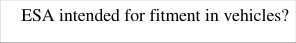
Figure 5
Figure 6
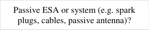
Figure 7
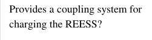
Figure 8
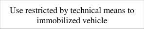
Figure 9
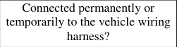
Figure 10
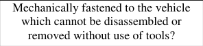
Figure 11
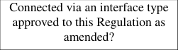
Figure 12
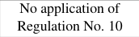
Figure 13
3.2.2電磁両立性に関する型式認証申請は製造者が行う。The application for approval of a type of ESA with regard to its▼
English (Original)
The application for approval of a type of ESA with regard to its electromagnetic compatibility shall be submitted by the vehicle manufacturer or by the manufacturer of the ESA.
3.2.3情報書類のモデルは附属書2Bに記載される。A model of information document is shown in Annex 2B.▼
English (Original)
A model of information document is shown in Annex 2B.
日本語訳
情報書類のモデルは、附属書2Bに示されている。
3.2.4製造者は試験報告書を補足でき、認証機関はそれを使用できる。The manufacturer may supplement the application with a report on tests which▼
English (Original)
The manufacturer may supplement the application with a report on tests which have been carried out. Any such data provided may be used by the Type Approval Authority for the purpose of drawing up the communication form for type approval.
3.2.5技術機関が試験する場合、代表サンプルを提供しなければならない。If the Technical Service responsible for the type approval test carries out the▼
English (Original)
If the Technical Service responsible for the type approval test carries out the test itself, then a sample of the ESA system representative of the type to be approved shall be provided, if necessary, after discussion with the manufacturer on, e.g. possible variations in the layout, number of components, number of sensors. If the Technical Service deems it necessary, it may select a further sample.
3.2.8スペアパーツは、同一かつ純正品であれば型式認証不要である。ESA which are brought to the market as spare parts need no type approval if▼
English (Original)
ESA which are brought to the market as spare parts need no type approval if they are obviously marked as a spare part by an identification number and if they are identical and from the same manufacturer as the corresponding Original Equipment Manufacturer (OEM) part for an already type approved vehicle.
3.2.9アフターマーケット部品は、イミュニティ無関係なら型式認証不要である。Components sold as aftermarket equipment and intended for the installation in▼
English (Original)
Components sold as aftermarket equipment and intended for the installation in motor vehicles need no type approval if they are not related to immunity related functions (see paragraph 2.12.). In this case a declaration shall be issued by the manufacturer that the ESA fulfils the requirements of this Regulation and in particular the limits defined in paragraphs 6.5., 6.6., 6.7., 6.8. and 6.9. of this Regulation.
3.2.10光源のESAは承認番号指定か非互換性報告書が必要である。In case of an ESA is (part of) a light source, the applicant shall:▼
English (Original)
In case of an ESA is (part of) a light source, the applicant shall: (a) Specify the approval number according to Regulation No. 37, Regulation No. 99 or Regulation No. 128, granted to this ESA; or (b) Provide a test report by a Technical Service designated by the Type Approval Authority, stating that this ESA is not mechanically interchangeable with any light source according to Regulation No. 37, Regulation No. 99 or Regulation No. 128.
4.1.1.1車両装備は直接型式認証可能で個別試験は不要。Approval of a vehicle installation▼
English (Original)
Approval of a vehicle installation A vehicle installation may be type approved directly by following the provisions laid down in paragraph 6. and, if applicable, in paragraph 7. of this Regulation. If this procedure is chosen by a vehicle manufacturer, no separate testing of electrical/electronic systems or ESAs is required.
4.1.1.2個々の特定電子サブアセンブリ試験で車両認証取得可能。Approval of vehicle type by testing of individual ESAs.▼
English (Original)
Approval of vehicle type by testing of individual ESAs. A vehicle manufacturer may obtain approval for the vehicle by demonstrating to the Type Approval Authority that all the relevant (see para. 3.1.3. of this Regulation) electrical/electronic systems or ESAs have been approved in accordance with this Regulation and have been installed in accordance with any conditions attached thereto.
4.1.1.3試験対象装置がない車両は試験なしで認証可能。A manufacturer may obtain approval according to this Regulation if the vehicle▼
English (Original)
A manufacturer may obtain approval according to this Regulation if the vehicle has no equipment of the type, which is subject to immunity or emission tests. Such approvals do not require testing.
4.1.2特定電子サブアセンブリは部品または独立技術ユニットとして認証可能。Type approval of an ESA▼
English (Original)
Type approval of an ESA Type approval may be granted to an ESA to be fitted either to any vehicle type (component approval) or to a specific vehicle type or types requested by the ESA manufacturer (separate technical unit approval). 11
4.1.3未認証の意図的無線周波数送信機には取り付けガイドラインが必要。ESAs, which are intentional RF transmitters, which have not received type▼
English (Original)
ESAs, which are intentional RF transmitters, which have not received type approval in conjunction with a vehicle manufacturer, shall be supplied with suitable installation guidelines.
4.2.1.1代表車両が要件を満たせば型式認証が付与される。If the representative vehicle fulfils the requirements of paragraph 6. and, if▼
English (Original)
If the representative vehicle fulfils the requirements of paragraph 6. and, if applicable, paragraph 7. of this Regulation, type approval shall be granted.
4.2.1.2型式認証連絡票モデルは附属書3Aに記載。A model of communication form for type approval is contained in Annex 3A.▼
English (Original)
A model of communication form for type approval is contained in Annex 3A.
日本語訳
型式認証のための連絡票のモデルは、附属書3Aに含まれている。
4.2.2電気的サブアセンブリESA▼
English (Original)
ESA
日本語訳
電気的サブアセンブリ
4.2.2.1代表電気的サブアセンブリが要件を満たせば型式認証が付与される。If the representative ESA system(s) fulfil(s) the requirements of paragraph 6.▼
English (Original)
If the representative ESA system(s) fulfil(s) the requirements of paragraph 6. and, if applicable, paragraph 7. of this Regulation, type approval shall be granted.
4.2.2.2型式認証連絡票のモデルは附属書3Bにある。A model of communication form for type approval is contained in Annex 3B.▼
English (Original)
A model of communication form for type approval is contained in Annex 3B.
日本語訳
型式認証のための連絡票のモデルは、附属書3Bに記載されている。
4.2.3型式認証当局は、認定試験機関の報告書を使用できる。In order to draw up the communication forms referred to in paragraph 4.2.1.2.▼
English (Original)
In order to draw up the communication forms referred to in paragraph 4.2.1.2. or 4.2.2.2. above, the Type Approval Authority of the Contracting Party granting the approval may use a report prepared or approved by a recognized laboratory or in accordance with the provisions of this Regulation.
4.2.4電気的サブアセンブリが光源の一部で文書不足の場合、認証は付与されない。In case of an ESA is (part of) a light source and if the documentation as▼
English (Original)
In case of an ESA is (part of) a light source and if the documentation as specified in paragraph 3.2.10. above is missing, approval of this ESA according to Regulation No. 10 shall not be granted.
4.3車両または電気的サブアセンブリの認証結果は、所定の様式で締約国に通知される。Approval, or refusal of approval, of a type of vehicle or ESA in accordance▼
English (Original)
Approval, or refusal of approval, of a type of vehicle or ESA in accordance with this Regulation shall be notified to the Parties to the Agreement applying this Regulation on a form conforming to the model in Annex 3A or 3B to this Regulation, accompanied by photographs and/or diagrams or drawings on an appropriate scale supplied by the applicant in a format not larger than A4 (210 x 297 mm) or folded to those dimensions.
日本語訳
本規則に従った車両または電気的サブアセンブリの型式の認証または認証拒否は、本規則の附属書3Aまたは3Bのモデルに適合する様式の連絡票により、本規則を適用する協定締約国に通知されるものとし、申請者から提供される適切な縮尺の写真および/または図または図面（A4（210 x 297 mm）以下のサイズ、またはその寸法に折りたたまれたもの）を添付するものとする。
5表示Markings
5表示について定める。Markings▼
English (Original)
Markings
日本語訳
表示
5.1承認された車両または電気的サブアセンブリには承認番号が割り当てられ、同じ番号を再利用してはならない。An approval number shall be assigned to each vehicle or ESA type approved.▼
English (Original)
An approval number shall be assigned to each vehicle or ESA type approved. The first two digits of this number (at present 06) shall indicate the series of amendments corresponding to the most recent essential technical amendments made to the Regulation at the date of approval. A Contracting Party may not assign the same approval number to another type of vehicle or ESA.
Sub-assembly An approval mark described in paragraph 5.3. below shall be affixed to every ESA conforming to a type approved under this Regulation. No marking is required for electrical/electronic systems built into vehicles which are approved as units. 12
5.3認可車両には国際認可マークを貼付する。An international approval mark shall be affixed, in a conspicuous and easily▼
English (Original)
An international approval mark shall be affixed, in a conspicuous and easily accessible place specified on the approval communication form, on each vehicle conforming to the type approved under this Regulation. This mark shall comprise:
5.3.1マークは「E」の文字と国番号を含む。A circle containing the letter "E", followed by the distinguishing number of the▼
English (Original)
A circle containing the letter "E", followed by the distinguishing number of the country granting the approval.2
日本語訳
「E」の文字を囲む円と、その後に認可を付与した国の識別番号。
5.3.2マークは規則番号、R、ダッシュ、認可番号を含む。The number of this Regulation, followed by the letter "R", a dash and the▼
English (Original)
The number of this Regulation, followed by the letter "R", a dash and the approval number to the right of the circle specified in paragraph 5.3.1. above.
6REESS充電モード以外の仕様Specification in configurations other than REESS charging mode coupled
6REESS充電モード以外の構成の仕様を定める。Specification in configurations other than REESS▼
English (Original)
Specification in configurations other than REESS charging mode coupled to the power grid
日本語訳
電力網に接続されたREESS充電モード以外の構成における仕様
6.1一般仕様について規定する。General specifications▼
English (Original)
General specifications
日本語訳
一般仕様
6.1.1車両及び電気/電子システムは規則要件に適合するよう設計する。A vehicle and its electrical/electronic system(s) or ESA(s) shall be so designed,▼
English (Original)
A vehicle and its electrical/electronic system(s) or ESA(s) shall be so designed, constructed and fitted as to enable the vehicle, in normal conditions of use, to comply with the requirements of this Regulation.
6.1.1.1車両は放射エミッションとイミュニティ試験が必要である。A vehicle shall be tested for radiated emissions and for immunity to radiated▼
English (Original)
A vehicle shall be tested for radiated emissions and for immunity to radiated disturbances. No tests for conducted emissions or immunity to conducted disturbances are required for vehicle type approval.
6.1.2技術機関は製造業者と試験計画を作成する。Before testing, the Technical Service has to prepare a test plan in conjunction with▼
English (Original)
Before testing, the Technical Service has to prepare a test plan in conjunction with the manufacturer, which contains at least mode of operation, stimulated function(s), monitored function(s), pass/fail criterion(criteria) and intended emissions.
6.2車両からの広帯域電磁放射に関する仕様を定める。Specifications concerning broadband electromagnetic radiation from vehicles▼
English (Original)
Specifications concerning broadband electromagnetic radiation from vehicles
日本語訳
車両からの広帯域電磁放射に関する仕様
6.2.1車両の電磁放射は附属書4の方法で測定する。Method of measurement▼
English (Original)
Method of measurement The electromagnetic radiation generated by the vehicle representative of its type shall be measured using the method described in Annex 4. The method of measurement shall be defined by the vehicle manufacturer in accordance with the Technical Service.
6.2.2車両広帯域の型式認証限度値を定める。Vehicle broadband type approval limits▼
English (Original)
Vehicle broadband type approval limits
日本語訳
車両広帯域型式認証限度値
6.2.2.1車両とアンテナ間隔10mの場合、限度値は周波数帯により異なる。If measurements are made using the method described in Annex 4 using a▼
English (Original)
If measurements are made using the method described in Annex 4 using a vehicle-to-antenna spacing of 10.0 ± 0.2 m, the limits shall be 32 dB microvolts/m in the 30 to 75 MHz frequency band and 32 to 43 dB microvolts/m in the 75 to 400 MHz frequency band, this limit increasing logarithmically with frequencies above 75 MHz as shown in
6REESS充電モード以外の仕様Specification in configurations other than REESS charging mode coupled
6.2.2.2車両とアンテナ間隔3mの場合、限度値は周波数帯により異なる。If measurements are made using the method described in Annex 4 using a▼
English (Original)
If measurements are made using the method described in Annex 4 using a vehicle-to-antenna spacing of 3.0 ± 0.05 m, the limits shall be 42 dB microvolts/m in the 30 to 75 MHz frequency band and 42 to 53 dB microvolts/m in the 75 to 400 MHz frequency band, this limit increasing logarithmically with frequencies above 75 MHz as shown in Appendix 3 to this Regulation. In the 400 to 1,000 MHz frequency band the limit remains constant at 53 dB microvolts/m.
6.3車両からの狭帯域電磁放射の仕様を定める。Specifications concerning narrowband electromagnetic radiation from vehicles▼
English (Original)
Specifications concerning narrowband electromagnetic radiation from vehicles
日本語訳
車両からの狭帯域電磁放射に関する仕様
6.3.1電磁放射は附属書5の方法で測定し、測定方法は製造業者が定める。Method of measurement▼
English (Original)
Method of measurement The electromagnetic radiation generated by the vehicle representative of its type shall be measured using the method described in Annex 5. These shall be defined by the vehicle manufacturer in accordance with the Technical Service.
6.3.2車両狭帯域の型式認証限度値を定める。Vehicle narrowband type approval limits▼
English (Original)
Vehicle narrowband type approval limits
日本語訳
車両狭帯域型式認証限度値
6.3.2.1車両とアンテナ間隔10mの場合、限度値は周波数帯により異なる。If measurements are made using the method described in Annex 5 using a▼
English (Original)
If measurements are made using the method described in Annex 5 using a vehicle-to-antenna spacing of 10.0 ± 0.2 m, the limits shall be 28 dB microvolts/m in the 30 to 230 MHz frequency band and 35 dB microvolts/m in the 230 to 1,000 MHz frequency band.
6.3.2.2測定は附属書5の方法で行い、周波数帯域に応じた限度値を適用する。If measurements are made using the method described in Annex 5 using a▼
English (Original)
If measurements are made using the method described in Annex 5 using a vehicle-to-antenna spacing of 3.0 ± 0.05 m, the limits shall be 38 dB microvolts/m in the 30 to 230 MHz frequency band and 45 dB microvolts/m in the 230 to 1,000 MHz frequency band.
6.3.2.4初期段階で信号強度が20dB未満なら適合とみなし追加試験は不要。Notwithstanding the limits defined in paragraphs 6.3.2.1., 6.3.2.2. and 6.3.2.3.▼
English (Original)
Notwithstanding the limits defined in paragraphs 6.3.2.1., 6.3.2.2. and 6.3.2.3. of this Regulation, if, during the initial step described in paragraph 1.3. of Annex 5, the signal strength measured at the vehicle broadcast radio antenna is less than 20 dB micro-volts over the frequency range 76 to 108 MHz measured with an average detector, then the vehicle shall be deemed to comply with the limits for narrowband emissions and no further testing will be required.
6.4車両の電磁放射に対するイミュニティに関する仕様。Specifications concerning immunity of vehicles to electromagnetic radiation▼
English (Original)
Specifications concerning immunity of vehicles to electromagnetic radiation
日本語訳
車両の電磁放射に対するイミュニティに関する仕様
6.4.1車両の電磁放射イミュニティは附属書6で試験する。Method of testing▼
English (Original)
Method of testing The immunity to electromagnetic radiation of the vehicle representative of its type shall be tested by the method described in Annex 6.
6.4.2車両イミュニティの型式認証限度値を定める。Vehicle immunity type approval limits▼
English (Original)
Vehicle immunity type approval limits
日本語訳
車両イミュニティ型式認証限度値
6.4.2.1電界強度は周波数帯域の90%以上で30V/m、全体で25V/m以上とする。If tests are made using the method described in Annex 6, the field strength shall▼
English (Original)
If tests are made using the method described in Annex 6, the field strength shall be 30 volts/m rms (root mean squared) in over 90 per cent of the 20 to 2,000 MHz frequency band and a minimum of 25 volts/m rms over the whole 20 to 2,000 MHz frequency band.
Specification concerning broadband electromagnetic interference generated by ESAs
日本語訳
電子サブアセンブリによって発生する広帯域電磁妨害に関する仕様
6.5.1電子サブアセンブリの電磁放射は附属書7の方法で測定する。Method of measurement▼
English (Original)
Method of measurement The electromagnetic radiation generated by the ESA representative of its type shall be measured by the method described in Annex 7.
6.5.2電子サブアセンブリ広帯域型式認証の限度値。ESA broadband type approval limits▼
English (Original)
ESA broadband type approval limits
日本語訳
電子サブアセンブリ広帯域型式認証限度値
6.5.2.1広帯域測定限度値は周波数帯域により対数的に変化する。If measurements are made using the method described in Annex 7, the limits▼
English (Original)
If measurements are made using the method described in Annex 7, the limits shall be 62 to 52 dB microvolts/m in the 30 to 75 MHz frequency band, this limit decreasing logarithmically with frequencies above 30 MHz, and 52 to 63 dB microvolts/m in the 75 to 400 MHz band, this limit increasing logarithmically with frequencies above 75 MHz as shown in Appendix 6 to this Regulation. In the 400 to 1,000 MHz frequency band the limit remains constant at 63 dB microvolts/m.
Specifications concerning narrowband electromagnetic interference generated by ESAs
日本語訳
電気・電子サブアセンブリによって発生する狭帯域電磁妨害に関する仕様
6.6.1電磁放射は附属書8の方法で測定する。Method of measurement▼
English (Original)
Method of measurement The electromagnetic radiation generated by the ESA representative of its type shall be measured by the method described in Annex 8.
6.6.2電気・電子サブアセンブリの狭帯域型式認証限度値を定める。ESA narrowband type approval limits▼
English (Original)
ESA narrowband type approval limits
日本語訳
電気・電子サブアセンブリの狭帯域型式認証限度値
6.6.2.1狭帯域測定限度値は周波数帯域により対数的に変化する。If measurements are made using the method described in Annex 8, the limits▼
English (Original)
If measurements are made using the method described in Annex 8, the limits shall be 52 to 42 dB microvolts/m in the 30 to 75 MHz frequency band, this limit decreasing logarithmically with frequencies above 30 MHz, and 42 to 53 dB microvolts/m in the 75 to 400 MHz band, this limit increasing logarithmically with frequencies above 75 MHz as shown in Appendix 7. In the 400 to 1,000 MHz frequency band the limit remains constant at 53 dB microvolts/m.
6.7電気・電子サブアセンブリの過渡伝導妨害放出に関する仕様を定める。Specifications concerning the emission of transient conducted disturbances▼
English (Original)
Specifications concerning the emission of transient conducted disturbances generated by ESAs on 12/24 V supply lines
日本語訳
12/24V電源線上で電気・電子サブアセンブリによって発生する過渡伝導妨害の放出に関する仕様
6.7.1放出はISO 7637-2の方法で試験する。Method of testing▼
English (Original)
Method of testing The emission of ESA representative of its type shall be tested by the method(s) according to ISO 7637-2 as described in Annex 10 for the levels given in Table 1. 15
6.8電子サブアセンブリの電磁放射イミュニティに関する仕様。Specifications concerning immunity of ESAs to electromagnetic radiation▼
English (Original)
Specifications concerning immunity of ESAs to electromagnetic radiation
日本語訳
電子サブアセンブリの電磁放射に対するイミュニティに関する仕様
6.8.1電子サブアセンブリの電磁放射イミュニティは附属書9の方法で試験する。Method(s) of testing▼
English (Original)
Method(s) of testing The immunity to electromagnetic radiation of the ESA representative of its type shall be tested by the method(s) chosen from those described in Annex 9.
6.8.2電子サブアセンブリのイミュニティ型式認証限度。ESA immunity type approval limits▼
English (Original)
ESA immunity type approval limits
日本語訳
電子サブアセンブリのイミュニティ型式認証限度
6.8.2.1イミュニティ試験レベルは、各試験方法で所定の実効値以上とする。If tests are made using the methods described in Annex 9, the immunity test▼
English (Original)
If tests are made using the methods described in Annex 9, the immunity test levels shall be 60 volts/m root-mean-square (rms) for the 150 mm stripline testing method, 15 volts/m rms for the 800 mm stripline testing method, 75 volts/m rms for the Transverse Electromagnetic Mode (TEM) cell testing method, 60 mA rms for the bulk current injection (BCI) testing method and 30 volts/m rms for the free field testing method in over 90 per cent of the 20 to 2,000 MHz frequency band, and to a minimum of 50 volts/m rms for the 150 mm stripline testing method, 12.5 volts/m rms for the 800 mm stripline testing method, 62.5 volts/m rms, for the TEM cell testing method, 50 mA rms for the bulk current injection (BCI) testing method and 25 volts/m rms for the free field testing method over the whole 20 to 2,000 MHz frequency band.
6.8.2.2イミュニティ関連機能の性能劣化がなければ適合とみなす。The ESA representative of its type shall be considered as complying with▼
English (Original)
The ESA representative of its type shall be considered as complying with immunity requirements if, during the tests performed in accordance with Annex 9, there shall be no degradation of performance of "immunity related functions".
6.9電源線伝導過渡妨害に対する電子サブアセンブリのイミュニティ仕様を定める。Specifications concerning the immunity of ESAs to transient disturbances▼
English (Original)
Specifications concerning the immunity of ESAs to transient disturbances conducted along 12/24 V supply lines
日本語訳
12/24 V電源線に沿って伝導される過渡妨害に対する電子サブアセンブリのイミュニティに関する仕様
6.9.1電子サブアセンブリのイミュニティはISO 7637-2に従い試験する。Method of testing▼
English (Original)
Method of testing The immunity of ESA representative of this type shall be tested by the method(s) according to ISO 7637-2 as described in Annex 10 with the test levels given in Table 2. Table 2 Immunity of ESA
6.10.
Exceptions
6.10.1.
Where a vehicle or electrical/electronic system or ESA does not include an
electronic oscillator with an operating frequency greater than 9 kHz, it shall be
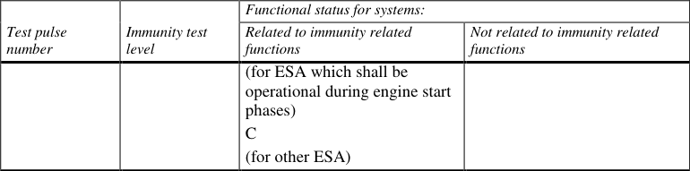
6.10.
Exceptions
6.10.1.
Where a vehicle or electrical/electronic system or ESA does not include an
electronic oscillator with an operating frequency greater than 9 kHz, it shall be
6.10本項では例外事項を定める。Exceptions▼
English (Original)
Exceptions
日本語訳
例外
6.10.19kHz超の発振器がない場合、特定の要件に適合とみなす。Where a vehicle or electrical/electronic system or ESA does not include an▼
English (Original)
Where a vehicle or electrical/electronic system or ESA does not include an electronic oscillator with an operating frequency greater than 9 kHz, it shall be deemed to comply with paragraph 6.3.2. or 6.6.2. and with Annexes 5 and 8.
6.10.2イミュニティ関連機能がない車両は、放射妨害イミュニティ試験が免除される。Vehicles which do not have electrical/electronic systems with "immunity related▼
English (Original)
Vehicles which do not have electrical/electronic systems with "immunity related functions" need not be tested for immunity to radiated disturbances and shall be deemed to comply with paragraph 6.4. and with Annex 6 to this Regulation.
6.10.3イミュニティ機能なしの電子サブアセンブリは試験不要とみなす。ESAs with no immunity related functions need not be tested for immunity to▼
English (Original)
ESAs with no immunity related functions need not be tested for immunity to radiated disturbances and shall be deemed to comply with paragraph 6.8. and with Annex 9 to this Regulation.
Electrostatic discharge For vehicles fitted with tyres, the vehicle body/chassis can be considered to be an electrically isolated structure. Significant electrostatic forces in relation to the vehicle's external environment only occur at the moment of occupant entry into or exit from the vehicle. As the vehicle is stationary at these moments, no type approval test for electrostatic discharge is deemed necessary.
6.10.5非スイッチングの電子サブアセンブリは過渡伝導エミッション試験不要。Emission of transient conducted disturbances generated by ESAs on 12/24 V▼
English (Original)
Emission of transient conducted disturbances generated by ESAs on 12/24 V supply lines. ESAs that are not switched, contain no switches or do not include inductive load need not be tested for transient conducted emission and shall be deemed to comply with paragraph 6.7.
6.10.6RF除外帯域内の受信機機能喪失は不合格基準ではない。The loss of function of receivers during the immunity test, when the test signal▼
English (Original)
The loss of function of receivers during the immunity test, when the test signal is within the receiver bandwidth (RF exclusion band) as specified for the specific radio service/product in the harmonized international EMC standard, does not necessarily lead to fail criteria.
6.10.7RF送信機は送信モードで試験し、スプリアスエミッションを規制する。RF transmitters shall be tested in the transmit mode. Wanted emissions (e.g.▼
English (Original)
RF transmitters shall be tested in the transmit mode. Wanted emissions (e.g. from RF transmitting systems) within the necessary bandwidth and out of band emissions are disregarded for the purpose of this Regulation. Spurious emissions are subject to this Regulation.
6.10.7.1「必要帯域幅」は情報伝送に十分な周波数幅をいう。"Necessary bandwidth": For a given class of emission, the width of the▼
English (Original)
"Necessary bandwidth": For a given class of emission, the width of the frequency band which is just sufficient to ensure the transmission of information at the rate and with the quality required under specified conditions (Article 1, No. 1.152 of the International Telecommunication Union (ITU) Radio Regulations).
6.10.7.2「帯域外エミッション」は変調起因の必要帯域外エミッションをいう。"Out-of-band Emissions": Emission on a frequency or frequencies▼
English (Original)
"Out-of-band Emissions": Emission on a frequency or frequencies immediately outside the necessary bandwidth which results from the modulation process, but excluding spurious emissions (Article 1, No. 1.144 of the ITU Radio Regulations). 17
6.10.7.3「スプリアスエミッション」は不要信号で、情報伝送に影響なく低減可能。"Spurious emission": In every modulation process additional undesired signals▼
English (Original)
"Spurious emission": In every modulation process additional undesired signals exist. They are summarized under the expression "spurious emissions". Spurious emissions are emissions on a frequency or frequencies, which are outside the necessary bandwidth and the level of which may be reduced without affecting the corresponding transmission of information. Spurious emissions include harmonic emissions, parasitic emissions, intermodulation products and frequency conversion products, but exclude out-of-band emissions (Article 1 No. 1.145 of the ITU Radio Regulations).
7REESS充電モードの追加仕様Additional specifications in the configuration "REESS charging mode coupled
7電力網接続時のREESS充電モードの追加仕様。Additional specifications in the configuration▼
English (Original)
Additional specifications in the configuration "REESS charging mode coupled to the power grid"
日本語訳
電力網に接続されたREESS充電モードにおける追加の仕様
7.1一般仕様について規定する。General specifications▼
English (Original)
General specifications
日本語訳
一般仕様
7.1.1車両はREESS充電モードで本規則要件に適合する設計とする。A vehicle and its electrical/electronic system(s) or ESA(s) shall be so designed,▼
English (Original)
A vehicle and its electrical/electronic system(s) or ESA(s) shall be so designed, constructed and fitted as to enable the vehicle, in configuration "REESS charging mode coupled to the power grid", to comply with the requirements of this Regulation.
7.1.1.1車両は充電モードで放射・伝導エミッションとイミュニティを試験する。A vehicle in configuration "REESS charging mode coupled to the power grid"▼
English (Original)
A vehicle in configuration "REESS charging mode coupled to the power grid" shall be tested for radiated emissions, immunity to radiated disturbances, conducted emissions and immunity to conducted disturbances.
7.1.1.2電気・電子サブアセンブリは充電モードで放射・伝導エミッションとイミュニティを試験する。ESAs in configuration "REESS charging mode coupled to the power grid"▼
English (Original)
ESAs in configuration "REESS charging mode coupled to the power grid" shall be tested for radiated and conducted emissions, for immunity to radiated and conducted disturbances.
7.1.2技術機関は製造者と共同で充電モードの試験計画を作成する。Before testing the Technical Service has to prepare a test plan in conjunction▼
English (Original)
Before testing the Technical Service has to prepare a test plan in conjunction with the manufacturer, for the configuration "REESS charging mode coupled to the power grid" configuration which contains at least mode of operation, stimulated function(s), monitored function(s), pass/fail criterion (criteria) and intended emissions.
7.1.3充電モードの車両は製造者提供の充電ハーネスで試験すべきである。A vehicle in configuration "REESS charging mode coupled to the power grid"▼
English (Original)
A vehicle in configuration "REESS charging mode coupled to the power grid" should be tested with the charging harness delivered by the manufacturer. In this case, the cable shall be type approved as part of the vehicle.
Artificial networks AC Power mains shall be applied to the vehicle / ESA through 50 µH/50 AMN(s) as defined in Appendix 8 clause 4. DC Power mains shall be applied to the vehicle / ESA through 5 µH/50 DC- charging-AN(s) as defined in Appendix 8 clause 3. High voltage power line shall be applied to the ESA through a 5 µH/50 HV- AN(s) as defined in Appendix 8 clause 2.
7.2車両からの広帯域電磁放射に関する仕様を定める。Specifications concerning broadband electromagnetic radiation from vehicles▼
English (Original)
Specifications concerning broadband electromagnetic radiation from vehicles
日本語訳
車両からの広帯域電磁放射に関する仕様
7.2.1車両の電磁放射は附属書4の方法で測定する。Method of measurement▼
English (Original)
Method of measurement The electromagnetic radiation generated by the vehicle representative of its type shall be measured using the method described in Annex 4. The method of measurement shall be defined by the vehicle manufacturer in accordance with the Technical Service.
7.2.2車両広帯域型式承認限度を定める。Vehicle broadband type approval limits▼
English (Original)
Vehicle broadband type approval limits 18
日本語訳
車両広帯域型式承認限度
7.2.2.1アンテナ間隔10mの場合、周波数帯に応じた放射限度を定める。If measurements are made using the method described in Annex 4 using a▼
English (Original)
If measurements are made using the method described in Annex 4 using a vehicle-to-antenna spacing of 10.0 ± 0.2 m, the limits shall be 32 dB microvolts/m in the 30 to 75 MHz frequency band and 32 to 43 dB microvolts/m in the 75 to 400 MHz frequency band, this limit increasing logarithmically with frequencies above 75 MHz as shown in Appendix 2. In the 400 to 1,000 MHz frequency band the limit remains constant at 43 dB microvolts/m.
7.2.2.2アンテナ間隔3mの場合、周波数帯に応じた放射限度を定める。If measurements are made using the method described in Annex 4 using a▼
English (Original)
If measurements are made using the method described in Annex 4 using a vehicle-to-antenna spacing of 3.0 ± 0.05 m, the limits shall be 42 dB microvolts/m in the 30 to 75 MHz frequency band and 42 to 53 dB microvolts/m in the 75 to 400 MHz frequency band, this limit increasing logarithmically with frequencies above 75 MHz as shown in Appendix 3. In the 400 to 1,000 MHz frequency band the limit remains constant at 53 dB microvolts/m. On the vehicle representative of its type, the measured values, expressed in dB microvolts/m shall be below the type approval limits.
7.3車両からの交流電力線高調波放出に関する仕様を定める。Specifications concerning emission of harmonics on AC power lines from▼
English (Original)
Specifications concerning emission of harmonics on AC power lines from vehicles
日本語訳
車両からの交流電力線高調波放出に関する仕様
7.3.1高調波放出は附属書11の方法で測定し、測定方法は製造業者が定める。Method of measurement▼
English (Original)
Method of measurement The harmonics emission on AC power lines generated by the vehicle representative of its type shall be measured using the method described in Annex 11. The method of measurement shall be defined by the vehicle manufacturer in accordance with the Technical Service.
7.3.2.1入力電流16A以下の高調波限度はIEC 61000-3-2および表3による。If measurements are made using the method described in Annex 11, the limits▼
English (Original)
If measurements are made using the method described in Annex 11, the limits for input current ≤ 16 A per phase are those defined in IEC 61000-3-2 and given in Table 3. Table 3 Maximum allowed harmonics (input current ≤ 16 A per phase)
7.3.2.2入力電流16A超75A以下の高調波限度はIEC 61000-3-12および表4-6による。If measurements are made using the method described in Annex 11, the limits▼
English (Original)
If measurements are made using the method described in Annex 11, the limits for input current > 16 A and ≤ 75 A per phase are those defined in IEC 61000- 3-12, and given in given in Table 4, Table 5 and Table 6. Table 4 Maximum allowed harmonics (input current > 16 A and ≤ 75 A per phase) for single phase or other than balanced three-phase equipment
Relative values of even harmonics lower or equal to 12 shall be lower than 16/n %. Even
harmonics greater than 12 are taken into account in the Total Harmonic Distorsion (THD) and
Partial Weighted H
Table 5
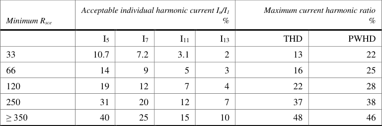
Relative values of even harmonics lower or equal to 12 shall be lower than 16/n %. Even
harmonics greater than 12 are taken into account in the THD and PWHD the same way than odd
harmonics.
Linear
Table 6
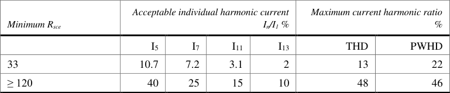
Relative values of even harmonics lower or equal to 12 shall be lower than 16/n %. Even
harmonics greater than 12 are taken into account in the THD and PWHD the same way than odd
harmonics
7.4車両からの交流電力線電圧変化、変動、フリッカ放出に関する仕様を定める。Specifications concerning emission of voltage changes, voltage fluctuations▼
English (Original)
Specifications concerning emission of voltage changes, voltage fluctuations and flicker on AC power lines from vehicles.
日本語訳
車両からの交流電力線電圧変化、電圧変動およびフリッカ放出に関する仕様
7.4.1電圧変化、変動、フリッカは附属書12の方法で測定し、測定方法は製造業者が定める。Method of measurement▼
English (Original)
Method of measurement The emission of voltage changes, voltage fluctuations and flicker on AC power lines generated by the vehicle representative of its type shall be measured using the method described in Annex 12. The method of measurement shall be defined by the vehicle manufacturer in accordance with the Technical Service.
7.4.2.1定格電流16A以下の電圧変化、変動、フリッカ限度はIEC 61000-3-3による。If measurements are made using the method described in Annex 12, the limits▼
English (Original)
If measurements are made using the method described in Annex 12, the limits for rated current ≤ 16 A per phase and not subjected to conditional connection are those defined in IEC 61000-3-3, paragraph 5: - The value of Pst shall not be greater than 1.0; - The value of Plt shall not be greater than 0.65; - The value of d(t) during a voltage change shall not exceed 3.3 per cent for more than 500 ms; - The relative steady-state voltage change, dc, shall not exceed 3.3 per cent; - The maximum relative voltage change dmax, shall not exceed 6 per cent.
7.4.2.2定格電流16A超75A以下の電圧変化、変動、フリッカ限度はIEC 61000-3-11による。If measurements are made using the method described in Annex 12, the limits▼
English (Original)
If measurements are made using the method described in Annex 12, the limits for rated current > 16 A and ≤ 75 A per phase and subjected to conditional connection are those defined in IEC 61000-3-11, paragraph 5: - The value of Pst shall not be greater than 1.0; - The value of Plt shall not be greater than 0.65; - The value of d(t) during a voltage change shall not exceed 3.3 per cent for more than 500 ms; - The relative steady-state voltage change, dc, shall not exceed 3.3 per cent; - The maximum relative voltage change dmax, shall not exceed 6 per cent.
7.5車両からの電力線伝導妨害波放出に関する仕様。Specifications concerning emission of radiofrequency conducted disturbances▼
English (Original)
Specifications concerning emission of radiofrequency conducted disturbances on AC or DC power lines from vehicles
日本語訳
車両からの交流又は直流電力線における無線周波数伝導妨害波の放出に関する仕様
7.5.1電力線伝導妨害波の測定は附属書13の方法に従う。Method of measurement▼
English (Original)
Method of measurement The emission of radiofrequency conducted disturbances on AC or DC power lines generated by the vehicle representative of its type shall be measured using the method described in Annex 13. The method of measurement shall be defined by the vehicle manufacturer in accordance with the Technical Service.
7.5.2.1交流電力線限度値はIEC 61000-6-3及び表7による。If measurements are made using the method described in Annex 13, the limits▼
English (Original)
If measurements are made using the method described in Annex 13, the limits on AC power lines are those defined in IEC 61000-6-3 and given in Table 7. Table 7 Maximum allowed radiofrequency conducted disturbances on AC power lines
7.5.2.2.
If measurements are made using the method described in Annex 13, the limits
on
DC
power
lines
are
those
defined
in
IEC
61000-6-3
and given in Table 8.
Table 8
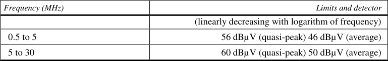
7.5.2.2.
If measurements are made using the method described in Annex 13, the limits
on
DC
power
lines
are
those
defined
in
IEC
61000-6-3
and given in Table 8.
Table 8
7.5.2.2直流電力線限度値はIEC 61000-6-3及び表8による。If measurements are made using the method described in Annex 13, the limits▼
English (Original)
If measurements are made using the method described in Annex 13, the limits on DC power lines are those defined in IEC 61000-6-3 and given in Table 8. Table 8 Maximum allowed radiofrequency conducted disturbances on DC power lines
7.6.
Specifications concerning emission of radiofrequency conducted disturbances
on wired network port from vehicles
7.6.1.
Method of measurement
7.6車両からの有線ネットワークポート伝導妨害波放出に関する仕様。Specifications concerning emission of radiofrequency conducted disturbances▼
English (Original)
Specifications concerning emission of radiofrequency conducted disturbances on wired network port from vehicles
日本語訳
車両からの有線ネットワークポートにおける無線周波数伝導妨害波の放出に関する仕様
7.6.1有線ネットワークポート伝導妨害波の測定は附属書14の方法に従う。Method of measurement▼
English (Original)
Method of measurement The emission of radiofrequency conducted disturbances on wired network port generated by the vehicle representative of its type shall be measured using the method described in Annex 14. The method of measurement shall be defined by the vehicle manufacturer in accordance with the Technical Service.
7.6.2.1有線ネットワークポート限度値はIEC 61000-6-3及び表9による。If measurements are made using the method described in Annex 14, the limits▼
English (Original)
If measurements are made using the method described in Annex 14, the limits on wired network port are those defined in IEC 61000-6-3 and given in Table
Table 9 Maximum allowed radiofrequency conducted disturbances wired network port
日本語訳
表9 有線ネットワークポートにおける許容最大無線周波数伝導妨害
Table
9.
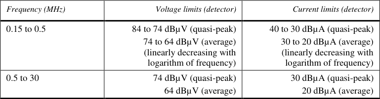
7REESS充電モードの追加仕様Additional specifications in the configuration "REESS charging mode coupled
7.7車両の電磁放射に対するイミュニティに関する仕様。Specifications concerning immunity of vehicles to electromagnetic radiation▼
English (Original)
Specifications concerning immunity of vehicles to electromagnetic radiation
日本語訳
車両の電磁放射に対するイミュニティに関する仕様
7.7.1車両の電磁放射イミュニティは附属書6で試験する。Method of testing▼
English (Original)
Method of testing The immunity to electromagnetic radiation of the vehicle representative of its type shall be tested by the method described in Annex 6.
7.7.2車両イミュニティの型式認証限度値を定める。Vehicle immunity type approval limits▼
English (Original)
Vehicle immunity type approval limits
日本語訳
車両イミュニティ型式認証限度値
7.7.2.1電界強度は周波数帯域の90%超で30V/m、全体で25V/m以上とする。If tests are made using the method described in Annex 6, the field strength shall▼
English (Original)
If tests are made using the method described in Annex 6, the field strength shall be 30 volts/m rms (root mean squared) in over 90 per cent of the 20 to 2,000 MHz frequency band and a minimum of 25 volts/m rms over the whole 20 to 2,000 MHz frequency band. 22
7.7.2.2試験中、イミュニティ関連機能の性能劣化がない場合、適合とみなす。The vehicle representative of its type shall be considered as complying with▼
English (Original)
The vehicle representative of its type shall be considered as complying with immunity requirements if, during the tests performed in accordance with Annex 6, there shall be no degradation of performance of "immunity related functions", according to paragraph 2.2. of Annex 6.
7.8.1.1車両の電気的ファストトランジェント/バーストイミュニティは附属書15で試験する。The immunity to Electrical Fast Transient/Burst disturbances conducted along▼
English (Original)
The immunity to Electrical Fast Transient/Burst disturbances conducted along AC and DC power lines of the vehicle representative of its type shall be tested by the method described in Annex 15.
7.8.2車両イミュニティの型式認証限度値を定める。Vehicle immunity type approval limits▼
English (Original)
Vehicle immunity type approval limits
日本語訳
車両イミュニティ型式認証限度値
7.8.2.1イミュニティ試験レベルは、開放回路で±2kV、Tr 5ns、Th 50ns、繰り返し率5kHzで1分間とする。If tests are made using the methods described in Annex 15, the immunity test▼
English (Original)
If tests are made using the methods described in Annex 15, the immunity test levels, for AC or DC power lines, shall be: ±2 kV test voltage in open circuit, with a rise time (Tr) of 5 ns, and a hold time (Th) of 50 ns and a repetition rate of 5 kHz for at least 1 minute.
7.8.2.2試験中、イミュニティ関連機能の性能劣化がない場合、適合とみなす。The vehicle representative of its type shall be considered as complying with▼
English (Original)
The vehicle representative of its type shall be considered as complying with immunity requirements if, during the tests performed in accordance with Annex 15, there shall be no degradation of performance of "immunity related functions", according to paragraph 2.2. of Annex 6.
7.9.2車両イミュニティの型式認証限度値を定める。Vehicle immunity type approval limits▼
English (Original)
Vehicle immunity type approval limits
日本語訳
車両イミュニティ型式認証限度値
7.9.2.1附属書16の試験では交流±2kV、直流±0.5kVとする。If tests are made using the methods described in Annex 16, the immunity test▼
English (Original)
If tests are made using the methods described in Annex 16, the immunity test levels shall be: (a) For AC power lines: ±2 kV test voltage in open circuit between line and earth and ±1 kV between lines (pulse 1.2 µs / 50 µs), with a rise time (Tr) of 1.2 µs, and a hold time (Th) of 50 µs. Each surge shall be applied five times with a maximum delay of 1 minute between each pulse. This has to be applied for the following phases: 0, 90, 180 and 270°, (b) For DC power lines: ±0.5 kV test voltage in open circuit between line and earth and ±0.5 kV between lines (pulse 1.2 µs / 50 µs) with a rise time (Tr) of 1.2 µs, and a hold time (Th) of 50 µs. Each surge shall be applied five times with a maximum delay of 1 minute.
7.9.2.2イミュニティ関連機能の性能劣化がない場合、適合とみなす。The vehicle representative of its type shall be considered as complying with▼
English (Original)
The vehicle representative of its type shall be considered as complying with immunity requirements if, during the tests performed in accordance with Annex 16, there shall be no degradation of performance of "immunity related functions", according to paragraph 2.2. of Annex 6.
Specifications concerning broadband electromagnetic interference caused by ESAs
日本語訳
電子サブアセンブリによって引き起こされる広帯域電磁妨害に関する仕様。
7.10.1電子サブアセンブリの電磁放射は附属書7で測定する。Method of measurement▼
English (Original)
Method of measurement The electromagnetic radiation generated by the ESA representative of its type shall be measured by the method described in Annex 7. 23
7.10.2電子サブアセンブリ広帯域型式認証の限度値。ESA broadband type approval limits▼
English (Original)
ESA broadband type approval limits
日本語訳
電子サブアセンブリ広帯域型式認証限度値
7.10.2.1附属書7の測定では、周波数帯域に応じて限度値が定められる。If measurements are made using the method described in Annex 7, the limits▼
English (Original)
If measurements are made using the method described in Annex 7, the limits shall be 62 to 52 dBµV/m in the 30 to 75 MHz frequency band, this limit decreasing logarithmically with frequencies above 30 MHz, and 52 to 63 dBµV/m in the 75 to 400 MHz band, this limit increasing logarithmically with frequencies above 75 MHz as shown in Appendix 6. In the 400 to 1,000 MHz frequency band the limit remains constant at 63 dBµV/m.
7.11ESAの交流電力線高調波放射に関する仕様。Specifications concerning emission of harmonics on AC power lines from▼
English (Original)
Specifications concerning emission of harmonics on AC power lines from ESAs
日本語訳
ESAからの交流電力線における高調波の放射に関する仕様。
7.11.1高調波放射は附属書17の方法で測定すること。Method of measurement▼
English (Original)
Method of measurement The harmonics emission on AC power lines generated by the ESA representative of its type shall be measured using the method described in Annex 17. The method of measurement shall be defined by the manufacturer in accordance with the Technical Service.
7.11.2電気・電子サブアセンブリの型式認証限度。ESA type approval limit▼
English (Original)
ESA type approval limit
日本語訳
電気・電子サブアセンブリの型式認証限度
7.11.2.1入力電流16A以下の高調波限度値はIEC 61000-3-2による。If measurements are made using the method described in Annex 17, the limits▼
English (Original)
If measurements are made using the method described in Annex 17, the limits for input current ≤ 16 A per phase are those defined in IEC 61000-3-2 and given in Table 10. Table 10 Maximum allowed harmonics (input current ≤ 16 A per phase)
7.11.2.2.
If measurements are made using the method described in Annex 17, the limits
for input current > 16 A and ≤ 75 A per phase are those defined in IEC 61000-
3-12 and given in Table 11, Table
7.11.2.2入力電流16A超75Aの高調波限度値はIEC 61000-3-12による。If measurements are made using the method described in Annex 17, the limits▼
English (Original)
If measurements are made using the method described in Annex 17, the limits for input current > 16 A and ≤ 75 A per phase are those defined in IEC 61000- 3-12 and given in Table 11, Table 12 and Table 13. Table 11 Maximum allowed harmonics (input current > 16 A and ≤ 75 A per phase) for single phase or other than balanced three-phase equipment 24
Relative values of even harmonics lower or equal to 12 shall be lower than 16/n %. Even
harmonics greater than 12 are taken into account in the THD and PWHD in the same way than
odd harmonics.
Line
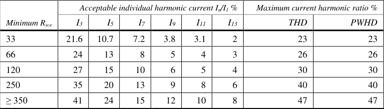
Relative values of even harmonics lower or equal to 12 shall be lower than 16/n %. Even
harmonics greater than 12 are taken into account in the THD and PWHD in the same way than
odd harmonics.
Line
Table 12
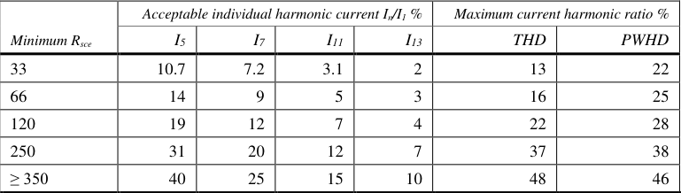
Relative values of even harmonics lower or equal to 12 shall be lower than 16/n %. Even
harmonics greater than 12 are taken into account in the THD and PWHD in the same way as odd
harmonics.
Linear
Table 13
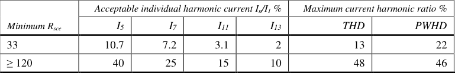
Relative values of even harmonics lower or equal to 12 shall be lower than 16/n %. Even harmonics
greater than 12 are taken into account in the THD and PWHD in the same way as odd harmonics.
7.12.
7.12ESAの交流電力線電圧変化・変動・フリッカ放射に関する仕様。Specifications concerning emission of voltage changes, voltage fluctuations▼
English (Original)
Specifications concerning emission of voltage changes, voltage fluctuations and flicker on AC power lines from ESAs
日本語訳
ESAからの交流電力線における電圧変化、電圧変動およびフリッカの放射に関する仕様。
7.12.1電圧変化・変動・フリッカは附属書18の方法で測定すること。Method of measurement▼
English (Original)
Method of measurement The emission of voltage changes, voltage fluctuations and flicker on AC power lines generated by the ESA representative of its type shall be measured using the method described in Annex 18. The method of measurement shall be defined by the ESA manufacturer in accordance with the Technical Service.
7.12.2.1定格電流16A以下の電圧変動限度値はIEC 61000-3-3による。If measurements are made using the method described in Annex 18, the limits▼
English (Original)
If measurements are made using the method described in Annex 18, the limits for rated current ≤ 16 A per phase and not subjected to conditional connection are those defined in IEC 61000-3-3, paragraph 5.
7.12.2.2定格電流16A超75A以下/相の限度はIEC 61000-3-11に定義される。If measurements are made using the method described in Annex 18, the limits▼
English (Original)
If measurements are made using the method described in Annex 18, the limits for rated current > 16 A and ≤ 75 A per phase and subjected to conditional connection are those defined in IEC 61000-3-11, paragraph 5.
7.13電気・電子サブアセンブリからの電力線伝導妨害波の放出仕様。Specifications concerning emission of radiofrequency conducted disturbances▼
English (Original)
Specifications concerning emission of radiofrequency conducted disturbances on AC or DC power lines from ESA
日本語訳
電気・電子サブアセンブリからの交流または直流電力線における無線周波数伝導妨害波の放出に関する仕様
7.13.1電力線伝導妨害波の測定は附属書19の方法で行う。Method of measurement▼
English (Original)
Method of measurement The emission of radiofrequency conducted disturbances on AC or DC power lines generated by the ESA representative of its type shall be measured using the method described in Annex 19. The method of measurement shall be defined by the ESA manufacturer in accordance with the Technical Service.
7.13.2電気・電子サブアセンブリの型式認証限度。ESA type approval limit▼
English (Original)
ESA type approval limit
日本語訳
電気・電子サブアセンブリの型式認証限度
7.13.2.1交流電力線伝導妨害波の限度はIEC 61000-6-3に定義される。If measurements are made using the method described in Annex 19, the limits▼
English (Original)
If measurements are made using the method described in Annex 19, the limits on AC power lines are those defined in IEC 61000-6-3 and given in Table 14. Table 14 Maximum allowed radiofrequency conducted disturbances on AC power lines
7.13.2.2.
If measurements are made using the method described in Annex 19, the limits
on DC power lines are those defined in IEC 61000-6-3 and given in Table 15.
Table 15
7.13.2.2直流電力線伝導妨害波の限度はIEC 61000-6-3に定義される。If measurements are made using the method described in Annex 19, the limits▼
English (Original)
If measurements are made using the method described in Annex 19, the limits on DC power lines are those defined in IEC 61000-6-3 and given in Table 15. Table 15 Maximum allowed radiofrequency conducted disturbances on DC power lines
7.14.
Specifications concerning emission of radiofrequency conducted disturbances
wired network port from ESA
7.14電気・電子サブアセンブリからの有線ネットワークポート伝導妨害波の放出仕様。Specifications concerning emission of radiofrequency conducted disturbances▼
English (Original)
Specifications concerning emission of radiofrequency conducted disturbances wired network port from ESA
日本語訳
電気・電子サブアセンブリからの有線ネットワークポートにおける無線周波数伝導妨害波の放出に関する仕様
7.14.1有線ネットワークポート伝導妨害波の測定は附属書20の方法で行う。Method of measurement▼
English (Original)
Method of measurement The emission of radiofrequency conducted disturbances on wired network port generated by the ESA representative of its type shall be measured using the method described in Annex 20. The method of measurement shall be defined by the ESA manufacturer in accordance with the Technical Service.
7.14.2電気・電子サブアセンブリの型式認証限度。ESA type approval limit▼
English (Original)
ESA type approval limit 26
日本語訳
電気・電子サブアセンブリの型式認証限度
7.14.2.1有線ネットワークポート伝導妨害波の限度はIEC 61000-6-3に定義される。If measurements are made using the method described in Annex 20, the limits▼
English (Original)
If measurements are made using the method described in Annex 20, the limits on wired network port are those defined in IEC 61000-6-3 and given in Table
7.15.1.1電子サブアセンブリの電気的ファストトランジェント/バースト妨害イミュニティは附属書21で試験する。The immunity to Electrical Fast Transient/Burst disturbances conducted along▼
English (Original)
The immunity to Electrical Fast Transient/Burst disturbances conducted along AC and DC power lines of the ESA representative of its type shall be tested by the method described in Annex 21.
7.15.2電子サブアセンブリのイミュニティ型式認証限度。ESA immunity type approval limits▼
English (Original)
ESA immunity type approval limits
日本語訳
電子サブアセンブリのイミュニティ型式認証限度
7.15.2.1イミュニティ試験レベルは、開放回路で±2 kV、Tr 5 ns、Th 50 ns、5 kHzで1分間とする。If tests are made using the methods described in Annex 21, the immunity test▼
English (Original)
If tests are made using the methods described in Annex 21, the immunity test levels, for AC or DC power lines, shall be: ± 2 kV test voltage in open circuit, with a rise time (Tr) of 5 ns, and a hold time (Th) of 50 ns and a repetition rate of 5 kHz for at least 1 minute.
7.15.2.2イミュニティ関連機能の性能劣化がない場合、電子サブアセンブリはイミュニティ要件に適合する。The ESA representative of its type shall be considered as complying with▼
English (Original)
The ESA representative of its type shall be considered as complying with immunity requirements if, during the tests performed in accordance with Annex 21, there shall be no degradation of performance of "immunity related functions", according to paragraph 2.2. of Annex 9.
7.16.2電子サブアセンブリのイミュニティ型式認証限度。ESA immunity type approval limits▼
English (Original)
ESA immunity type approval limits
日本語訳
電子サブアセンブリのイミュニティ型式認証限度
7.16.2.1イミュニティ試験レベルは、交流線で±2kV、直流線で±0.5kVとする。If tests are made using the methods described in Annex 22, the immunity test▼
English (Original)
If tests are made using the methods described in Annex 22, the immunity test levels shall be: (a) For AC power lines: ±2 kV test voltage in open circuit between line and earth and ±1 kV between lines (pulse 1.2 µs / 50 µs), with a rise time (Tr) of 1.2 µs, and a hold time (Th) of 50 µs. Each surge shall be applied five times with a maximum delay of 1 minute between each pulse. This has to be applied for the following phases: 0, 90, 180 and 270°, (b) For DC power lines: ±0.5 kV test voltage in open circuit between line and earth and ±0.5 kV between lines (pulse 1.2 µs / 50 µs) with a rise time (Tr) of 1.2 µs, and a hold time (Th) of 50 µs. Each surge shall be applied five times with a maximum delay of 1 minute. 27
7.16.2.2イミュニティ関連機能の性能劣化がなければ適合とみなす。The ESA representative of its type shall be considered as complying with▼
English (Original)
The ESA representative of its type shall be considered as complying with immunity requirements if, during the tests performed in accordance with Annex 22, there shall be no degradation of performance of "immunity related functions", according to paragraph 2.2. of Annex 9.
7.17電子サブアセンブリの過渡伝導妨害波放出に関する仕様。Specifications concerning the emission of transient conducted disturbances▼
English (Original)
Specifications concerning the emission of transient conducted disturbances generated by ESAs on 12 / 24 V supply lines
日本語訳
12 V / 24 V電源線上で電子サブアセンブリによって生成される過渡伝導妨害波の放出に関する仕様
7.17.1電子サブアセンブリの放出はISO 7637-2で試験する。Method of testing▼
English (Original)
Method of testing The emission of ESA representative of its type shall be tested by the method(s) according to ISO 7637-2, as described in Annex 10 for the levels given in Table
7.18電子サブアセンブリの電磁放射イミュニティに関する仕様。Specifications concerning immunity of ESAs to electromagnetic radiation▼
English (Original)
Specifications concerning immunity of ESAs to electromagnetic radiation
日本語訳
電子サブアセンブリの電磁放射に対するイミュニティに関する仕様
7.18.1電子サブアセンブリの電磁放射イミュニティは附属書9の方法で試験する。Method(s) of testing▼
English (Original)
Method(s) of testing The immunity to electromagnetic radiation of the ESA representative of its type shall be tested by the method(s) chosen from those described in Annex 9.
7.18.2電子サブアセンブリのイミュニティ型式認証限度。ESA immunity type approval limits▼
English (Original)
ESA immunity type approval limits
日本語訳
電子サブアセンブリのイミュニティ型式認証限度
7.18.2.1イミュニティ試験レベルは、試験方法に応じ規定値以上とする。If tests are made using the methods described in Annex 9, the immunity test▼
English (Original)
If tests are made using the methods described in Annex 9, the immunity test levels shall be 60 volts/m rms for the 150 mm stripline testing method, 15 volts/m rms for the 800 mm stripline testing method, 75 volts/m rms for the Transverse Electromagnetic Mode (TEM) cell testing method, 60 mA rms for the Bulk Current Injection (BCI) testing method and 30 volts/m rms for the free field testing method in over 90 per cent of the 20 to 2,000 MHz frequency band, and to a minimum of 50 volts/m rms for the 150 mm stripline testing method, 12.5 volts/m rms for the 800 mm stripline testing method, 62.5 volts/m rms, for the TEM cell testing method, 50 mA rms for the bulk current injection (BCI) testing method and 25 volts/m rms for the free field testing method over the whole 20 to 2,000 MHz frequency band.
7.18.2.2イミュニティ関連機能の性能劣化がなければ適合とみなす。The ESA representative of its type shall be considered as complying with▼
English (Original)
The ESA representative of its type shall be considered as complying with immunity requirements if, during the tests performed in accordance with Annex 9, there shall be no degradation of performance of "immunity related functions".
7.19電子サブアセンブリの過渡伝導妨害波イミュニティに関する仕様。Specifications concerning the immunity of ESAs to transient disturbances▼
English (Original)
Specifications concerning the immunity of ESAs to transient disturbances conducted along 12 / 24 V supply lines.
日本語訳
12 V / 24 V電源線に沿って伝導される過渡妨害波に対する電子サブアセンブリのイミュニティに関する仕様
7.19.1電気・電子サブアセンブリのイミュニティはISO 7637-2で試験する。Method of testing▼
English (Original)
Method of testing The immunity of ESA representative of its type shall be tested by the method(s) according to ISO 7637-2, as described in Annex 10 with the test levels given in Table 18.
7.20.1充電通信以外の有線ネットワーク接続がない場合、附属書14と20は適用されない。When there is no direct connection to a wired network which includes▼
English (Original)
When there is no direct connection to a wired network which includes telecommunication service additional to the charging communication service, Annex 14 and Annex 20 shall not apply.
7.20.430m未満の直流充電ケーブル使用時は一部要件免除される。Vehicles and / or ESA which are intended to be used in "REESS charging mode▼
English (Original)
Vehicles and / or ESA which are intended to be used in "REESS charging mode coupled to the power grid" in the configuration connected to a DC-charging station with a length of a DC network cable (cable between the DC charging station and the vehicle plug) shorter than 30 m do not have to fulfil the requirements of paragraphs 7.5., 7.8., 7.9., 7.13., 7.15., 7.16. In this case, the manufacturer shall provide a statement that the vehicle and/or ESA can be used in "REESS charging mode coupled to the power grid" only with cables shorter than 30 m. This information shall be made publicly available following the type approval.
7.20.5ローカル直流充電ステーション使用時は一部要件免除される。Vehicles and / or ESA which are intended to be used in "REESS charging mode▼
English (Original)
Vehicles and / or ESA which are intended to be used in "REESS charging mode coupled to the power grid" in the configuration connected to a local / private DC-charging station without additional participants do not have to fulfil requirements of paragraphs 7.5., 7.8., 7.9., 7.13., 7.15., 7.16. In this case, the manufacturer shall provide a statement that the vehicle and / or ESA can be used in "REESS charging mode coupled to the power grid" only with a local/private DC charging station without additional participants. This information shall be made publicly available following the type approval.
8ESA追加・置換後の認可修正・拡張Amendment or extension of a vehicle type approval following electrical/electronic
8ESA追加・置換後の車両型式認証の補正・拡張について。Amendment or extension of a vehicle type approval▼
English (Original)
Amendment or extension of a vehicle type approval following electrical/electronic sub-assembly (ESA) addition or substitution
日本語訳
電気/電子サブアセンブリ（ESA）の追加または置換後の車両型式認証の補正または拡張
8.1認証済み部品の追加・交換は追加試験なしで車両認証を拡張できる。Where a vehicle manufacturer has obtained type approval for a vehicle▼
English (Original)
Where a vehicle manufacturer has obtained type approval for a vehicle installation and wishes to fit an additional or substitutional electrical/electronic system or ESA which has already received approval under this Regulation, and which will be installed in accordance with any conditions attached thereto, the vehicle approval may be extended without further testing. The additional or substitutional electrical/electronic system or ESA shall be considered as part of the vehicle for conformity of production purposes. 29
8.2未認証部品の追加・交換は、適合性確認または比較試験で適合とみなされる。Where the additional or substitution part(s) has (have) not received approval▼
English (Original)
Where the additional or substitution part(s) has (have) not received approval pursuant to this Regulation, and if testing is considered necessary, the whole vehicle shall be deemed to conform if the new or revised part(s) can be shown to conform to the relevant requirements of paragraph 6. and, if applicable, of paragraph 7. or if, in a comparative test, the new part can be shown not to be likely to adversely affect the conformity of the vehicle type.
8.3標準機器の追加は車両認証を無効にしないが、性能への悪影響がないことを証明する必要がある。The addition by a vehicle manufacturer to an approved vehicle of standard▼
English (Original)
The addition by a vehicle manufacturer to an approved vehicle of standard domestic or business equipment, other than mobile communication equipment, which conforms to other Regulations, and the installation, substitution or removal of which is according to the recommendations of the equipment and vehicle manufacturers, shall not invalidate the vehicle approval. This shall not preclude vehicle manufacturers fitting communication equipment in accordance with suitable installation guidelines developed by the vehicle manufacturer and/or manufacturer(s) of such communication equipment. The vehicle manufacturer shall provide evidence (if requested by the test authority) that vehicle performance is not adversely affected by such transmitters. This can be a statement that the power levels and installation are such that the immunity levels of this Regulation offer sufficient protection when subject to transmission alone i.e. excluding transmission in conjunction with the tests specified in paragraph 6. This Regulation does not authorize the use of a communication transmitter when other requirements on such equipment or its use apply.
9生産適合性手順は、本協定附属書2に適合しなければならない。Conformity of production▼
English (Original)
Conformity of production The conformity of production procedures shall comply with those set out in the Agreement, Appendix 2 (E/ECE/324-E/ECE/TRANS/505/Rev.2), with the following requirements:
9.1認可された車両等は型式認可に適合するよう製造されなければならない。Vehicles or components or ESAs approved under this Regulation shall be so▼
English (Original)
Vehicles or components or ESAs approved under this Regulation shall be so manufactured as to conform to the type approved by meeting the requirements set forth in paragraph 6. and, if applicable, in paragraph 7. above.
9.2生産適合性は型式認可連絡様式のデータに基づき確認される。Conformity of production of the vehicle or component or separate technical▼
English (Original)
Conformity of production of the vehicle or component or separate technical unit shall be checked on the basis of the data contained in the communication form(s) for type approval set out in Annex 3A and/or 3B to this Regulation.
9.3当局が確認手順に不満な場合、9.3.1〜9.3.3項が適用される。If the Type Approval Authority is not satisfied with the checking procedure of the▼
English (Original)
If the Type Approval Authority is not satisfied with the checking procedure of the manufacturer, then paragraphs 9.3.1., 9.3.2. and 9.3.3. below shall apply.
9.3.1電磁妨害レベルが基準限度を4dB超えない場合、生産は適合とみなされる。When the conformity of a vehicle, component or ESA taken from the series is▼
English (Original)
When the conformity of a vehicle, component or ESA taken from the series is being verified, production shall be deemed to conform to the requirements of this Regulation in relation to broadband electromagnetic disturbances and narrowband electromagnetic disturbances if the levels measured do not exceed by more than 4 dB (60 per cent) the reference limits prescribed in paragraphs 6.2.2.1., 6.2.2.2., 6.3.2.1., 6.3.2.2. and, if applicable, paragraphs 7.2.2.1. and 7.2.2.2. for vehicles and paragraphs 6.5.2.1., 6.6.2.1., and, if applicable, paragraph 7.10.2.1. above for ESAs (as appropriate).
9.3.2電磁放射イミュニティは、車両の直接制御に劣化がない場合に適合とみなされる。When the conformity of a vehicle, component or ESA taken from the series is▼
English (Original)
When the conformity of a vehicle, component or ESA taken from the series is being verified, production shall be deemed to conform to the requirements of this Regulation in relation to immunity to electromagnetic radiation if the vehicle ESA does not exhibit any degradation relating to the direct control of the vehicle which could be observed by the driver or other road user when the vehicle is in the state defined in Annex 6, paragraph 4., and is subjected to a field strength, expressed in
30車両・ESAの参照限度は80%までとする。Volts/m, up to 80 per cent of the reference limits prescribed in paragraph 6.4.2.1.,▼
English (Original)
Volts/m, up to 80 per cent of the reference limits prescribed in paragraph 6.4.2.1., and, if applicable, paragraph 7.7.2.1. for vehicles and paragraph 6.8.2.1. and, if applicable, paragraph 7.18.2.1. for ESAs above.
9.3.3伝導性妨害イミュニティは、性能劣化がなく、レベルを超えない場合に適合とみなされる。If the conformity of a component, or Separate Technical Unit (STU) taken from▼
English (Original)
If the conformity of a component, or Separate Technical Unit (STU) taken from the series is being verified, production shall be deemed to conform to the requirements of this Regulation in relation to immunity to conducted disturbances and emission if the component or STU shows no degradation of performance of "immunity related functions" up to levels given in paragraph 6.9.1. and, if applicable, paragraph 7.19.1., and does not exceed the levels given in paragraph 6.7.1. and, if applicable, paragraph 7.17.1. above.
10生産不適合の罰則Penalties for non-conformity of production
10生産不適合に対する罰則を定める。Penalties for non-conformity of production▼
English (Original)
Penalties for non-conformity of production
日本語訳
生産不適合に対する罰則
10.1認可は、要件不遵守または試験不合格の場合に取り消されることがある。The approval granted in respect of a type of vehicle, component or separate▼
English (Original)
The approval granted in respect of a type of vehicle, component or separate technical unit pursuant to this Regulation may be withdrawn if the requirements laid down in paragraph 6. and, if applicable, paragraph 7. above are not complied with or if the selected vehicles fail to pass the tests provided for in paragraph 6. and, if applicable, paragraph 7. above.
10.2認可を取り消す場合、締約国は他の締約国に連絡様式で通知しなければならない。If a Party to the Agreement which applies this Regulation withdraws an▼
English (Original)
If a Party to the Agreement which applies this Regulation withdraws an approval it has previously granted, it shall forthwith notify the other Contracting Parties applying this Regulation thereof by means of a communication form conforming to the model in Annexes 3A and 3B to this Regulation.
Production definitively discontinued If the holder of an approval permanently ceases to manufacture a type of vehicle or ESA approved in accordance with this Regulation, he shall so inform the Type Approval Authority which granted the approval, which shall in turn notify the other Parties to the 1958 Agreement which apply this Regulation, by means of a communication form conforming to the model in Annexes 3A and 3B to this Regulation.
12車両またはESAの型式認可の変更と拡張Modification and extension of type approval of a vehicle or ESA
12車両またはESAの型式認証の変更と拡張について。Modification and extension of type approval of a▼
English (Original)
Modification and extension of type approval of a vehicle or ESA
日本語訳
車両またはESAの型式認証の変更および拡張
12.1車両等の型式変更は認可当局に通知されなければならない。Every modification of the vehicle or ESA type shall be notified to the Type▼
English (Original)
Every modification of the vehicle or ESA type shall be notified to the Type Approval Authority which granted approval of the vehicle type. This Authority may then either:
12.1.1変更が悪影響なく、車両等が要件を満たすと判断すること。Consider that the modifications made are unlikely to have an appreciable▼
English (Original)
Consider that the modifications made are unlikely to have an appreciable adverse effect and that in any case the vehicle or ESA still meets the requirements; or
12.1.2技術機関からの追加試験報告書が必要である。Require a further test report from the Technical Service responsible for▼
English (Original)
Require a further test report from the Technical Service responsible for conducting the tests.
日本語訳
試験の実施を担当する技術機関からの追加の試験報告書を要求しなければならない。
12.2承認の通知は変更詳細を付し締約国へ伝達される。Notice of conformation of approval or of refusal of approval, accompanied by▼
English (Original)
Notice of conformation of approval or of refusal of approval, accompanied by particulars of the modifications, shall be communicated by the procedure indicated in paragraph 4. of this Regulation above to the Parties to the Agreement applying this Regulation. 31
12.3型式承認当局は延長に番号を付与し締約国へ通知する。The Type Approval Authority granting the approval extension shall assign a▼
English (Original)
The Type Approval Authority granting the approval extension shall assign a serial number to the extension and so notify the other Parties to the 1958 Agreement applying this Regulation by means of a communication form conforming to the models in Annexes 3A and 3B to this Regulation.
13.105シリーズ改正の経過措置を定める。Transitional provisions applicable to the 05 series of amendments▼
English (Original)
Transitional provisions applicable to the 05 series of amendments
日本語訳
05シリーズ改正に適用される経過措置
13.1.12014年10月9日以降、05シリーズ改正に基づく承認拒否はできない。As from 9 October 2014, no Contracting Party applying this UN Regulation▼
English (Original)
As from 9 October 2014, no Contracting Party applying this UN Regulation shall refuse to grant or refuse to accept UN type-approvals under this UN Regulation as amended by the 05 series of amendments.
13.1.22017年10月9日以降、先行改正の承認受諾義務はない。As from 9 October 2017, Contracting Parties applying this UN Regulation▼
English (Original)
As from 9 October 2017, Contracting Parties applying this UN Regulation shall not be obliged to accept UN type-approvals to the preceding series of amendments, first issued after 9 October 2017 or extensions thereof.
13.1.3REESS充電システムなし車両等は先行改正の承認を受諾する。Notwithstanding paragraph 13.1.2., Contracting Parties applying the UN▼
English (Original)
Notwithstanding paragraph 13.1.2., Contracting Parties applying the UN Regulation shall continue to accept UN type-approvals issued according to the preceding series of amendments to the UN Regulation, for the vehicle type which are not equipped with a coupling system to charge the REESS, or for component or separate technical unit which doesn’t include a coupling part to charge the REESS which are not affected by the changes introduced by the 05 series of amendments
13.1.4先行改正シリーズに基づく承認付与を拒否してはならない。Contracting Parties applying this UN Regulation shall not refuse to grant UN▼
English (Original)
Contracting Parties applying this UN Regulation shall not refuse to grant UN type-approvals according to any preceding series of amendments to this UN Regulation or extensions thereof.
13.206シリーズ改正の経過措置を定める。Transitional provisions applicable to the 06 series of amendments▼
English (Original)
Transitional provisions applicable to the 06 series of amendments
日本語訳
06シリーズ改正に適用される経過措置
13.2.106シリーズ改正発効後、同改正に基づく承認拒否はできない。As from the official date of entry into force of the 06 series of amendments, no▼
English (Original)
As from the official date of entry into force of the 06 series of amendments, no Contracting Party applying this UN Regulation shall refuse to grant or refuse to accept UN type-approvals under this UN Regulation as amended by the 06 series of amendments.
13.2.22022年9月1日以降、締約国は先行改正の型式承認を受諾する義務を負わない。As from 1 September 2022, Contracting Parties applying this UN Regulation▼
English (Original)
As from 1 September 2022, Contracting Parties applying this UN Regulation shall not be obliged to accept UN type-approvals to the preceding series of amendments, first issued after 1 September 2022 or extensions thereof.
13.2.3REESS充電システムなし車両等は先行改正の型式承認を引き続き受諾する。Notwithstanding paragraph 13.2.2., Contracting Parties applying the UN▼
English (Original)
Notwithstanding paragraph 13.2.2., Contracting Parties applying the UN Regulation shall continue to accept UN type-approvals issued according to the preceding series of amendments to the UN Regulation, for the vehicle type which are not equipped with a coupling system to charge the REESS, or for component or separate technical unit which doesn’t include a coupling part to charge the REESS which are not affected by the changes introduced by the 05 or 06 series of amendments
13.2.4締約国は先行改正の型式承認の付与を拒否してはならない。Contracting Parties applying this UN Regulation shall not refuse to grant UN▼
English (Original)
Contracting Parties applying this UN Regulation shall not refuse to grant UN type-approvals according to any preceding series of amendments to this UN Regulation or extensions thereof. 32
14充電電流Names and addresses of Technical Services conducting approval tests and
14技術機関と型式認証機関の名称・住所を国連事務局に通知しなければならない。Names and addresses of Technical Services▼
English (Original)
Names and addresses of Technical Services conducting approval tests and of Type Approval Authorities The Parties to the 1958 Agreement applying this Regulation shall communicate to the United Nations Secretariat the names and addresses of the Technical Services conducting approval tests and of the Type Approval Authorities which grant approvals and to which forms certifying approval or extension, refusal or withdrawal of approval, issued in other countries, are to be sent.
Appendix 1 List of standards referred to in this Regulation
日本語訳
追補1 本規則で参照される規格のリスト
1適用範囲Scope
1CISPR 12は車両等の無線妨害の限度と測定方法を規定する。CISPR 12 "Vehicles', motorboats' and spark-ignited engine-driven devices'▼
English (Original)
CISPR 12 "Vehicles', motorboats' and spark-ignited engine-driven devices' radio disturbance characteristics - Limits and methods of measurement", fifth edition 2001 and Amd1: 2005.
2CISPR 16-1-4は放射妨害測定装置の仕様を規定する。CISPR 16-1-4 "Specifications for radio disturbance and immunity measuring▼
English (Original)
CISPR 16-1-4 "Specifications for radio disturbance and immunity measuring apparatus and methods - Part 1: Radio disturbance and immunity measuring apparatus apparatus - Antennas and test sites for radiated disturbances mesaurements", third edition 2010.
3CISPR 25は車載受信機保護の無線妨害限度と測定方法を規定する。CISPR 25 "Limits and methods of measurement of radio disturbance▼
English (Original)
CISPR 25 "Limits and methods of measurement of radio disturbance characteristics for the protection of receivers used on board vehicles", second edition 2002 and corrigendum 2004.
ISO 7637-2 "Road vehicles - Electrical disturbance from conduction and coupling - Part 2: Electrical transient conduction along supply lines only on vehicles with nominal 12 V or 24 V supply voltage", second edition 2004.
日本語訳
ISO 7637-2「路上走行車－伝導及び結合による電気的妨害－第2部：公称12V又は24V供給電圧の車両における供給線のみに沿った電気的過渡伝導」、第2版2004年。
5表示Markings
5ISO-EN 17025は試験・校正機関の能力に関する一般要求事項を規定する。ISO-EN 17025 "General requirements for the competence of testing and▼
English (Original)
ISO-EN 17025 "General requirements for the competence of testing and calibration laboratories", second edition 2005 and Corrigendum: 2006.
ISO 11451 "Road vehicles - Electrical disturbances by narrowband radiated electromagnetic energy - Vehicle test methods": Part 1: General and definitions (ISO 11451-1, third edition 2005 and Amd1: 2008); Part 2: Off-vehicle radiation source (ISO 11451-2, fourth edition 2015); Part 4: Bulk current injection (BCI) (ISO 11451-4, third edition 2013).
日本語訳
ISO 11451「路上走行車－狭帯域放射電磁エネルギーによる電気的妨害－車両試験方法」：第1部：一般及び定義（ISO 11451-1、第3版2005年及びAmd1: 2008年）；第2部：車外放射源（ISO 11451-2、第4版2015年）；第4部：バルク電流注入（BCI）（ISO 11451-4、第3版2013年）。
7REESS充電モードの追加仕様Additional specifications in the configuration "REESS charging mode coupled
ISO 11452 "Road vehicles - Electrical disturbances by narrowband radiated electromagnetic energy - Component test methods": Part 1: General and definitions (ISO 11452-1, third edition 2005 and Amd1: 2008); Part 2: Absorber-lined chamber (ISO 11452-2, second edition 2004); Part 3: Transverse electromagnetic mode (TEM) cell (ISO 11452-3, third edition 2016); Part 4: Bulk current injection (BCI) (ISO 11452-4, fourth edition 2011); Part 5: Stripline (ISO 11452-5, second edition 2002).
日本語訳
ISO 11452「路上走行車－狭帯域放射電磁エネルギーによる電気的妨害－部品試験方法」：第1部：一般及び定義（ISO 11452-1、第3版2005年及びAmd1: 2008年）；第2部：電波吸収体付き電波暗室（ISO 11452-2、第2版2004年）；第3部：横電磁モード（TEM）セル（ISO 11452-3、第3版2016年）；第4部：バルク電流注入（BCI）（ISO 11452-4、第4版2011年）；第5部：ストリップライン（ISO 11452-5、第2版2002年）。
8ESA追加・置換後の認可修正・拡張Amendment or extension of a vehicle type approval following electrical/electronic
8ITU無線通信規則は2008年版を参照する。ITU Radio Regulations, edition 2008.▼
IEC 61000-3-3 "Electromagnetic Compatibility (EMC) - Part 3-3 - Limits - Limitation of voltage changes, voltage fluctuations and flicker in public low- voltage systems for equipment with rated current ≤ 16 A per phase and not subjected to conditional connection", edition 2.0 - 2008. 34
IEC 61000-3-11 "Electromagnetic Compatibility (EMC) - Part 3-11 - Limits - Limitation of voltage changes, voltage fluctuations and flicker in public low- voltage systems - Equipment with rated current ≤ 75 A per phase and subjected to conditional connection", edition 1.0 - 2000.
IEC 61000-3-12 "Electromagnetic Compatibility (EMC) - Part 3-12 - Limits for harmonic current emissions produced by equipment connected to public low-voltage systems with input current > 16 A and ≤ 75 A per phase", edition 1.0 - 2004.
16CISPR 16-2-1は伝導妨害測定方法を規定する。CISPR 16–2–1 "Specification for radio disturbances and immunity measuring▼
English (Original)
CISPR 16–2–1 "Specification for radio disturbances and immunity measuring apparatus and methods - Part 2-1 - Methods of measurement of disturbances and immunity - Conducted disturbances measurement", edition 2.0 - 2008.
17CISPR 22は情報技術機器の無線妨害を規定する。CISPR 22 "Information Technology Equipment - Radio disturbances▼
English (Original)
CISPR 22 "Information Technology Equipment - Radio disturbances characteristics - Limits and methods of measurement", edition 6.0 - 2008.
日本語訳
CISPR 22「情報技術機器－無線妨害特性－限度値及び測定方法」第6.0版－2008。
18CISPR 16-1-2は伝導妨害測定装置を規定する。CISPR 16-1-2 "Specification for radio disturbance and immunity measuring▼
English (Original)
CISPR 16-1-2 "Specification for radio disturbance and immunity measuring apparatus and methods - Part 1-2: Radio disturbance and immunity measuring apparatus - Ancillary equipment - Conducted disturbances", edition 2 2014.
Appendix 7 Electrical/electronic sub-assembly Narrowband reference limits Limit E (dBµV/m) at frequency F (MHz) 30-75 MHz 75-400 MHz 400-1,000 MHz E = 52 - 25.13 log (F/30) E = 42 + 15.13 log (F/75) E = 53
日本語訳
追補7 電気・電子サブアセンブリ 狭帯域基準限度値 周波数F (MHz) における限度値E (dBµV/m) 30-75 MHz: E = 52 - 25.13 log (F/30) 75-400 MHz: E = 42 + 15.13 log (F/75) 400-1,000 MHz: E = 53
Figure 18
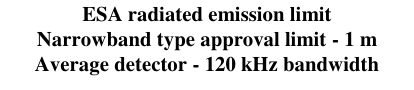
41充電モード車両用人工電源回路網を定義する。Appendix 8▼
English (Original)
Appendix 8 Artificial networks (AN), High Voltage Artificial Networks (HV-AN), Direct Current charging Artificial Networks (DC-charging-AN), Artificial Mains Networks (AMN) and Asymmetric Artificial Networks (AAN) This appendix defines the artificial networks for vehicle in charging mode: - Artificial networks (AN): used for low voltage power supplies; - High Voltage Artificial networks (HV-AN) : used for DC power supplies; - Direct Current charging Artificial Networks (DC-charging-AN): used for DC power supplies; - Artificial Mains Networks (AMN) : used for AC power mains; - Asymmetric artificial network (AAN): used for signal/control port lines and/or wired network port lines.
Artificial networks (AN) For an ESA powered by LV, a 5 µH / 50 Ω AN as defined in Figure 1 shall be used. The AN(s) shall be mounted directly on the ground plane. The grounding connection of the AN(s) shall be bonded to the ground plane. Measurement ports of AN(s) shall be terminated with a 50 load. The AN impedance ZPB (tolerance 20 %) in the measurement frequency range of 0,1 MHz to 100 MHz is shown in Figure 2. It is measured between the terminals P and B (of Figure 1) with a 50 load on the measurement port with terminals A and B (of Figure short circuited. Figure 1 Example of 5 H AN schematic P A C1 L1 C2 MEP R1 B B Legend L1: 5 µH A: Port to power supply C1: 0,1 µF P: Port to Vehicle or ESA C2: 1 µF (default value) B: Ground R1: 1 kΩ MEP: Measuring Port
Voltage Artificial networks (HV-AN)
owered by HV, a 5 µH / 50 Ω HV-AN as defined in Figure 3
Voltage Artificial networks (HV-AN)
owered by HV, a 5 µH / 50 Ω HV-AN as defined in Figure 3
附属書 3
2高電圧ESAには5µH/50ΩのHV-ANを使用する。High Voltage Artificial networks (HV-AN)▼
English (Original)
High Voltage Artificial networks (HV-AN) For an ESA powered by HV, a 5 µH / 50 Ω HV-AN as defined in Figure 3 shall be used. The HV-AN(s) shall be mounted directly on the ground plane. The grounding connection of the HV-AN(s) shall be bonded to the ground plane. Measurement ports of HV-AN(s) shall be terminated with a 50 load. The HV-AN impedance ZPB (tolerance 20 %) in the measurement frequency range of 0,1 MHz to 100 MHz is shown in Figure 2. It is measured between the “Vehicle/ESA HV” and “GND” terminals (of Figure 3) with a 50 load on the measurement port and with the “HV supply” and “GND” terminals short circuited Figure 3 Example of 5 H HV AN schematic Vehicle / ESA HV HV Supply C1 L1 C2 R2 MEP R1 GND Legend L1: 5 µH HV supply: High Voltage power supply C1: 0,1 µF Vehicle / ESA HV: High Voltage of Vehicle or ESA C2: 0,1 µF (default value) MEP: Measuring Port R1: 1 kΩ GND: Ground R2:
附属書 4車両広帯域電磁放射測定Method of measurement of radiated broadband electromagnetic emissions from vehicles
1DC-charging-ANのインピーダンス特性を図示する。MΩ (discharging C2 to > 50 Vdc within 60 s)▼
English (Original)
MΩ (discharging C2 to > 50 Vdc within 60 s) If unshielded HV ANs are used in a single shielded box, then there shall be an inner shield between the HV ANs as described in Figure 4.
Figure 4 Example of 5 H HV AN combination in a single shielded box Vehicle / ESA HV+ HV+ Supply C1 L1 C2 R2 MEP R1 GND Vehicle / ESA HV - HV- Supply C1 L1 C2 R2 MEP R1 GND Legend L1: 5 µH HV supply: High Voltage power supply (positive and negative) C1: 0,1 µF Vehicle / ESA HV: High Voltage of Vehicle or ESA (positive and negative) C2: 0,1 µF (default value) MEP: Measuring Port R1: 1 kΩ GND: Ground R2:
附属書 5車両からの放射狭帯域電磁放射測定法Method of measurement of radiated narrowband electromagnetic emissions from vehicles
1DC-charging-ANのインピーダンス特性を図示する。MΩ (discharging C2 to > 50 Vdc within 60 s)▼
English (Original)
MΩ (discharging C2 to > 50 Vdc within 60 s) An optional impedance matching network may be used to simulate common mode / differential mode impedance seen by the ESA plugged on HV power supply (see Figure 5). Figure 5 – Impedance matching network attached between HV ANs and ESA
3充電モード車両には5µH/50ΩのDC-charging-ANを使用する。Direct Current charging Artificial Networks (DC-charging-AN)▼
English (Original)
Direct Current charging Artificial Networks (DC-charging-AN) For a vehicle in charging mode connected to a DC power supply, a 5 µH / 50 Ω DC- charging-AN as defined in Figure 6 shall be used. Measurement ports of DC-charging-AN(s) shall be terminated with 50 loads. The DC-charging-AN impedance ZPB (tolerance 20 %) in the measurement frequency range of 0,1 MHz to 100 MHz is shown in Figure 7. It is measured between the terminals “Vehicle/ESA HV” and “GND” (of Figure 6) with a 50 load on the measurement port and with terminals “HV Supply” and “GND” (of Figure 6) short circuited. Figure 6 Example of 5 H DC-charging-AN schematic Vehicle / ESA HV HV Supply C1 L1 C2 R2 MEP R1 GND Legend L1: 5 µH HV supply: High Voltage power supply C1: 0,1 µF Vehicle / ESA HV: High Voltage of Vehicle or ESA C2: 1 µF (default value, if another value is used, it has to be justified) MEP: Measuring Port R1: 1 kΩ GND: Ground R2:
Artificial Mains networks (AMN) For a vehicle in charging mode connected to an AC power mains, a 50 µH / 50 Ω-AMN as defined in CISPR 16-1-2 clause 4.4 shall be used. Measurement ports of AMN(s) shall be terminated with 50 loads. 45
Asymmetric artificial network (AAN) Currently, different technologies for signal/control port lines and/or wired network port lines are used for the communication between charging station and vehicle. Therefore, a distinction between some specific signal/control port lines and/or wired network port lines (for example, control pilot line, CAN lines) is necessary. Measurement ports of AAN(s) shall be terminated with 50 loads. AANs that are defined in 5.1., 5.2., 5.3. and 5.4. are used for unshielded signal/control port lines and/or wired network port lines. If shielded signal/control port lines are used, then shielded AANs defined in CISPR 32:2015 Annex G, Figures G.10 and G.11 should be used.
5.1対称線信号/制御ポートにはAANを使用し、LCL値を試験報告書に記載する。Signal/Control port with symmetric lines▼
English (Original)
Signal/Control port with symmetric lines An asymmetric artificial network (AAN) to be connected between the vehicle and the charging station or any associated equipment (AE) used to simulate communication is defined in CISPR 16-1-2 Annex E clause E.2 (T network circuit) (see example in Figure 8). The AAN has a common mode impedance of 150 . The impedance Zcat adjusts the symmetry of the cabling and attached periphery typically expressed as longitudinal conversion loss (LCL). The value of LCL should be predetermined by measurements or be defined by the manufacturer of the charging station/charging harness. The selected value for LCL and its origin shall be stated in the test report. CAN communication is an example of symmetric lines used for vehicle DC charging mode. If an original charging station can be used for the test, an AAN is not required for CAN communication. If the CAN communication is emulated and if the presence of the AAN prevents proper CAN communication, then no AAN should be used. Figure 8 Example of an AAN for Signal/Control port with symmetric lines (e.g. CAN) 1 2 3
5.2電力線PLC通信では、必要に応じてAANを追加し、減衰器で放射を最小化する。Wired network port with PLC on power lines▼
English (Original)
Wired network port with PLC on power lines If an original charging station can be used for the test, an AAN and/or AMN/DC- charging-AN might not be required for PLC communication. If the presence of the AMN/DC-charging-AN prevents proper PLC communication with the original charging station or if the PLC communication needs to be simulated by means of a piece of associated equipment (e.g. a PLC modem) instead of the original charging station, it is necessary to add an AAN between the AE (e.g. the PLC modem) and the AMN/DC-charging-AN output (vehicle side), as shown in Figure 9. The circuit in Figure 9 provides a common mode termination by the AMN / DC-charging- AN HV-AN. In order to minimize emission from the PLC modem of the vehicle, an attenuator is located between the powerline and the PLC modem at the AE side in the circuit for emission tests. This attenuator consists of two resistors in combination with the input/output impedance of the PLC modem. The value of the resistors depends on the design impedance of the PLC modems and the allowed attenuation for the PLC system. Figure 9 Example of AAN with Signal/Control port with PLC on AC or DC power lines 2 3 4
5.3制御パイロット上のPLC通信には特殊なAANを使用し、通信の誤動作を避ける。Signal/Control port with PLC (technology) on control pilot▼
English (Original)
Signal/Control port with PLC (technology) on control pilot Some communication systems use the control pilot line (versus PE) with a superimposed (high frequency) communication. Typically the technology developed for powerline communication (PLC) is used for that purpose. On one hand the communication lines are operated unsymmetrically, on the other hand two different communication systems operate on the same line. Therefore, a special AAN must be used as defined in Figure 10. It provides a common mode impedance of 150 20 (150 kHz to 30 MHz) on the control pilot line (assuming a design impedance of the modem of 100 ). Both types of communications (control pilot, PLC) are separated by the network. Therefore, typically a communication simulation is used in combination with this network. The attenuator built by the resistors and the design impedance of the PLC modem makes sure that the signal on the charging harness is dominated by the vehicle’s communication signals rather than the AE PLC modem. The values of inductance and capacitance in the networks added for PLC on control pilot shown in Figure 10 shall not induce any malfunction of communication between vehicle and AE or charging station. It may therefore be necessary to adapt these values to ensure proper communication. If PLC communication is emulated and if the presence of the AAN prevents proper PLC communication then no AAN should be used. Figure 10 Example of AAN circuit for Signal/Control port with PLC on control pilot 1 2 3
5.4制御パイロット通信には特殊なAANを使用し、通信の誤動作を避ける。Signal/Control port with control pilot▼
English (Original)
Signal/Control port with control pilot Some communication systems use the control pilot line (versus PE). On one hand the communication lines are operated unsymmetrically, on the other hand two different communication systems operate on the same line. Therefore, a special AAN must be used as defined in Figure 11. It provides a common mode impedance of 150 20 (150 kHz to 30 MHz) on the control pilot line (between A and B/D). Therefore, typically a communication simulation is used in combination with this network. The values of inductance and capacitance in the networks on control pilot shown in Figure 11 shall not induce any malfunction of communication between vehicle and charging station. It may therefore be necessary to adapt these values to ensure proper communication. If Control pilot communication is emulated and if the presence of the AAN prevents proper Control pilot communication then no AAN should be used. Figure 11 Example of AAN circuit for pilot line 1 2 3
承認マークの例（モデルA）Examples of approval marks Model A (See paragraph 5.2. of this Regulation)▼
English (Original)
Examples of approval marks Model A (See paragraph 5.2. of this Regulation)
日本語訳
承認マークの例 モデルA（本規則の5.2項を参照）
参照段落
Figure 21
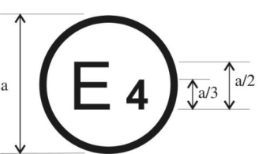
Figure 22
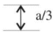
Figure 23
Figure 24
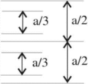
12番目の数字は単なる例示である。The second number is given merely as an example.▼
English (Original)
The second number is given merely as an example. 50
日本語訳
2番目の数字は単なる例として与えられている。
附属書 2
電磁両立性型式承認の情報は3部提出し、電子制御の性能情報を含める必要がある。A Information document for type approval of a vehicle with respect to electromag▼
English (Original)
A Information document for type approval of a vehicle with respect to electromagnetic compatibility The following information shall be supplied in triplicate and shall include a list of contents. Any drawings shall be supplied in appropriate scale and in sufficient detail. If submission is paper based, documents shall be on size A4 or in a folder of A4 format. Electronic submissions may be of any standard size. Photographs, if any, shall show sufficient detail. If the systems, components or separate technical units have electronic controls, information concerning their performance shall be supplied. General
日本語訳
A 電磁両立性に関する車両の型式承認のための情報書類
以下の情報は3部提出しなければならず、内容一覧を含まなければならない。図面は適切な縮尺で十分な詳細さで提供されなければならない。提出が紙ベースである場合、書類はA4サイズまたはA4判のフォルダに収めなければならない。電子提出は任意の標準サイズでよい。写真がある場合、十分な詳細さを示さなければならない。システム、コンポーネントまたは独立した技術ユニットが電子制御を有する場合、それらの性能に関する情報が提供されなければならない。一般事項
4製造者および認定代理人の名称・住所を記載すること。Name and address of manufacturer: ..............................................................................▼
English (Original)
Name and address of manufacturer: .............................................................................. Name and address of authorised representative, if any: ...............................................
Operating voltage: ...................................................................................................... ... Gas fuelled engines (in the case of systems laid-out in a different manner, supply equivalent information)
46アンチロックシステムの作動説明と回路図を記載すること。For vehicles with anti-lock systems, description of system operation (including any▼
English (Original)
For vehicles with anti-lock systems, description of system operation (including any electronic parts), electric block diagram, hydraulic or pneumatic circuit plan: ...........
49前面ガラスとその他の窓について記載する。Windscreen and other windows:▼
English (Original)
Windscreen and other windows:
日本語訳
前面ガラス及びその他の窓:
50窓昇降機構の電気/電子部品を簡潔に説明する。A brief description of the electrical/electronic components (if any)▼
English (Original)
A brief description of the electrical/electronic components (if any) of the window lifting mechanism: ................................................................................
53シートベルトや拘束装置について記載する。Safety belts and/or other restraint systems:▼
English (Original)
Safety belts and/or other restraint systems:
日本語訳
シートベルト及び/又はその他の拘束装置:
55無線妨害の抑制について記載する。Suppression of radio interference:▼
English (Original)
Suppression of radio interference:
日本語訳
無線妨害の抑制:
56機関室と乗員室の形状・材料を図面等で説明する。Description and drawings/photographs of the shapes and constituent materials of the▼
English (Original)
Description and drawings/photographs of the shapes and constituent materials of the part of the body forming the engine compartment and the part of the passenger compartment nearest to it: ............................................................................................
57機関室内の金属部品の位置を図面または写真で示す。Drawings or photographs of the position of the metal components housed in the▼
English (Original)
Drawings or photographs of the position of the metal components housed in the engine compartment (e.g. heating appliances, spare wheel, air filter, steering mechanism, etc.): .......................................................................................................... ......................................................................................................................................
59直流抵抗の公称値と抵抗点火ケーブルの抵抗値を記載する。Particulars of the nominal value of the direct current resistance and, in the case of▼
English (Original)
Particulars of the nominal value of the direct current resistance and, in the case of resistive ignition cables, of their nominal resistance per metre: .................................. Lighting and light signalling devices
63RF送信機の設置と使用に関する表を記載する。Table of installation and use of RF transmitters in the vehicle(s), if applicable▼
English (Original)
Table of installation and use of RF transmitters in the vehicle(s), if applicable (see paragraph 3.1.8. of this Regulation): ....................................................................
64.
Vehicle equipped with 24 GHz short-range radar equipment: yes/no/optional.1
The applicant for type approval shall also supply, where appropriate:
6424GHzレーダー装備車両の有無と関連部品リスト、回路図を提出する。Vehicle equipped with 24 GHz short-range radar equipment: yes/no/optional.1▼
English (Original)
Vehicle equipped with 24 GHz short-range radar equipment: yes/no/optional.1 The applicant for type approval shall also supply, where appropriate: Appendix 1 A list with make(s) and type(s) of all electrical and/or electronic components concerned by this Regulation (see paragraphs 2.9. and 2.10. of this Regulation) and not previously listed. Appendix 2: Schematics or drawing of the general arrangement of electrical and/or electronic components (concerned by this Regulation) and the general wiring harness arrangement.
53代表車両の車体形状、ハンドル位置、ホイールベースを記載する。Appendix 3: Description of vehicle chosen to represent the type:▼
English (Original)
Appendix 3: Description of vehicle chosen to represent the type: Body style: ....................................................................................................... Left or right hand drive: .................................................................................. Wheelbase: ...................................................................................................... Appendix 4: Relevant test report(s) supplied by the manufacturer from a test laboratory accredited to ISO 17025 and recognized by the Type Approval Authority for the purpose of drawing up the type approval certificate.
65充電器の種類（車載、外部、なし）を記載する。Charger: on board/external/without:1▼
English (Original)
Charger: on board/external/without:1
日本語訳
充電器: 車載/外部/なし: 1
66充電電流は直流または交流（相数／周波数）である。Charging current: direct current / alternating current (number of phases/frequency):1▼
English (Original)
Charging current: direct current / alternating current (number of phases/frequency):1 ....................................................................................................................................
70最小R sce値を7.3項に従い記載する。Minimum Rsce value (see paragraph 7.3.)▼
English (Original)
Minimum Rsce value (see paragraph 7.3.)
日本語訳
最小R sce値（7.3項を参照のこと）
71車両付属の充電ハーネスの有無を記載する。Charging harness delivered with the vehicle: yes/no1▼
English (Original)
Charging harness delivered with the vehicle: yes/no1
日本語訳
車両に付属する充電ハーネス：あり/なし 1
72付属充電ハーネスの長さと断面積を記載する。If charging harness delivered with the vehicle:▼
English (Original)
If charging harness delivered with the vehicle: Length (m) .................................................................................................................. Cross sectional area (mm²) ..........................................................................................
Annex 2B Information document for type approval of an electric/electronic sub-assembly with respect to electromagnetic compatibility The following information, if applicable, shall be supplied in triplicate and shall include a list of contents. Any drawings shall be supplied in appropriate scale and in sufficient detail. If submission is paper based, documents shall be on size A4 or in a folder of A4 format. Electronic submissions may be of any standard size. Photographs, if any, shall show sufficient detail. If the systems, components or separate technical units have electronic controls, information concerning their performance shall be supplied.
4製造業者と認定代理人の名称・住所を記載する。Name and address of manufacturer: .............................................................................▼
English (Original)
Name and address of manufacturer: ............................................................................. Name and address of authorized representative, if any: ................................................ ......................................................................................................................................
5構成部品等の型式認証マークの貼付位置・方法を記載する。In the case of components and separate technical units, location and method of▼
English (Original)
In the case of components and separate technical units, location and method of affixing of the approval mark: .....................................................................................
9電気システムの定格電圧、接地方式、試験報告書等を記載する。Electrical system rated voltage: …… V, positive/negative2 ground. ............................▼
English (Original)
Electrical system rated voltage: …… V, positive/negative2 ground. ............................ Appendix 1: Description of the ESA chosen to represent the type (electronic block diagram and list of main component constituting the ESA (e.g. make and type of microprocessor, crystal, etc.). Appendix 2: Relevant test report(s) supplied by the manufacturer from a test laboratory accredited to ISO 17025 and recognized by the Type Approval Authority for the purpose of drawing up the type approval certificate. Only applicable for charging systems: ...............................................................
1型式識別に関連しない文字は「?」で表示する。If the means of identification of type contains characters not relevant to describe the component or▼
English (Original)
If the means of identification of type contains characters not relevant to describe the component or separate technical unit types covered by this information document, such characters shall be represented in the documentation by the symbol "?" (e.g. ABC??123??).
6認可マークの貼付位置と方法を記載する。In the case of components and separate technical units, location and method of▼
English (Original)
In the case of components and separate technical units, location and method of affixing of the approval mark:.......................................................................................
9試験実施責任技術機関を記載する。Technical Service responsible for carrying out the tests: ..............................................▼
English (Original)
Technical Service responsible for carrying out the tests: .............................................. ......................................................................................................................................
16情報パッケージの索引を添付する。The index to the information package lodged with the Approval Authority,▼
English (Original)
The index to the information package lodged with the Approval Authority, which may be obtained on request is attached: .............................................................
17延長理由を記載する。Reasons for extension: ..................................................................................................▼
English (Original)
Reasons for extension: .................................................................................................. Appendix to type approval communication form No......... concerning the type approval of a vehicle under Regulation No. 10
4試験車両に搭載された電子システムを列挙する。List of electronic systems installed in the tested vehicle(s) not limited to the items▼
English (Original)
List of electronic systems installed in the tested vehicle(s) not limited to the items in the information document: ........................................................................................
4.124 GHzレーダー装備の有無を記載する。Vehicle equipped with 24 GHz short-range radar equipment: yes/no/optional2▼
English (Original)
Vehicle equipped with 24 GHz short-range radar equipment: yes/no/optional2
日本語訳
24 GHz短距離レーダー装置を装備した車両: はい/いいえ/オプション 2
5試験実施の認定試験所を記載する。Laboratory accredited to ISO 17025 and recognized by the Approval Authority▼
English (Original)
Laboratory accredited to ISO 17025 and recognized by the Approval Authority responsible for carrying out the tests: ...........................................................................
Annex 3B Communication (Maximum format: A4 (210 x 297 mm)) issued by: Name of administration: ...................................... ...................................... ......................................
日本語訳
附属書3B 連絡書（最大様式: A4（210 x 297 mm））発行元: 行政機関の名称: ...................................... ...................................... ......................................
Figure 26
2型式と商業的説明を記載する。Type and general commercial description(s): ..................................................................▼
English (Original)
Type and general commercial description(s): ..................................................................
6構成部品等の認可マークの貼付位置と方法を記載する。In the case of components and separate technical units, location and method of affixing▼
English (Original)
In the case of components and separate technical units, location and method of affixing of the approval mark: ........................................................................................................
9試験実施責任技術機関を記載する。Technical Service responsible for carrying out the tests: ..................................................▼
English (Original)
Technical Service responsible for carrying out the tests: .................................................. ..........................................................................................................................................
16情報パッケージの索引を添付する。The index to the information package lodged with the Approval Authority, which may▼
English (Original)
The index to the information package lodged with the Approval Authority, which may be obtained on request, is attached: . .................................................................................
17延長理由を記載し、付録を参照する。Reasons for extension: ..................................................................................................▼
English (Original)
Reasons for extension: .................................................................................................. .... Appendix to type approval communication form No... concerning the type approval of an electrical/electronic sub-assembly under
1.4イミュニティ試験方法と周波数範囲を特定する。The specific test method(s) used and the frequency ranges covered to determine▼
English (Original)
The specific test method(s) used and the frequency ranges covered to determine immunity were: (Please specify precise method used from Annex 9): .............................
1.5試験実施試験所の情報を記載する。Laboratory accredited to ISO 17025 and recognized by the Approval Authority▼
English (Original)
Laboratory accredited to ISO 17025 and recognized by the Approval Authority responsible for carrying out the tests: ...............................................................................
附属書 4車両広帯域電磁放射測定Method of measurement of radiated broadband electromagnetic emissions from vehicles
車両からの放射広帯域電磁放射の測定方法。Method of measurement of radiated broadband electromagnetic emissions from vehic▼
English (Original)
Method of measurement of radiated broadband electromagnetic emissions from vehicles
日本語訳
車両からの放射広帯域電磁放射の測定方法
1一般要件を規定する。General▼
English (Original)
General
日本語訳
一般
1.1試験方法は車両に適用され、充電モードの有無を考慮する。The test method described in this annex shall only be applied to vehicles. This▼
English (Original)
The test method described in this annex shall only be applied to vehicles. This method concerns both configurations of the vehicle: (a) Other than "REESS charging mode coupled to the power grid"; (b) "REESS charging mode coupled to the power grid".
Test method This test is intended to measure the broadband emissions generated by electrical or electronic systems fitted to the vehicle (e.g. ignition system or electric motors). If not otherwise stated in this annex the test shall be performed according to CISPR 12.
2.1非充電モード車両の状態要件。Vehicle in configuration other than "REESS charging mode coupled to the▼
English (Original)
Vehicle in configuration other than "REESS charging mode coupled to the power grid".
日本語訳
「REESS充電モードが電力網に接続されていない」構成の車両。
2.1.1エンジンはCISPR 12に従い作動させ、必要に応じ伝動系を切り離す。Engine▼
English (Original)
Engine The engine shall be in operation according to CISPR 12. For vehicle with an electric propulsion motor or hybrid propulsion system, if this is not appropriate (e.g. in case of busses, trucks, two- and three wheel vehicles), transmission shafts, belts or chains may be disconnected to achieve the same operation condition for the propulsion.
Other vehicle systems All equipment capable of generating broadband emissions which can be switched on permanently by the driver or passenger should be in operation in maximum load, e.g. wiper motors or fans. The horn and electric window motors are excluded because they are not used continuously.
2.2充電モード車両はSOCを20〜80%に維持し、電流は定格の80%以上とする。Vehicle in configuration "REESS charging mode coupled to the power grid".▼
English (Original)
Vehicle in configuration "REESS charging mode coupled to the power grid". The state of charge (SOC) of the traction battery shall be kept between 20 per cent and 80 per cent of the maximum SOC during the whole frequency range measurement (this may lead to splitting the measurement into different sub- bands with the need to discharge the vehicle's traction battery before starting the next sub-bands). If the current consumption can be adjusted, then the current shall be set to at least 80 per cent of its nominal value for AC charging. If the current consumption can be adjusted, then the current shall be set to at least 80 per cent of its nominal value for DC charging unless another value is agreed with the type approval authorities.
61複数バッテリーは平均SOCを考慮し、車両は固定し充電モードとする。In case of multiple batteries the average state of charge must be considered.▼
English (Original)
In case of multiple batteries the average state of charge must be considered. The vehicle shall be immobilized, the engine(s) (ICE and / or electrical engine) shall be OFF and in charging mode. All other equipment which can be switched ON by the driver or passengers shall be OFF. The test set-up for the connection of the vehicle in configuration "REESS charging mode coupled to the power grid" is shown in Figures 3a to 3h (depending of AC or DC power charging mode, location of charging plug and charging with or without communication) of Appendix 1 to this annex.
2.3通信なしの交流充電モード1または2の車両。Vehicle in charging mode 1 or mode 2 (AC power charging without▼
English (Original)
Vehicle in charging mode 1 or mode 2 (AC power charging without communication).
日本語訳
充電モード1またはモード2の車両（通信なしの交流電力充電）。
2.3.1電源主幹ソケットはグランドプレーン等に配置し、ハーネスは短くする。Charging station / Power mains▼
English (Original)
Charging station / Power mains The power mains socket can be placed anywhere in the test site with the following conditions: - The socket(s) shall be placed on the ground plane (ALSE) or floor (OTS); - The length of the harness between the power mains socket and the AMN(s) shall be kept as short as possible, but not necessarily aligned with the charging harness; - The harness shall be placed as close as possible to the ground plane (ALSE) or floor (OTS).
Artificial network Power mains shall be applied to the vehicle through 50 µH/50 artificial networks (AMN(s)) (see appendix 8 clause 4). The AMN(s) shall be mounted directly on the ground plane (ALSE) or floor (OTS). The case of the AMN(s) shall be bonded to the ground plane (ALSE) or connected to the protective earth (OTS, e.g. an earth rod). The measuring port of each AMN shall be terminated with a 50 load.
Power charging harness The power charging harness shall be placed in a straight line between the AMN(s) and the vehicle charging plug and shall be routed perpendicularly to the vehicle longitudinal axis (see Figure 3d and Figure 3c). The projected harness length from the side of the AMN(s) to the side of the vehicle shall be 0,8 (+0,2 / -0) m as shown in Figure 3d and Figure 3e. For a longer harness the extraneous length shall be “Z-folded” in a less than 0,5 m width approximately around the middle of the AMN to vehicle distance. If it is impractical to do so because of harness bulk or stiffness, or because the testing is being done at a user’s installation, the disposition of the excess harness shall be precisely noted in the test report. The charging harness at the vehicle side shall hang vertically at a distance of 100 (+200 / -0) mm from the vehicle body. The whole harness shall be placed on a non-conductive, low relative permittivity (dielectric-constant) material (r ≤ 1,4), at (100 25) mm above the ground plane (ALSE) or floor (OTS). 62
2.4通信付き交流または直流電力充電モードの車両。Vehicle in charging mode 3 (AC power charging with communication) or▼
English (Original)
Vehicle in charging mode 3 (AC power charging with communication) or mode 4 (DC power charging with communication).
日本語訳
充電モード3（通信付き交流電力充電）またはモード4（通信付き直流電力充電）の車両。
2.4.1充電ステーションは試験場内外に配置可能で、ハーネスは短く、余長はZ字折りとする。Charging station / Power mains▼
English (Original)
Charging station / Power mains The charging station may be placed either in the test site or outside the test site. If the local/private communication between the vehicle and the charging station can be simulated, the charging station may be replaced by a supply from the AC power mains network. In both cases power mains and communication or signal lines socket(s) shall be placed in the test site with the following conditions: - The socket(s) shall be placed on the ground plane (ALSE) or floor (OTS); - The length of the harness between the power mains / local/private communication socket and the AMN(s) / DC-charging-AN(s) / AAN(s) shall be kept as short as possible, but not necessarily aligned with the charging harness; - The harness between the power mains / local/private communication socket and the AMN(s) / DC-charging-AN(s) / AAN(s) shall be placed as close as possible of the ground plane (ALSE) or floor (OTS). If the charging station is placed inside the test site, then the harness between the charging station and the power mains / local/private communication socket shall satisfy the following conditions: - The harness at charging station side shall hang vertically down to the ground plane (ALSE) or floor (OTS); - The extraneous length shall be placed as close as possible to the ground plane (ALSE) or floor (OTS) and “Z-folded” if necessary. If it is impractical to do so because of cable bulk or stiffness, or because the testing is being done at a user installation, the disposition of the excess cable shall be precisely noted in the test report. The charging station should be placed outside of the 3 dB beamwidth of the receiving antenna. If this is not technically feasible, the charging station can be placed behind a panel of absorbers but not between the antenna and the vehicle.
Artificial network AC power mains shall be applied to the vehicle through 50 µH/50 AMN(s) (see Appendix 8, clause 4). DC power mains shall be applied to the vehicle through 5 µH/50 High Voltage Artificial Networks (DC-charging-AN(s)) (see Appendix 8, clause 3). The AMN(s) / DC-charging-AN(s) shall be mounted directly on the ground plane (ALSE) or floor (OTS). The cases of the AMN(s) / DC-charging-AN(s) shall be bonded to the ground plane (ALSE) or connected to the protective earth (OTS, e.g. an earth rod). The measuring port of each AMN / DC-charging-AN shall be terminated with a 50 load.
63ローカル/プライベート通信線は非対称擬似回路網を介し、筐体は接地、測定ポートは終端する。Local/private communication lines connected to signal/control ports and lines▼
English (Original)
Local/private communication lines connected to signal/control ports and lines connected to wired network ports shall be applied to the vehicle through AAN(s). The various AAN(s) to be used are defined in Appendix 8, clause 5: - Clause 5.1 for signal/control port with symmetric lines; - Clause 5.2 for wired network port with PLC on power lines; - Clause 5.3 for signal/control port with PLC (technology) on control pilot; and - Clause 5.4 for signal/control port with control pilot. The AAN(s) shall be mounted directly on the ground plane. The case of the AAN(s) shall be bonded to the ground plane (ALSE) or connected to the protective earth (OTS, e.g. an earth rod). The measuring port of each AAN shall be terminated with a 50 load. If a charging station is used, AAN(s) are not required for the signal/control ports and/or for the wired network ports. The local/private communication lines between the vehicle and the charging station shall be connected to the associated equipment on the charging station side to work as designed. If communication is emulated and if the presence of the AAN prevents proper communication then no AAN should be used
2.4.4充電ハーネスはAMNと車両ソケット間を直線配置し、車両軸に垂直に配線する。Power charging / local/private communication harness▼
English (Original)
Power charging / local/private communication harness The power charging local/private communication harness shall be laid out in a straight line between the AMN(s) / DC-charging-AN(s) / AAN(s) and the vehicle charging socket and shall be routed perpendicularly to the vehicle’s longitudinal axis (see Figure 3f and Figure 3g). The projected harness length from the side of the AMN(s) to the side of the vehicle shall be 0,8 (+0,2 / - m. For a longer harness the extraneous length shall be “Z-folded” in less than 0,5 m width. If it is impractical to do so because of harness bulk or stiffness, or because the testing is being done at a user installation, the disposition of the excess harness shall be precisely noted in the test report. The power charging local/private communication harness at vehicle side shall hang vertically at a distance of 100 (+200 / -0) mm from the vehicle body. The whole harness shall be placed on a non-conductive, low relative permittivity (dielectric-constant) material (r ≤ 1,4), at (100 25) mm above the ground plane (ALSE) or floor (OTS).
3.1カテゴリーL車両の試験面は、附属書追補の図に示す条件を満たす場所とすることができる。As an alternative to the requirements of CISPR 12 for vehicles of category L,▼
English (Original)
As an alternative to the requirements of CISPR 12 for vehicles of category L, the test surface may be any location that fulfils the conditions shown in the Figure of the appendix to this annex. In this case the measuring equipment shall lie outside the part shown in Figure 1 of Appendix 1 to this annex.
3.2電波吸収体付きシールドルームまたは屋外試験サイトを使用できる。Absorber lined shielded enclosures (ALSE) and outdoor test site (OTS) may▼
English (Original)
Absorber lined shielded enclosures (ALSE) and outdoor test site (OTS) may be used. An ALSE has the advantage of all all-weather testing, a controlled environment and improved repeatability because of the stable chamber electrical characteristics.
4.1限度値は30 MHzから1,000 MHzの周波数範囲に適用される。The limits apply throughout the frequency range 30 to 1,000 MHz for▼
English (Original)
The limits apply throughout the frequency range 30 to 1,000 MHz for measurements performed in an absorber lined shielded enclosure (ALSE) or an outdoor test site (OTS).
4.2測定は準尖頭値または尖頭値検出器で行い、尖頭値の場合は20 dBの補正が必要である。Measurements can be performed with either quasi-peak or peak detectors. The▼
English (Original)
Measurements can be performed with either quasi-peak or peak detectors. The limits given in paragraphs 6.2. and 7.2. of this Regulation are for quasi-peak detectors. If peak detectors are used a correction factor of 20 dB as defined in CISPR 12 shall be applied.
4.3測定はスペクトラムアナライザ等で実施し、パラメータは表1、2に定義する。The measurements shall be performed with a spectrum analyser or a scanning▼
English (Original)
The measurements shall be performed with a spectrum analyser or a scanning receiver. The parameters to be used are defined in Table 1 and Table 2. Table 1 Spectrum analyser parameters
Note: If a spectrum analyser is used for peak measurements, the video bandwidth shall be at least three
times the resolution bandwidth (RBW).
Table 2
Scanning receiver parameters
Table 2
a For purely broadband disturbances, the maximum frequency step size may be increased up to a value
not greater than the bandwidth value.
4.4.
Measurements
Measurements The Technical Service shall perform the test at the intervals specified in the CISPR 12 standard throughout the frequency range 30 to 1,000 MHz. Alternatively, if the manufacturer provides measurement data for the whole frequency band from a test laboratory accredited to the applicable parts of ISO 17025 and recognized by the Type Approval Authority, the Technical Service may divide the frequency range in 14 frequency bands 30–34, 34–45, 45–60, 60–80, 80–100, 100–130, 130–170, 170–225, 225–300, 300–400, 400–525, 525–700, 700–850 and 850–1,000 MHz and perform tests at the 14 frequencies giving the highest emission levels within each band to confirm that the vehicle meets the requirements of this annex. In the event that the limit is exceeded during the test, investigations shall be made to ensure that this is due to the vehicle and not to background radiation.
Readings The maximum of the readings relative to the limit (horizontal and vertical polarization and antenna location on the left and right-hand sides of the vehicle) in each of the 14 frequency bands shall be taken as the characteristic reading at the frequency at which the measurements were made. 65
Antenna position Measurements shall be made on the left and right sides of the vehicle. The horizontal distance is from the reference point of the antenna to the nearest part of the vehicle body. Multiple antenna positions may be required (both for 10 m and 3 m antenna distance) depending on the vehicle length. The same positions shall be used for both horizontal and vertical polarization measurements. The number of antenna positions and the position of the antenna with respect to the vehicle shall be documented in the test report. - If the length of the vehicle is smaller than the 3 dB beamwidth of the antenna, only one antenna position is necessary. The antenna shall be aligned with the middle of the total vehicle (see Figure 4); - If the length of the vehicle is greater than the 3 dB beamwidth of the antenna, multiple antenna positions are necessary in order to cover the total length of the vehicle (see Figure 5). The number of antenna positions shall allow to meet the following condition: L D N tan 2 (1) With: N: Number of antenna positions; D: Measurement distance (3 m or 10 m); 2β: 3 dB antenna beamwidth angle in the plane parallel to ground (i.e. the E- plane beamwidth angle when the antenna is used in horizontal polarization, and the H-plane beamwidth angle when the antenna is used in vertical polarization); L: Total vehicle length; Depending of the chosen values of N (number of antenna positions) different set-up shall be used: if N=1 (only one antenna position is necessary) and the antenna shall be aligned with the middle of the total vehicle length (see Figure 4). if N>1 (more than one antenna position is necessary) and multiple antenna positions are necessary in order to cover the total length of the vehicle (see Figure 5). The antenna positions shall be symmetric in regard to the vehicle perpendicular axis.
日本語訳
測定は車両の左側及び右側で実施しなければならない。水平距離は、アンテナの基準点から車両本体の最も近い部分までの距離である。車両の長さによっては、複数のアンテナ位置（10 m及び3 mのアンテナ距離の両方）が必要となる場合がある。水平及び垂直偏波測定の両方で同じ位置を使用しなければならない。アンテナ位置の数及び車両に対するアンテナの位置は、試験報告書に文書化しなければならない。- 車両の長さがアンテナの3 dBビーム幅よりも小さい場合、アンテナ位置は1つのみでよい。アンテナは車両全体の中心に合わせなければならない（図4参照）。- 車両の長さがアンテナの3 dBビーム幅よりも大きい場合、車両の全長をカバーするために複数のアンテナ位置が必要となる（図5参照）。アンテナ位置の数は、以下の条件を満たすことを可能にしなければならない。L D N tan 2 (1) ここで、N: アンテナ位置の数、D: 測定距離（3 m又は10 m）、2 β: 地面と平行な面における3 dBアンテナビーム幅角度（すなわち、アンテナが水平偏波で使用される場合のE面ビーム幅角度、及びアンテナが垂直偏波で使用される場合のH面ビーム幅角度）、L: 車両全長。選択されたNの値（アンテナ位置の数）に応じて、異なる設定を使用しなければならない。N=1の場合（アンテナ位置は1つのみ必要）、アンテナは車両全長の中央に合わせなければならない（図4参照）。N>1の場合（複数のアンテナ位置が必要）、車両の全長をカバーするために複数のアンテナ位置が必要となる（図5参照）。アンテナ位置は、車両の垂直軸に対して対称でなければならない。
Annex 4 – Appendix 1 Figure 1 Clear horizontal surface free of electromagnetic reflection delimitation of the surface defined by an ellipse Vehicle axis positioned on normal from antenna midpoint
Figure 2 Position of antenna in relation to the vehicle: Figure 2a Dipole antenna in position to measure the vertical radiation components
日本語訳
図2 車両に対するアンテナの位置: 図2a 垂直放射成分を測定するためのダイポールアンテナの位置
Figure 2
Figure 2b
Dipole antenna in position to measure the horizontal radiation components
Figure 2
68REESS充電モード車両の試験設定例を示す。Figure 3▼
English (Original)
Figure 3 Vehicle in configuration "REESS charging mode" coupled to the power grid: Example of test setup for vehicle with socket located on vehicle side (charging mode 1 or 2, AC powered, without communication). Figure 3a
Example of test setup for vehicle with socket located on vehicle side (charging mode 3 or mode 4, with communication) Figure 3e
日本語訳
車両側面にソケットが配置された車両の試験設定例（充電モード3またはモード4、通信あり）。図3e
Figure 3
Figure 3f
71前後部ソケット車両の試験設定例を示す。Example of test setup for vehicle with socket located front / rear of vehicle (charging mode 3▼
English (Original)
Example of test setup for vehicle with socket located front / rear of vehicle (charging mode 3 or mode 4, with communication) Figure 3g
日本語訳
車両の前後部にソケットが配置された車両の試験設定例（充電モード3またはモード4、通信あり）。図3g
Table 38
Table 39
72アンテナの配置位置を示す。Antenna position▼
English (Original)
Antenna position
日本語訳
アンテナ位置
Figure 32
附属書 5車両からの放射狭帯域電磁放射測定法Method of measurement of radiated narrowband electromagnetic emissions from vehicles
車両からの放射狭帯域電磁放射の測定方法を定める。Method of measurement of radiated narrowband electromagnetic emissions from vehi▼
English (Original)
Method of measurement of radiated narrowband electromagnetic emissions from vehicles
日本語訳
車両からの放射狭帯域電磁放射の測定方法
1一般要件を規定する。General▼
English (Original)
General
日本語訳
一般
1.1試験方法は車両にのみ適用される。The test method described in this annex shall only be applied to vehicles. This▼
English (Original)
The test method described in this annex shall only be applied to vehicles. This method concerns only the configuration of the vehicle other than "REESS charging mode coupled to the power grid".
Test method This test is intended to measure the narrowband electromagnetic emissions that may emanate from microprocessor-based systems or other narrowband source. If not otherwise stated in this annex the test shall be performed according to CISPR 12 or CISPR 25.
1.3FM帯域の放射レベルを測定する。As an initial step the levels of emissions in the Frequency Modulation (FM)▼
English (Original)
As an initial step the levels of emissions in the Frequency Modulation (FM) band (76 to 108 MHz) shall be measured at the vehicle broadcast radio antenna with an average detector. If the level specified in paragraph 6.3.2.4. of this Regulation is not exceeded, then the vehicle shall be deemed to comply with the requirements of this annex in respect of that frequency band and the full test shall not be carried out.
2.1イグニッションオン、エンジン停止。The ignition switch shall be switched on. The engine shall not be operating.▼
English (Original)
The ignition switch shall be switched on. The engine shall not be operating.
日本語訳
イグニッションスイッチはオンにしなければならない。エンジンは作動させてはならない。
2.2電子システムは通常作動モード。The vehicle's electronic systems shall all be in normal operating mode with the▼
English (Original)
The vehicle's electronic systems shall all be in normal operating mode with the vehicle stationary.
日本語訳
車両の電子システムはすべて、車両が停止した状態で通常の作動モードになければならない。
2.3常時オン機器は通常作動状態であるべき。All equipment which can be switched on permanently by the driver or▼
English (Original)
All equipment which can be switched on permanently by the driver or passenger with internal oscillators > 9 kHz or repetitive signals should be in normal operation.
3.1電波吸収体付きシールドルームまたは屋外試験サイトを使用できる。Absorber lined shielded enclosures (ALSE) and outdoor test site (OTS) may▼
English (Original)
Absorber lined shielded enclosures (ALSE) and outdoor test site (OTS) may be used. An ALSE has the advantage of all all-weather testing, a controlled environment and improved repeatability because of the stable chamber electrical characteristics.
4.1限度値は30 MHzから1,000 MHzの周波数範囲に適用される。The limits apply throughout the frequency range 30 to 1,000 MHz for▼
English (Original)
The limits apply throughout the frequency range 30 to 1,000 MHz for measurements performed in an absorber lined shielded enclosure (ALSE) or an outdoor test site (OTS).
Note: If a spectrum analyser is used for peak measurements, the video bandwidth shall be at le
times the resolution bandwidth (RBW).
Table 2
Scanning receiver parameters
Table 2
4.4.
Measurements
The Technical Service shall perform the test at the intervals specified in
CISPR 12 standard throughout the frequency range 30 to 1,000 MHz.
4.4技術サービスはCISPR 12に従い試験を実施しなければならない。Measurements▼
English (Original)
Measurements The Technical Service shall perform the test at the intervals specified in the CISPR 12 standard throughout the frequency range 30 to 1,000 MHz. Alternatively, if the manufacturer provides measurement data for the whole frequency band from a test laboratory accredited to the applicable parts of ISO 17025 and recognized by the Type Approval Authority, the Technical Service may divide the frequency range in 14 frequency bands 30–34, 34–45, 45–60, 60–80, 80–100, 100–130, 130–170, 170–225, 225–300, 300–400, 400–525, 525–700, 700–850 and 850–1,000 MHz and perform tests at the 14 frequencies giving the highest emission levels within each band to confirm that the vehicle meets the requirements of this Annex. In the event that the limit is exceeded during the test, investigations shall be made to ensure that this is due to the vehicle and not to background radiation including broadband radiation from any ESA.
Readings The maximum of the readings relative to the limit (horizontal and vertical polarization and antenna location on the left and right-hand sides of the vehicle) in each of the 14 frequency bands shall be taken as the characteristic reading at the frequency at which the measurements were made.
Antenna position Measurements shall be made on the left and right sides of the vehicle. The horizontal distance is from the reference point of the antenna to the nearest part of the vehicle body. Multiple antenna positions may be required (both for 10 m and 3 m antenna distance) depending on the vehicle length. The same positions shall be used for both horizontal and vertical polarization measurements. The number of antenna positions and the position of the antenna with respect to the vehicle shall be documented in the test report. - if the length of the vehicle is smaller than the 3 dB beamwidth of the antenna, only one antenna position is necessary. The antenna shall be aligned with the middle of the total vehicle (see Figure 1) 75 - If the length of the vehicle is greater than the 3 dB beamwidth of the antenna, multiple antenna positions are necessary in order to cover the total length of the vehicle (see Figure 2). The number of antenna positions shall allow to meet the following condition : L D N tan 2 (1) With: N: number of antenna positions. D: measurement distance (3 m or 10 m). 2β: 3 dB antenna beamwidth angle in the plane parallel to ground (i.e. the E- plane beamwidth angle when the antenna is used in horizontal polarization, and the H-plane beamwidth angle when the antenna is used in vertical polarization). L: total vehicle length. Depending of the chosen values of N (number of antenna positions) different set-up shall be used: if N=1 (only one antenna position is necessary) and the antenna shall be aligned with the middle of the total vehicle length (see Figure 1). if N>1 (more than one antenna position is necessary) and multiple antenna positions are necessary in order to cover the total length of the vehicle (see Figure 2). The antenna positions shall be symmetric in regard to the vehicle perpendicular axis.
附属書 6車両電磁放射イミュニティ試験Method of testing for immunity of vehicles to electromagnetic radiation
電磁放射に対する車両のイミュニティ試験方法を定める。Method of testing for immunity of vehicles to electromagnetic radiation▼
English (Original)
Method of testing for immunity of vehicles to electromagnetic radiation
日本語訳
電磁放射に対する車両のイミュニティ試験方法
1一般要件を規定する。General▼
English (Original)
General
日本語訳
一般
1.1本試験方法は車両にのみ適用され、2つの充電モード構成を対象とする。The test method described in this annex shall only be applied to vehicles. This▼
English (Original)
The test method described in this annex shall only be applied to vehicles. This method concerns both configurations of vehicle: (a) Other than "REESS charging mode coupled to the power grid"; (b) "REESS charging mode coupled to the power grid".
Test method This test is intended to demonstrate the immunity of the vehicle electronic systems. The vehicle shall be subject to electromagnetic fields as described in this annex. The vehicle shall be monitored during the tests. If not otherwise stated in this annex the test shall be performed according to ISO 11451-2.
Alternative test methods The test may be alternatively performed in an outdoor test site for all vehicles. The test facility shall comply with (national) legal requirements regarding the emission of electromagnetic fields. If a vehicle is longer than 12 m and/or wider than 2.60 m and/or higher than 4.00 m, BCI (bulk current injection) method according to ISO 11451-4 shall be used in the frequency range 20 to 2,000 MHz with levels defined in paragraph 6.8.2.1. of this Regulation.
2.1「電力網に接続されたREESS充電モード」以外の車両構成。Vehicle in configuration other than "REESS charging mode coupled to the▼
English (Original)
Vehicle in configuration other than "REESS charging mode coupled to the power grid.
日本語訳
「電力網に接続されたREESS充電モード」以外の構成における車両。
2.1.1車両は必要な試験装置を除き空車状態とする。The vehicle shall be in an unladen condition except for necessary test▼
English (Original)
The vehicle shall be in an unladen condition except for necessary test equipment.
日本語訳
車両は、必要な試験装置を除き、空車状態になければならない。
2.1.1.1駆動輪は通常50km/hで回転させる。The engine shall normally turn the driving wheels at a steady speed of 50 km/h▼
English (Original)
The engine shall normally turn the driving wheels at a steady speed of 50 km/h if there is no technical reason due to the vehicle to define a different condition. For vehicles of categories L1 and L2 the steady speed shall normally be turned at 25 km/h. The vehicle shall be on an appropriately loaded dynamometer or alternatively supported on insulated axle stands with minimum ground clearance if no dynamometer is available. Where appropriate, transmission shafts, belts or chains may be disconnected (e.g. trucks, two- and three-wheel vehicles).
Basic vehicle conditions The paragraph defines minimum test conditions (as far as applicable) and failure criteria for vehicle immunity tests. Other vehicle systems, which can affect immunity related functions, shall be tested in a way to be agreed between manufacturer and Technical Service. 78
2.1.1.3.
All equipment which can be switched on permanently by the driver or
passenger should be in normal operation.
2.1.1.4.
All other systems which affect the driver's control of the vehicle sh
2.1.1.3.
All equipment which can be switched on permanently by the driver or
passenger should be in normal operation.
2.1.1.4.
All other systems which affect the driver's control of the vehicle sh
2.1.1.3常時オン可能な装置は通常動作状態にあるべきである。All equipment which can be switched on permanently by the driver or▼
English (Original)
All equipment which can be switched on permanently by the driver or passenger should be in normal operation.
日本語訳
運転者または乗員が常時オンにできるすべての装置は、通常動作状態にあるべきである。
2.1.1.4運転制御に影響するシステムは通常動作時と同様にオンとする。All other systems which affect the driver's control of the vehicle shall be (on)▼
English (Original)
All other systems which affect the driver's control of the vehicle shall be (on) as in normal operation of the vehicle.
2.1.2イミュニティ関連システムが動作しない場合、製造者は報告書を提出できる。If there are vehicle electrical/electronic systems which form an integral part of▼
English (Original)
If there are vehicle electrical/electronic systems which form an integral part of the immunity related functions, which will not operate under the conditions described in paragraph 2.1., it will be permissible for the manufacturer to provide a report or additional evidence to the Technical Service that the vehicle electrical/electronic system meets the requirements of this Regulation. Such evidence shall be retained in the type approval documentation.
2.1.3車両監視には非妨害性機器を使用し、外装と乗員室を監視する。Only non-perturbing equipment shall be used while monitoring the vehicle.▼
English (Original)
Only non-perturbing equipment shall be used while monitoring the vehicle. The vehicle exterior and the passenger compartment shall be monitored to determine whether the requirements of this annex are met (e.g. by using (a) video camera(s), a microphone, etc.).
Basic vehicle conditions The paragraph defines minimum test conditions (as far as applicable) and failures criteria for vehicle immunity tests. Other vehicle systems, which can affect immunity related functions, shall be tested in a way to be agreed between manufacturer and Technical Service.
2.2.1.3運転者等が作動できる装置は停止させる。All other equipment which can be switched ON by the driver or passengers▼
English (Original)
All other equipment which can be switched ON by the driver or passengers shall be OFF.
日本語訳
運転者又は乗員が作動させることができるその他の全ての装置は、停止していなければならない。
2.2.2車両監視には非妨害性機器を使用し、外装と乗員室を監視する。Only non-perturbing equipment shall be used while monitoring the vehicle.▼
English (Original)
Only non-perturbing equipment shall be used while monitoring the vehicle. The vehicle exterior and the passenger compartment shall be monitored to determine whether the requirements of this annex are met (e.g. by using (a) video camera(s), a microphone, etc.).
2.2.3REESS充電モードの車両接続試験設定は図4a～4hに示す。The test set-up for the connection of the vehicle in configuration "REESS▼
English (Original)
The test set-up for the connection of the vehicle in configuration "REESS charging mode coupled to the power grid" is shown in Figures 4a to 4h (depending of AC or DC power charging mode, location of charging plug and charging with or without communication) of Appendix 1 to this annex.
2.3充電モード1または2の車両（通信なし交流充電）Vehicle in charging mode 1 or mode 2 (AC power charging without▼
English (Original)
Vehicle in charging mode 1 or mode 2 (AC power charging without communication)
日本語訳
充電モード1またはモード2の車両（通信なしの交流電力充電）
2.3.1電源主幹ソケットはグランドプレーン等に配置し、ハーネスは短くする。Charging station / Power mains▼
English (Original)
Charging station / Power mains The power mains socket can be placed anywhere in the test site with the following conditions: - The socket(s) shall be placed on the ground plane (ALSE) or floor (OTS); - The length of the harness between the power mains socket and the AMN(s) shall be kept as short as possible, but not necessarily aligned with the charging harness; - The harness shall be placed as close as possible to the ground plane (ALSE) or floor (OTS).
Artificial network Power mains shall be applied to the vehicle through 50 µH/50 artificial networks (AMN(s)) (see appendix 8 clause 4). The AMN(s) shall be mounted directly on the ground plane (ALSE) or floor (OTS). The case of the AMN(s) shall be bonded to the ground plane (ALSE) or connected to the protective earth (OTS, e.g. an earth rod). The measuring port of each AMN shall be terminated with a 50 load.
Power charging harness The power charging harness shall be placed in a straight line between the AMN(s) and the vehicle charging plug and shall be routed perpendicularly to the vehicle longitudinal axis (see Figure 3d and Figure 3e). The projected harness length from the side of the AMN(s) to the side of the vehicle shall be 0,8 (+0,2 / -0) m as shown in Figure 3d and Figure 3e. For a longer harness the extraneous length shall be “Z-folded” in a less than 0,5 m width approximately around the middle of the AMN to vehicle distance. If it is impractical to do so because of harness bulk or stiffness, or because the testing is being done at a user’s installation, the disposition of the excess harness shall be precisely noted in the test report. The charging harness at the vehicle side shall hang vertically at a distance of 100 (+200 / -0) mm from the vehicle body. The whole harness shall be placed on a non-conductive, low relative permittivity (dielectric-constant) material (r ≤ 1,4), at (100 25) mm above the ground plane (ALSE) or floor (OTS). 81
2.4充電モード3または4の車両（通信あり交流/直流充電）Vehicle in charging mode 3 (AC power charging with communication) or▼
English (Original)
Vehicle in charging mode 3 (AC power charging with communication) or mode 4 (DC power charging with communication)
日本語訳
充電モード3（通信ありの交流電力充電）またはモード4（通信ありの直流電力充電）の車両
2.4.1充電ステーションの配置とハーネスの取り回しを規定する。Charging station / Power mains▼
English (Original)
Charging station / Power mains The charging station may be placed either in the test site or outside the test site. If the local/private communication between the vehicle and the charging station can be simulated, the charging station may be replaced by a supply from the AC power mains network. In both cases power mains and communication or signal lines socket(s) shall be placed in the test site with the following conditions: - The socket(s) shall be placed on the ground plane (ALSE) or floor (OTS); - The length of the harness between the power mains / local/private communication socket and the AMN(s) / DC-charging-AN(s) / AAN(s) shall be kept as short as possible, but not necessarily aligned with the charging harness; - The harness between the power mains / local/private communication socket and the AMN(s) / DC-charging-AN(s) / AAN(s) shall be placed as close as possible of the ground plane (ALSE) or floor (OTS). If the charging station is placed inside the test site then the harness between the charging station and the power mains / local/private communication socket shall satisfy the following conditions: - The harness at charging station side shall hang vertically down to the ground plane (ALSE) or floor (OTS); - The extraneous length shall be placed as close as possible to the ground plane (ALSE) or floor (OTS) and “Z-folded” if necessary. If it is impractical to do so because of cable bulk or stiffness, or because the testing is being done at a user installation, the disposition of the excess cable shall be precisely noted in the test report; The charging station should be placed outside the beamwidth of the receiving antenna.
Artificial network AC power mains shall be applied to the vehicle through 50 µH/50 AMN(s) (see Appendix 8, clause 4). DC power mains shall be applied to the vehicle through 5 µH/50 High Voltage Artificial Networks (DC-charging-AN(s)) (see Appendix 8, clause 3). The AMN(s) / DC-charging-AN(s) shall be mounted directly on the ground plane (ALSE) or floor (OTS). The cases of the AMN(s) / DC-charging-AN(s) shall be bonded to the ground plane (ALSE) or connected to the protective earth (OTS, e.g. an earth rod). The measuring port of each AMN / DC-charging-AN shall be terminated with a 50 load.
82通信線はAANを介して車両に印加し、測定ポートは50Ωで終端する。Local/private communication lines connected to signal/control ports and lines▼
English (Original)
Local/private communication lines connected to signal/control ports and lines connected to wired network ports shall be applied to the vehicle through AAN(s). The various AAN(s) to be used are defined in Appendix 8, clause 5: - Clause 5.1. for signal/control port with symmetric lines; - Clause 5.2. for wired network port with PLC on power lines; - Clause 5.3. for signal/control port with PLC (technology) on control pilot; and - Clause 5.4. for signal/control port with control pilot. The AAN(s) shall be mounted directly on the ground plane. The case of the AAN(s) shall be bonded to the ground plane (ALSE) or connected to the protective earth (OTS, e.g. an earth rod). The measuring port of each AAN shall be terminated with a 50 load. If a charging station is used, AAN(s) are not required for the signal/control ports and/or for the wired network ports. The local/private communication lines between the vehicle and the charging station shall be connected to the associated equipment on the charging station side to work as designed. If communication is emulated and if the presence of the AAN prevents proper communication then no AAN should be used
2.4.4充電ハーネスは直線状に配置し、所定の長さと配置要件を満たすこと。Power charging / local/private communication harness▼
English (Original)
Power charging / local/private communication harness The power charging local/private communication harness shall be laid out in a straight line between the AMN(s) / DC-charging-AN(s) / AAN(s) and the vehicle charging socket and shall be routed perpendicularly to the vehicle’s longitudinal axis (see Figure 3f and Figure 3g). The projected harness length from the side of the AMN(s) to the side of the vehicle shall be 0,8 (+0,2 / - 0) m. For a longer harness the extraneous length shall be “Z-folded” in less than 0,5 m width. If it is impractical to do so because of harness bulk or stiffness, or because the testing is being done at a user installation, the disposition of the excess harness shall be precisely noted in the test report. The power charging local/private communication harness at vehicle side shall hang vertically at a distance of 100 (+200 / -0) mm from the vehicle body. The whole harness shall be placed on a non-conductive, low relative permittivity (dielectric-constant) material (r ≤ 1,4), at (100 25) mm above the ground plane (ALSE) or floor (OTS).
3.3.2車両の中心線上に配置すること。On the vehicle's centre line (plane of longitudinal symmetry).▼
English (Original)
On the vehicle's centre line (plane of longitudinal symmetry). 83
日本語訳
車両の中心線（縦対称面）上。
3.3.3基準点は車両平面から1.0mまたは2.0mの高さに設定する。At a height of 1.0 ± 0.05 m above the plane on which the vehicle rests▼
English (Original)
At a height of 1.0 ± 0.05 m above the plane on which the vehicle rests or 2.0 ± 0.05 m if the minimum height of the roof of any vehicle in the model range exceeds 3.0 m.
3.3.4基準点は三輪車は前輪中心線から1.0m、二輪車は0.2m後方とする。Either at 1.0 ± 0.2 m behind the vertical centreline of the vehicle's front wheel▼
English (Original)
Either at 1.0 ± 0.2 m behind the vertical centreline of the vehicle's front wheel (point C in Figure 1 of Appendix 1 to this annex) in the case of three-wheeled vehicles. Or at 0.2 ± 0.2 m behind the vertical centreline of the vehicle's front wheel (point D in Figure 2 of Appendix 1 to this annex) in the case of two-wheeled vehicles.
3.3.5車両後部を放射する場合、基準点は前部と同様に設定し、車両を180°回転させて配置する。If it is decided to radiate the rear of the vehicle, the reference point shall be▼
English (Original)
If it is decided to radiate the rear of the vehicle, the reference point shall be established as in paragraphs 3.3.1. to 3.3.4. above. The vehicle shall then be installed facing away from the antenna and positioned as if it had been horizontally rotated 180° around its centre point, i.e. such that the distance from the antenna to the nearest part of the outer body of the vehicle remains the same. This is illustrated in Figure 3 of Appendix 1 to this annex.
Frequency range, dwell times, polarization. The vehicle shall be exposed to electromagnetic radiation in the 20 to 2,000 MHz frequency ranges in vertical polarization. The test signal modulation shall be: (a) AM (amplitude modulation), with 1 kHz modulation and 80 per cent modulation depth in the 20 to 800 MHz frequency range; and (b) PM (pulse modulation), Ton 577 µs, period 4,600 µs in the 800 to 2,000 MHz frequency range. If not otherwise agreed between Technical Service and vehicle manufacturer. Frequency step size and dwell time shall be chosen according to ISO 11451-1.
4.1.1技術機関はISO 11451-1に従い全周波数範囲で試験を実施するが、製造者のデータがあればスポット周波数で確認できる。The Technical Service shall perform the test at the intervals specified in▼
English (Original)
The Technical Service shall perform the test at the intervals specified in ISO 11451-1 throughout the frequency range 20 to 2,000 MHz. Alternatively, if the manufacturer provides measurement to data for the whole frequency band from a test laboratory accredited to the applicable parts of ISO 17025 and recognized by the Type Approval Authority, the Technical Service may choose a reduced number of spot frequencies in the range, e.g. 27, 45, 65, 90, 120, 150, 190, 230, 280, 380, 450, 600, 750, 900, 1,300 and 1,800 MHz to confirm that the vehicle meets the requirements of this annex. If a vehicle fails the test defined in this annex, it shall be verified as having failed under the relevant test conditions and not as a result of the generation of uncontrolled fields.
5必要な電界強度を生成する。Generation of required field strength▼
English (Original)
Generation of required field strength
日本語訳
必要な電界強度の生成
5.1試験方法論Test methodology▼
English (Original)
Test methodology
日本語訳
試験方法論
5.1.1試験電界条件の設定にはISO 11451-1の置換法を使用する。The substitution method according to ISO 11451-1, shall be used to establish▼
English (Original)
The substitution method according to ISO 11451-1, shall be used to establish the test field conditions.
日本語訳
試験電界条件を設定するために、ISO 11451-1に従った置換法を使用しなければならない。
5.1.2TLSの校正には車両基準点に電界プローブを1つ使用する。Calibration▼
English (Original)
Calibration For TLS one field probe at the vehicle reference point shall be used.
日本語訳
校正。TLSの場合、車両基準点に1つの電界プローブを使用しなければならない。
84アンテナには車両基準線上に4つの電界プローブを使用する。For antennas four field probes at the vehicle reference line shall be used.▼
English (Original)
For antennas four field probes at the vehicle reference line shall be used.
日本語訳
アンテナについては、車両基準線上に4つの電界プローブを使用しなければならない。
5.1.3車両は基準点に合わせ、アンテナに面して配置する。Test phase▼
English (Original)
Test phase The vehicle shall be positioned with the centre line of the vehicle on the vehicle reference point or line. The vehicle shall normally face a fixed antenna. However, where electronic control units with immunity related functions and the associated wiring harness are predominantly in the rear half of the vehicle, the test should normally be carried out with the vehicle facing away from the antenna and positioned as if it had been horizontally rotated 180° around its centre point, i.e. such that the distance from the antenna to the nearest part of the outer body of the vehicle remains the same. In the case of long vehicles (i.e. excluding vehicles of categories L, M1 and N1), which have electronic control units with immunity related functions and associated wiring harness predominantly towards the middle of the vehicle, a reference point may be established based on either the right side surface or the left side surface of the vehicle. This reference point shall be at the midpoint of the vehicle's length or at one point along the side of the vehicle chosen by the manufacturer in conjunction with the Type Approval Authority after considering the distribution of electronic systems and the layout of any wiring harness. Such testing may only take place if the physical construction of the chamber permits. The antenna location shall be noted in the test report.
Figure 4 Vehicle in configuration "REESS charging mode coupled to the power grid" Example of test setup for vehicle with socket located on vehicle side (charging mode 1 or 2, AC powered, without communication) Figure 4a
附属書 7ESA狭帯域電磁放射測定Method of measurement of radiated broadband electromagnetic emissions from
電気/電子サブアセンブリからの放射広帯域電磁放射の測定方法を定める。Method of measurement of radiated broadband electromagnetic emissions from elect▼
English (Original)
Method of measurement of radiated broadband electromagnetic emissions from electrical/electronic sub-assemblies (ESAs)
日本語訳
電気/電子サブアセンブリ（ESA）からの放射広帯域電磁放射の測定方法
1一般要件を規定する。General▼
English (Original)
General
日本語訳
一般
1.1本試験方法は、附属書4適合車両に装着されるESAに適用され、REESS充電モードに関与するESAとそれ以外のESAの両方に適用される。The test method described in this annex may be applied to ESAs, which may▼
English (Original)
The test method described in this annex may be applied to ESAs, which may be subsequently fitted to vehicles, which comply with Annex 4. This method concerns both kinds of ESA: (a) Other ESAs than involved in "REESS charging mode coupled to the power grid". (b) ESAs involved in "REESS charging mode coupled to the power grid".
Test method This test is intended to measure broadband electromagnetic emissions from ESAs (e.g. ignition systems, electric motor, onboard battery charging unit, etc.). If not otherwise stated in this annex the test shall be performed according CISPR 25.
2試験中の電気・電子サブアセンブリの状態について述べる。ESA state during tests▼
English (Original)
ESA state during tests
日本語訳
試験中の電気・電子サブアセンブリの状態
2.1ESAは通常動作モードで最大負荷、充電モードのESAはSOCを20〜80%に維持し、電流は公称値の80%以上に設定しなければならない。The ESA under test shall be in normal operation mode, preferably in maximum▼
English (Original)
The ESA under test shall be in normal operation mode, preferably in maximum load. ESAs involved in "REESS charging mode coupled to the power grid" shall be in charging mode. The state of charge (SOC) of the traction battery shall be kept between 20 per cent and 80 per cent of the maximum SOC during the whole frequency range measurement (this may lead to split the measurement in different sub-bands with the need to discharge the vehicle's traction battery before starting the next sub-bands). If the test is not performed with a REESS the ESA should be tested at rated current. If the current consumption can be adjusted, then the current shall be set to at least 80 per cent of its nominal value for AC charging. If the current consumption can be adjusted, then the current shall be set to at least 80 per cent of its nominal value for DC charging unless another value is agreed with the type approval authorities.
3.1REESS充電モードに関与しないESAの試験は、CISPR 25のALSE法に従って実施しなければならない。For ESA other than involved in "REESS charging mode coupled to the power▼
English (Original)
For ESA other than involved in "REESS charging mode coupled to the power grid" the test shall be performed according to the ALSE method described in paragraph 6.4. of CISPR 25. 92
3.2REESS充電モードのESA試験配置は図2に従う。For ESAs in configuration "REESS charging mode coupled to the power grid"▼
English (Original)
For ESAs in configuration "REESS charging mode coupled to the power grid" the test arrangement shall be according to Figure 2 of the appendix to this annex.
3.2.1シールド構成は量産車に準拠し、高電圧部品は接地する。The shielding configuration shall be according to the vehicle series▼
English (Original)
The shielding configuration shall be according to the vehicle series configuration. Generally all shielded High Voltage (HV) parts shall be properly connected with low impedance to ground (e.g. AN, cables, connectors etc.). ESAs and loads shall be connected to ground. The external HV power supply shall be connected via feed-through-filtering.
3.2.2ESA電源リードはHV-ANまたはAMN経由で接続する。The ESA power supply lead shall be connected to the power supply through▼
English (Original)
The ESA power supply lead shall be connected to the power supply through an HV-AN (for ESA with DC HV supply) and/or AMN (for ESA with AC supply). DC HV supply shall be applied to the ESA via a 5 μH/50 Ω HV-AN (see Appendix 8 clause 2). AC supply shall be applied to the ESA via a 50 μH/50 Ω AMN (see Appendix 8 clause 4).
3.2.3ハーネスの長さと配置は規定の寸法に従う。Unless otherwise specified the length of the Low Voltage (LV) harness and the▼
English (Original)
Unless otherwise specified the length of the Low Voltage (LV) harness and the HV harness parallel to the front edge of the ground plane shall be 1,500 mm (±75 mm). The total length of the test harness including the connector shall be 1,700 mm (+300/-0 mm). The distance between the LV harness and the HV harness shall be 100 mm (+100/-0 mm).
3.2.5高電圧供給線は同軸ケーブルまたは共通シールドを使用できる。Shielded supply lines for HV+ and HV- line and three phase lines may be▼
English (Original)
Shielded supply lines for HV+ and HV- line and three phase lines may be coaxial cables or in a common shield depending on the used plug system. The original HV-harness from the vehicle may be used optionally.
3.2.7AC/DC電力線はアンテナから最も遠く配置。For onboard chargers, the AC/DC power lines shall be placed the furthest from▼
English (Original)
For onboard chargers, the AC/DC power lines shall be placed the furthest from the antenna (behind LV and HV harness). The distance between the AC/DC power lines and the closest harness (LV or HV) shall be 100 mm (+100/-0 mm).
Alternative measuring location As an alternative to an absorber lined shielded enclosure (ALSE) an open area test site (OATS), which complies with the requirements of CISPR 16-1-4 may be used (see Figure 1 of the appendix to this annex).
Ambient To ensure that there is no extraneous noise or signal of a magnitude sufficient to affect materially the measurement, measurements shall be taken before or after the main test. In this measurement, the extraneous noise or signal shall be at least 6 dB below the limits of interference given in paragraph 6.5.2.1. of this Regulation, except for intentional narrowband ambient transmissions. 93
4.1制限は30〜1,000 MHzの周波数範囲に適用される。The limits apply throughout the frequency range 30 to 1,000 MHz for▼
English (Original)
The limits apply throughout the frequency range 30 to 1,000 MHz for measurements performed in an absorber lined shielded enclosure (ALSE) or open area test site (OATS).
4.2測定は準尖頭値または尖頭値検出器で行う。Measurements can be performed with either quasi-peak or peak detectors. The▼
English (Original)
Measurements can be performed with either quasi-peak or peak detectors. The limits given in paragraphs 6.5. and 7.10. of this Regulation are for quasi-peak detectors. If peak detectors are used a correction factor of 20 dB as defined in CISPR 12 shall be applied.
4.3測定はスペクトラムアナライザ等で実施し、パラメータは表1、2に定義する。The measurements shall be performed with a spectrum analyser or a scanning▼
English (Original)
The measurements shall be performed with a spectrum analyser or a scanning receiver. The parameters to be used are defined in Table 1 and Table 2. Table 1 Spectrum analyser parameters
Note: If a spectrum analyser is used for peak measurements, the video bandwidth shall be at least three
times the resolution bandwidth (RBW).
Table 2
Table 2
a For purely broadband disturbances, the maximum frequency step size may be increased up to a value
not greater than the bandwidth value.
Note: For emissions generated by brush commutator motors
4.4低電圧ハーネスがアンテナに近い構成を試験する。Measurements▼
English (Original)
Measurements Unless otherwise specified the configuration with the LV harness closer to the antenna shall be tested. The phase centre of the antenna shall be in line with the centre of the longitudinal part of the wiring harnesses for frequencies up to 1,000 MHz. The Technical Service shall perform the test at the intervals specified in the CISPR 12 standard throughout the frequency range 30 to 1,000 MHz. Alternatively, if the manufacturer provides measurement to data for the whole frequency band from a test laboratory accredited to the applicable parts of ISO 17025 and recognized by the Type Approval Authority, the Technical Service may divide the frequency range in 14 frequency bands 30–34, 34–45, 45–60, 60–80, 80–100, 100–130, 130–170, 170–225, 225–300, 300–400, 400–525, 525–700, 700–850 and 850– 1,000 MHz and perform tests at the 14 94 frequencies giving the highest emission levels within each band to confirm that the ESA meets the requirements of this annex. In the event that the limit is exceeded during the test, investigations shall be made to ensure that this is due to the ESA and not to background radiation.
Readings The maximum of the readings relative to the limit (horizontal/vertical polarization) in each of the 14 frequency bands shall be taken as the characteristic reading at the frequency at which the measurements were made.
Annex 7 – Appendix 1 Figure 1 Open area test site: Electrical/electronic sub-assembly test area boundary Level clear area free from electromagnetic reflecting surfaces 15 m minimum radius Test sample on ground plane 1 m Antenna
日本語訳
附属書7 – 追補1 図1 屋外試験サイト: 電気・電子サブアセンブリ試験エリア境界 電磁波反射面のない平坦なクリアエリア 最小半径15 m 接地平面上の試験サンプル 1 m アンテナ
96図2は再充電可能エネルギー貯蔵システム充電モードの試験構成を示す。Figure 2▼
English (Original)
Figure 2 Test configuration for ESAs involved in "REESS charging mode coupled to the power grid" (example for biconical antenna)
Legend:
1
ESA (grounded locally if required in test plan)
2
LV Test harness
3
LV Load simulator (placement and ground connection
13 RF absorber material
14 Stimulation and monitoring sy
13RF吸収材を使用する。RF absorber material▼
English (Original)
RF absorber material
日本語訳
RF吸収材
14刺激および監視システムを設置する。Stimulation and monitoring system▼
English (Original)
Stimulation and monitoring system
日本語訳
刺激および監視システム
15高電圧ハーネスを使用する。HV harness▼
English (Original)
HV harness
日本語訳
高電圧ハーネス
16高電圧負荷シミュレータを設置する。HV load simulator▼
English (Original)
HV load simulator
日本語訳
高電圧負荷シミュレータ
18高電圧電源を設置する。HV power supply▼
English (Original)
HV power supply
日本語訳
高電圧電源
19高電圧フィードスルーを設置する。HV feed-through▼
English (Original)
HV feed-through
日本語訳
高電圧フィードスルー
25交流/直流充電器ハーネスを設置する。AC/DC charger harness▼
English (Original)
AC/DC charger harness
日本語訳
交流/直流充電器ハーネス
26交流/直流負荷シミュレータを設置する。AC/DC load simulator (e.g.▼
English (Original)
AC/DC load simulator (e.g.
日本語訳
交流/直流負荷シミュレータ
1電気・電子サブアセンブリは必要に応じて接地する。ESA (grounded locally if required in test plan)▼
English (Original)
ESA (grounded locally if required in test plan)
日本語訳
電気・電子サブアセンブリ（試験計画で要求される場合は局所的に接地される。）
2低電圧試験ハーネスを設置する。LV Test harness▼
English (Original)
LV Test harness
日本語訳
低電圧試験ハーネス
3低電圧負荷シミュレータはCISPR 25に従い設置する。LV Load simulator (placement and ground connection▼
English (Original)
LV Load simulator (placement and ground connection according to CISPR 25 paragraph 6.4.2.5)
日本語訳
低電圧負荷シミュレータ（CISPR 25第6.4.2.5項に従って配置および接地接続を行う。）
4電源の位置は任意とする。Power supply (location optional)▼
English (Original)
Power supply (location optional)
日本語訳
電源（位置は任意とする。）
5低電圧疑似電源回路網を設置する。LV Artificial network (AN)▼
English (Original)
LV Artificial network (AN)
日本語訳
低電圧疑似電源回路網
6接地平面はシールド筐体に接合する。Ground plane (bonded to shielded enclosure)▼
English (Original)
Ground plane (bonded to shielded enclosure)
日本語訳
接地平面（シールドされた筐体に接合されているもの）
7支持体は比誘電率1.4以下とする。Low relative permittivity support (εr ≤ 1.4)▼
English (Original)
Low relative permittivity support (εr ≤ 1.4)
日本語訳
低比誘電率支持体（比誘電率1.4以下）
8バイコニカルアンテナを使用する。Biconical antenna▼
English (Original)
Biconical antenna
日本語訳
バイコニカルアンテナ
10高品質の二重シールド同軸ケーブルを使用する。High-quality coaxial cable e.g. double-shielded (50 Ω)▼
English (Original)
High-quality coaxial cable e.g. double-shielded (50 Ω)
27人工電源回路網または直流充電人工回路網を使用する。AMN(s) or DC-charging-AN(s)▼
English (Original)
AMN(s) or DC-charging-AN(s)
日本語訳
人工電源回路網または直流充電人工回路網
28交流/直流電源を使用する。AC/DC power supply▼
English (Original)
AC/DC power supply
日本語訳
交流/直流電源
29交流/直流貫通を使用する。AC/DC feed-through▼
English (Original)
AC/DC feed-through 97
日本語訳
交流/直流貫通
附属書 8放射狭帯域電磁放射測定法Method of measurement of radiated narrowband electromagnetic emissions from
電気・電子サブアセンブリの放射狭帯域電磁放射の測定方法を定める。Method of measurement of radiated narrowband electromagnetic emissions from elec▼
English (Original)
Method of measurement of radiated narrowband electromagnetic emissions from electrical/electronic sub-assemblies
日本語訳
電気・電子サブアセンブリからの放射狭帯域電磁放射の測定方法
1一般要件を規定する。General▼
English (Original)
General
日本語訳
一般
1.1本試験方法は、附属書5適合車両に装着される電気・電子サブアセンブリに適用可能である。The test method described in this annex may be applied to ESAs, which may▼
English (Original)
The test method described in this annex may be applied to ESAs, which may be subsequently fitted to vehicles, which comply, with Annex 5. This method concerns only ESA other than those involved in "REESS charging mode coupled to the power grid".
Test method This test is intended to measure the narrowband electromagnetic emissions such as might emanate from a microprocessor-based system. If not otherwise stated in this annex the test shall be performed according to CISPR 25.
Alternative measuring location As an alternative to an absorber lined shielded enclosure (ALSE) an open area test site (OATS) which complies with the requirements of CISPR 16-1-4 may be used (see Figure 1 of the appendix to Annex 7).
Ambient To ensure that there is no extraneous noise or signal of a magnitude sufficient to affect materially the measurement; measurements shall be taken before or after the main test. In this measurement, the extraneous noise or signal shall be at least 6 dB below the limits of interference given in paragraph 6.6.2.1. of this Regulation, except for intentional narrowband ambient transmissions.
4.1制限は30〜1,000 MHzの周波数範囲に適用される。The limits apply throughout the frequency range 30 to 1,000 MHz for▼
English (Original)
The limits apply throughout the frequency range 30 to 1,000 MHz for measurements performed in an absorber lined shielded enclosure (ALSE) or open area test site (OATS).
Note: If a spectrum analyser is used for peak measurements, the video band width shall be at least three
times the resolution band width (RBW)
Table 2
Scanning receiver parameters
Table 2
4.4.
Measurements
The Technical Service shall perform the test at the intervals specified in the
CISPR 12 standard throughout the frequency range 30 to 1,000 MHz.
4.4技術サービスはCISPR 12に従い試験を実施する。Measurements▼
English (Original)
Measurements The Technical Service shall perform the test at the intervals specified in the CISPR 12 standard throughout the frequency range 30 to 1,000 MHz. Alternatively, if the manufacturer provides measurement to data for the whole frequency band from a test laboratory accredited to the applicable parts of ISO 17025 and recognized by the Type Approval Authority, the Technical Service may divide the frequency range in 14 frequency bands 30–34, 34–45, 45–60, 60–80, 80–100, 100–130, 130–170, 170–225, 225–300, 300–400, 400–525, 525–700, 700–850 and 850–1,000 MHz and perform tests at the 14 frequencies giving the highest emission levels within each band to confirm that the ESA meets the requirements of this annex. In the event that the limit is exceeded during the test, investigations shall be made to ensure that this is due to the ESA and not to background radiation including broadband radiation from the ESA.
Readings The maximum of the readings relative to the limit (horizontal/vertical polarisation) in each of the 14 frequency bands shall be taken as the characteristic reading at the frequency at which the measurements were made. 99
Test methods This method concerns both kinds of ESA: (a) Other ESAs than involved in "REESS charging mode coupled to the power grid"; (b) ESAs involved in "REESS charging mode coupled to the power grid".
1.2.1電気・電子サブアセンブリは、製造者の裁量で試験方法の組み合わせを選択できる。ESAs may comply with the requirements of any combination of the following▼
English (Original)
ESAs may comply with the requirements of any combination of the following test methods at the manufacturer's discretion provided that these results in the full frequency range specified in paragraph 3.1. of this annex being covered: (a) Absorber chamber test according to ISO 11452-2; (b) TEM cell testing according to ISO 11452-3; (c) Bulk current injection testing according to ISO 11452-4; (d) Stripline testing according to ISO 11452-5; (e) 800 mm stripline according to paragraph 4.5. of this annex. ESAs in configuration "REESS charging mode coupled to the power grid" shall comply with the requirements of the combination of the Absorber chamber test according to ISO 11452-2 and Bulk current injection testing according to ISO 11452-4 at the manufacturer's discretion provided that these results in the full frequency range specified in paragraph 3.1. of this annex being covered. (Frequency range and general test conditions shall be based on ISO 11452-1).
日本語訳
電気・電子サブアセンブリは、本附属書3.1項に規定される全周波数範囲がカバーされることを条件として、製造者の裁量により、以下の試験方法のいずれかの組み合わせの要件に適合することができる。(a) ISO 11452-2に準拠する電波吸収体チャンバー試験、 (b) ISO 11452-3に準拠するTEMセル試験、 (c) ISO 11452-4に準拠するバルク電流注入試験、 (d) ISO 11452-5に準拠するストリップライン試験、 (e) 本附属書4.5項に準拠する800 mmストリップライン。電力網に接続されたREESS充電モード構成の電気・電子サブアセンブリは、本附属書3.1項に規定される全周波数範囲がカバーされることを条件として、製造者の裁量により、ISO 11452-2に準拠する電波吸収体チャンバー試験とISO 11452-4に準拠するバルク電流注入試験の組み合わせの要件に適合しなければならない。（周波数範囲および一般的な試験条件はISO 11452-1に基づくものとする。）
参照段落
2試験中の電気・電子サブアセンブリの状態を規定する。State of ESA during tests▼
English (Original)
State of ESA during tests
日本語訳
試験中の電気・電子サブアセンブリの状態
2.1試験条件はISO 11452-1に準拠する必要がある。The test conditions shall be according ISO 11452-1.▼
English (Original)
The test conditions shall be according ISO 11452-1.
日本語訳
試験条件はISO 11452-1に準拠しなければならない。
2.2電気・電子サブアセンブリは通常動作状態で作動させ、充電状態は20〜80%に維持する必要がある。The ESA under test shall be switched on and shall be stimulated to be in normal▼
English (Original)
The ESA under test shall be switched on and shall be stimulated to be in normal operation condition. It shall be arranged as defined in this annex unless individual test methods dictate otherwise. ESAs involved in "REESS charging mode coupled to the power grid" shall be in charging mode. The state of charge (SOC) of the traction battery shall be kept between 20 per cent and 80 per cent of the maximum SOC during the whole frequency range measurement (this may lead to split the measurement in different sub-bands with the need to discharge the vehicle's traction battery before starting the next sub-bands).
100REESSなしの試験では、定格電流または公称値の20%以上で試験すべきである。If the test is not performed with a REESS the ESA should be tested at rated▼
English (Original)
If the test is not performed with a REESS the ESA should be tested at rated current. If the current consumption can be adjusted, then the current shall be set to at least 20 per cent of its nominal value.
2.3校正中は外部機器を配置せず、基準点から1m以上離す必要がある。Any extraneous equipment required to operate the ESA under test shall not be▼
English (Original)
Any extraneous equipment required to operate the ESA under test shall not be in place during the calibration phase. No extraneous equipment shall be closer than 1 m from the reference point during calibration.
2.4再現性確保のため、試験信号発生装置は校正時と同じ仕様にする必要がある。To ensure reproducible measurement results are obtained when tests and▼
English (Original)
To ensure reproducible measurement results are obtained when tests and measurements are repeated, the test signal generating equipment and its layout shall be to the same specification as that used during each appropriate calibration phase.
2.5複数ユニットの電気・電子サブアセンブリは、車両用ワイヤーハーネスを使用すべきである。If the ESA under test consists of more than one unit, the interconnecting cables▼
English (Original)
If the ESA under test consists of more than one unit, the interconnecting cables should ideally be the wiring harnesses as intended for use in the vehicle. If these are not available, the length between the electronic control unit and the AN shall be as defined in the standard. All cables in the wiring harness should be terminated as realistically as possible and preferably with real loads and actuators.
Frequency range, dwell times Measurements shall be made in the 20 to 2,000 MHz frequency range with frequency steps according to ISO 11452-1. The test signal modulation shall be: (a) AM (amplitude modulation), with 1 kHz modulation and 80 per cent modulation depth in the 20 to 800 MHz frequency range; and (b) PM (pulse modulation), Ton 577 µs, period 4,600 µs in the 800 to 2,000 MHz frequency range. If not otherwise agreed between Technical Service and ESA manufacturer. Frequency step size and dwell time shall be chosen according to ISO 11452-1.
3.2技術サービスは20〜2,000 MHzで試験を実施しなければならない。The Technical Service shall perform the test at the intervals specified in▼
English (Original)
The Technical Service shall perform the test at the intervals specified in ISO 11452-1, throughout the frequency range 20 to 2,000 MHz. Alternatively, if the manufacturer provides measurement to data for the whole frequency band from a test laboratory accredited to the applicable parts of ISO 17025, and recognized by the Type Approval Authority, the Technical Service may choose a reduced number of spot frequencies in the range, e.g. 27, 45, 65, 90, 120, 150, 190, 230, 280, 380, 450, 600, 750, 900, 1,300, and 1,800 MHz to confirm that the ESA meets the requirements of this annex.
3.3不合格時は関連試験条件下での不合格と検証する。If an ESA fails the tests defined in this annex, it shall be verified as having▼
English (Original)
If an ESA fails the tests defined in this annex, it shall be verified as having failed under the relevant test conditions and not as a result of the generation of uncontrolled fields.
Test method This test method allows the testing of vehicle electrical/electronic systems by exposing an ESA to electromagnetic radiation generated by an antenna. 101
Test methodology The "substitution method" shall be used to establish the test field conditions according ISO 11452-2. The test shall be performed with vertical polarization.
4.1.2.1.1シールドされた高電圧部品は適切に接地しなければならない。The shielding configuration shall be according to the vehicle series▼
English (Original)
The shielding configuration shall be according to the vehicle series configuration. Generally all shielded HV parts shall be properly connected with low impedance to ground (e. g. AN, cables, connectors etc.). ESAs and loads shall be connected to ground. The external HV power supply shall be connected via feed-through-filtering.
4.1.2.1.2ハーネスの長さと距離は規定値に従う。Unless otherwise specified the length of the LV harness and the HV harness▼
English (Original)
Unless otherwise specified the length of the LV harness and the HV harness parallel to the front edge of the ground plane shall be 1,500 mm (±75 mm). The total length of the test harness including the connector shall be 1,700 mm (+300/-0 mm). The distance between the LV harness and the HV harness shall be 100 mm (+100/-0 mm).
4.1.2.1.4高電圧供給線は同軸ケーブルまたは共通シールドを使用できる。Shielded supply lines for HV+ and HV- line and three phase lines may be▼
English (Original)
Shielded supply lines for HV+ and HV- line and three phase lines may be coaxial cables or in a common shield depending on the used plug system. The original HV-harness from the vehicle may be used optionally.
4.1.2.1.6AC/DC電力線はアンテナから最も遠く配置。For onboard chargers, the AC/DC power lines shall be placed the furthest from▼
English (Original)
For onboard chargers, the AC/DC power lines shall be placed the furthest from the antenna (behind LV and HV harness). The distance between the AC/DC power lines and the closest harness (LV or HV) shall be 100 mm (+100/-0 mm).
4.1.2.1.7LVハーネスがアンテナに近い構成を試験。Unless otherwise specified, the configuration with the LV harness closer to the▼
English (Original)
Unless otherwise specified, the configuration with the LV harness closer to the antenna shall be tested.
日本語訳
別途指定がない限り、LVハーネスがアンテナに近い構成が試験されなければならない。
4.2TEMセル試験を実施する。TEM cell testing (see Appendix 2 to this annex)▼
English (Original)
TEM cell testing (see Appendix 2 to this annex)
日本語訳
TEMセル試験（この附属書の附属書2を参照）
4.2.1TEMセルは均一な電界を生成する。Test method▼
English (Original)
Test method The TEM (transverse electromagnetic mode) cell generates homogeneous fields between the internal conductor (septum) and housing (ground plane).
Test methodology The test shall be performed according ISO 11452-3. Depending on the ESA to be tested the Technical Service shall chose the method of maximum field coupling to the ESA or to the wiring harness inside the TEM-cell.
Test methodology The test shall be performed according to ISO 11452-4 on a test bench with the following characteristics: - BCI test method with substitution method and injection probe positioned at 150 mm distance to the ESA; - Or BCI test method with closed loop method and injection probe positioned at 900 mm distance to the ESA. As an alternative the ESA may be tested while installed in the vehicle according to ISO 11451-4 with the following characteristics: - BCI test method with substitution method and injection probe positioned at 150 mm distance to the ESA.
4.3.2.1充電モードの電気・電子サブアセンブリ試験配置例は付録4に示される。For ESAs in configuration "REESS charging mode coupled to the power grid",▼
English (Original)
For ESAs in configuration "REESS charging mode coupled to the power grid", an example of test arrangement (for substitution method) is given in Appendix 4 to this annex (figure 1 for substitution method and figure 2 for closed loop method).
4.3.2.1.1シールド構成は量産車に準拠し、高電圧部品は接地すること。The shielding configuration shall be according to the vehicle series▼
English (Original)
The shielding configuration shall be according to the vehicle series configuration. Generally all shielded HV parts shall be properly connected with low impedance to ground (e. g. AN, cables, connectors, etc.). ESAs and loads shall be connected to ground. The external HV power supply shall be connected via feed-through-filtering.
4.3.2.1.2ハーネス長と距離は試験方法により規定される。When using substitution method, unless otherwise specified the length of the▼
English (Original)
When using substitution method, unless otherwise specified the length of the LV harness and the HV harness shall be 1,700 mm (+300/-0 mm). The distance between the LV harness and the HV harness shall be 100 mm (+100/-0 mm). The HV/LV wiring harness shall be straight over at least 1,400 mm starting at the ESA for all test methods defined in part 4 of ISO 11452 except for the BCI test method using the closed-loop method with power limitation. When using closed loop method, unless otherwise specified the length of the LV harness and the HV harness shall be 1,000 mm (+200/-0 mm). The distance between the LV harness and the HV harness shall be 100 mm (+100/-0 mm). The HV/LV wiring harness shall be straight over its entire length for the BCI test method using the closed-loop method with power limitation.
4.3.2.1.3ハーネスは非導電性低誘電率材料上に配置すること。All of the harnesses shall be placed on a non-conductive, low relative▼
English (Original)
All of the harnesses shall be placed on a non-conductive, low relative permittivity material (εr≤1.4), at (50 ± 5) mm above the ground plane.
日本語訳
すべてのハーネスは、非導電性で比誘電率の低い材料（ε r ≤1.4）の上に、接地面から（50 ± 5）mmの高さに配置されなければならない。
4.3.2.1.4高電圧供給線は同軸ケーブルまたは共通シールドを使用できる。Shielded supply lines for HV+ and HV- line and three phase lines may be▼
English (Original)
Shielded supply lines for HV+ and HV- line and three phase lines may be coaxial cables or in a common shield depending on the used plug system. The original HV-harness from the vehicle may be used optionally.
4.3.2.1.6注入プローブは各ハーネスに配置して試験すること。Unless otherwise specified the test shall be performed with the injection probe▼
English (Original)
Unless otherwise specified the test shall be performed with the injection probe placed around each of the following harnesses: (a) Low voltage harness; (b) High voltage harness; (c) AC power lines if applicable; (d) DC power lines if applicable. 103
Test method The stripline consists of two parallel metallic plates separated by 800 mm. Equipment under test is positioned centrally between the plates and subjected to an electromagnetic field (see Appendix 1 to this annex). This method can test complete electronic systems including sensors and actuators as well as the controller and wiring loom. It is suitable for apparatus whose largest dimension is less than one-third of the plate separation.
4.5.2.1ストリップラインはシールドルームに設置し、反射防止のため壁から2m離す必要がある。Positioning of stripline▼
English (Original)
Positioning of stripline The stripline shall be housed in a screened room (to prevent external emissions) and positioned 2 m away from walls and any metallic enclosure to prevent electromagnetic reflections. RF absorber material may be used to damp these reflections. The stripline shall be placed on non-conducting supports at least 0.4 m above the floor.
4.5.2.2ストリップラインの校正は、試験対象システムがない状態で実施し、順方向電力レベルを記録する。Calibration of the stripline▼
English (Original)
Calibration of the stripline A field-measuring probe shall be positioned within the central one-third of the longitudinal, vertical and transverse dimensions of the space between the parallel plates with the system under test absent. The associated measuring equipment shall be sited outside the screen room. At each desired test frequency, a level of power shall be fed into the stripline to produce the required field strength at the antenna. This level of forward power, or another parameter directly related to the forward power required to define the field, shall be used for type approval tests unless changes occur in the facilities or equipment, which necessitate this procedure being repeated.
4.5.2.3試験対象ESAの主制御ユニットは、プレート中央の1/3以内に配置する。Installation of the ESA under test▼
English (Original)
Installation of the ESA under test The main control unit shall be positioned within the central one third of the longitudinal, vertical and transverse dimensions of the space between the parallel plates. It shall be supported on a stand made from non-conducting material.
4.5.2.4配線ハーネスは垂直に立ち上げ、電磁界の影響を受けない領域に配線する。Main wiring loom and sensor/actuator cables▼
English (Original)
Main wiring loom and sensor/actuator cables The main wiring loom and any sensor/actuator cables shall rise vertically from the control unit to the top ground plate (this helps to maximize coupling with the electromagnetic field). Then they shall follow the underside of the plate to one of its free edges where they shall loop over and follow the top of the ground plate as far as the connections to the stripline feed. The cables shall then be routed to the associated equipment, which shall be sited in an area outside the 104 influence of the electromagnetic field, e.g. on the floor of the screened room 1 m longitudinally away from the stripline.
追補2附属書9追補2は、TEMセルの典型的な寸法を示す。Typical TEM cell dimensions The following table shows the dimensions for constructing a cell with specified upper frequency limits:▼
English (Original)
Annex 9 - Appendix 2 Typical TEM cell dimensions The following table shows the dimensions for constructing a cell with specified upper frequency limits:
追補3附属書9追補3は、REESS充電モードESAの吸収体チャンバー試験構成を示す。Absorber chamber test Test configuration for ESA's involved in "REESS charging mode coupled to the power grid". The test shall be performed according to ISO 11452-2. Figure 1 Example of test set-up for log-periodic antenna Top view Dimensions in millimetres▼
English (Original)
Annex 9 – Appendix 3 Absorber chamber test Test configuration for ESA's involved in "REESS charging mode coupled to the power grid". The test shall be performed according to ISO 11452-2. Figure 1 Example of test set-up for log-periodic antenna Top view Dimensions in millimetres
追補4電力網充電モードESAのBCI試験はISO 11452-4に従い実施する。BCI test Test configuration for ESAs involved in "REESS charging mode coupled to the power grid". The test shall be performed according to ISO 11452-4. Figure 1 Example of test set-up for substitution method - Injection on LV (or HV or AC) lines for ESAs with shielded power supply systems and inverter/charger device (dimensions in millimetres)▼
English (Original)
Annex 9 – Appendix 4 BCI test Test configuration for ESAs involved in "REESS charging mode coupled to the power grid". The test shall be performed according to ISO 11452-4. Figure 1 Example of test set-up for substitution method - Injection on LV (or HV or AC) lines for ESAs with shielded power supply systems and inverter/charger device (dimensions in millimetres)
15高電圧電源は電波暗室内でシールドすべきである。HV power supply (should be shielded if placed inside ALSE)▼
English (Original)
HV power supply (should be shielded if placed inside ALSE) 3 low relative permittivity support (r ≤ 1,4); thickness 50 mm 16 power line filter 4 ground straps 17 fibre optic feed through
13低電圧電源と交流主電源の配置、追加シールドボックスと注入プローブを示す。LV power supply 12 V / 24 V / 48 V (should be placed on the bench)▼
English (Original)
LV power supply 12 V / 24 V / 48 V (should be placed on the bench)
日本語訳
低電圧電源12 V / 24 V / 48 V（ベンチ上に配置すべきである）27、交流主電源14、追加シールドボックス28、注入プローブ112。
111閉ループ法によるBCI試験設定例を図2に示す。Figure 2▼
English (Original)
Figure 2 Example of test set-up for closed loop method - Injection on LV (or HV or AC) lines for ESAs with shielded power supply systems and inverter/charger device (dimensions in millimetres)
15高電圧電源は電波暗室内でシールドすべきである。HV power supply (should be shielded if placed inside ALSE)▼
English (Original)
HV power supply (should be shielded if placed inside ALSE) 2 ground plane 16 power line filter 3 low relative permittivity support (r ≤ 1,4); thickness 50 mm 17 fibre optic feed through 4 ground straps 18 bulk head connector
LV load simulator 21 high frequency equipment (generator, amplifier and spectrum analyser) 8 impedance matching network (optional) (see ISO 11452-1) 22 optical fibre
General This test method shall ensure the immunity of ESAs to conducted transients on the vehicle power supply and limit conducted transients from ESAs to the vehicle power supply.
2ISO 7637-2に従い、12/24V供給線に過渡妨害試験パルスを印加する。Immunity against transient disturbances conducted along 12/24 V supply lines.▼
English (Original)
Immunity against transient disturbances conducted along 12/24 V supply lines. Apply the test pulses 1, 2a, 2b, 3a, 3b and 4 according to the International Standard ISO 7637-2 to the supply lines as well as to other connections of ESAs which may be operationally connected to supply lines.
3ISO 7637-2に従い、12/24V供給線上の過渡伝導妨害を測定する。Emission of transient conducted disturbances generated by ESAs on 12/24 V▼
English (Original)
Emission of transient conducted disturbances generated by ESAs on 12/24 V supply lines. Measurement according to the International Standard ISO 7637-2 on supply lines as well as to other connections of ESAs which may be operationally connected to supply lines. 113
Test method This test is intended to measure the level of harmonics generated by vehicle in configuration "REESS charging mode coupled to the power grid" through its AC power lines in order to ensure it is compatible with residential, commercial and light industrial environments. If not otherwise stated in this annex the test shall be performed according to: (a) IEC 61000-3-2 for input current in charging mode ≤ 16 A per phase for class A equipment; (b) IEC 61000-3-12 for input current in charging mode > 16 A and ≤ 75 A per phase.
2.1車両はREESS充電モードで、SOCは20〜80%を維持し、電流は80%以上に設定する。The vehicle shall be in configuration "REESS charging mode coupled to the▼
English (Original)
The vehicle shall be in configuration "REESS charging mode coupled to the power grid". The state of charge (SOC) of the traction battery shall be kept between 20 per cent and 80 per cent of the maximum SOC during the whole time duration of the measurement (this may lead to the measurement being splitting into different time slots with the need to discharge the vehicle’s traction battery before starting the next time slot). If the current consumption can be adjusted, then the current shall be set to at least 80 per cent of its nominal value for AC charging. In case of multiple batteries the average state of charge must be considered. The vehicle shall be immobilized, the engine(s) (ICE and / or electrical engine) shall be OFF and in charging mode. All other equipment which can be switched ON by the driver or passengers shall be OFF.
3.2「電力網接続REESS充電モード」車両の試験設定は付録1の図1a〜1dに示す。The test set-up for single phase / three-phase vehicle in configuration "REESS▼
English (Original)
The test set-up for single phase / three-phase vehicle in configuration "REESS charging mode coupled to the power grid" is shown in Figure 1a to 1d of Appendix 1 to this annex.
4.1電流高調波測定は第40次まで実施する。The measurements of even and odd current harmonics shall be performed up▼
English (Original)
The measurements of even and odd current harmonics shall be performed up to the 40th harmonic. 114
日本語訳
偶数次および奇数次の電流高調波の測定は、第40次高調波まで実施しなければならない。
4.2入力電流16A以下の充電モードの制限値は表3に規定される。The limits for single phase or three-phase "REESS charging mode coupled to▼
English (Original)
The limits for single phase or three-phase "REESS charging mode coupled to the power grid" with input current ≤ 16 A per phase are given in Table 3 of paragraph 7.3.2.1. of this Regulation.
4.3入力電流16A超75Aの不平衡充電モードの制限値は表4に規定される。The limits for single phase or other than balanced three-phase "REESS▼
English (Original)
The limits for single phase or other than balanced three-phase "REESS charging mode coupled to the power grid" with input current > 16 A and ≤ 75 A per phase are given in Table 4 of paragraph 7.3.2.2. of this Regulation.
4.4入力電流16A超75Aの平衡充電モードの制限値は表5に規定される。The limits for balanced three-phase "REESS charging mode coupled to the▼
English (Original)
The limits for balanced three-phase "REESS charging mode coupled to the power grid" with input current > 16 A and ≤ 75 A per phase are given in Table 5 of paragraph 7.3.2.2. of this Regulation.
4.5三相充電モードで特定条件を満たす場合、表6の制限値を適用できる。For three-phase "REESS charging mode coupled to the power grid" with input▼
English (Original)
For three-phase "REESS charging mode coupled to the power grid" with input current > 16 A and ≤ 75 A per phase, when at least one of the three conditions a), b) or c) described in paragraph 5.2. of IEC 61000-3-12 is fulfilled, then the limits given in Table 6 of paragraph 7.3.2.2. of this Regulation can be applied.
追補1附属書11追補1は充電モード車両の試験設定例を示す。Figure 1 Vehicle in configuration "REESS charging mode coupled to the power grid" Example of test setup for vehicle with plug located on vehicle side Figure 1a▼
English (Original)
Annex 11 – Appendix 1 Figure 1 Vehicle in configuration "REESS charging mode coupled to the power grid" Example of test setup for vehicle with plug located on vehicle side Figure 1a
Test method This test is intended to measure the level of voltage changes, voltage fluctuations and flicker generated by vehicle in configuration "REESS charging mode coupled to the power grid" through its AC power lines in order to ensure it is compatible with residential, commercial and light industrial environments. If not otherwise stated in this annex the test shall be performed according to: (a) IEC 61000-3-3 for rated current in "REESS charging mode" ≤ 16 A per phase and not subjected to conditional connection; (b) IEC 61000-3-11 for rated current in "REESS charging mode" > 16 A and ≤ 75 A per phase and subjected to conditional connection.
2.1車両はREESS充電モードで、SOCは20〜80%を維持し、電流は80%以上に設定する。The vehicle shall be in configuration "REESS charging mode coupled to the▼
English (Original)
The vehicle shall be in configuration "REESS charging mode coupled to the power grid". The state of charge (SOC) of the traction battery shall be kept between 20 per cent and 80 per cent of the maximum SOC during the whole time duration of the measurement (this may lead to the measurement being splitting into different time slots with the need to discharge the vehicle’s traction battery before starting the next time slot). If the current consumption can be adjusted, then the current shall be set to at least 80 per cent of its nominal value for AC charging. In case of multiple batteries the average state of charge must be considered. The vehicle shall be immobilized, the engine(s) (ICE and / or electrical engine) shall be OFF and in charging mode. All other equipment which can be switched ON by the driver or passengers shall be OFF.
3.1定格電流16A以下のREESS充電モード車両は、IEC 61000-3-3の6項に従う。The tests for vehicle in configuration "REESS charging mode coupled to the▼
English (Original)
The tests for vehicle in configuration "REESS charging mode coupled to the power grid" with rated current ≤ 16 A per phase and not subjected to conditional connection shall be performed according to paragraph 6. of IEC 61000-3-3.
3.2定格電流16A超75A以下のREESS充電モード車両は、IEC 61000-3-11の6項に従う。The tests for vehicle in configuration "REESS charging mode coupled to the▼
English (Original)
The tests for vehicle in configuration "REESS charging mode coupled to the power grid" with rated current > 16 A and ≤ 75 A per phase and subjected to conditional connection shall be performed according to paragraph 6. of IEC 61000-3-11. 118
4.2入力電流16A以下のREESS充電モード車両の制限値は7.4.2.1.項に規定する。The limits for vehicle in configuration "REESS charging mode coupled to the▼
English (Original)
The limits for vehicle in configuration "REESS charging mode coupled to the power grid" with input current ≤ 16 A per phase and not subjected to conditional connection are given in paragraph 7.4.2.1. of this Regulation.
4.3入力電流16A超75A以下のREESS充電モード車両の制限値は7.4.2.2.項に規定する。The limits for vehicle in configuration "REESS charging mode coupled to the▼
English (Original)
The limits for vehicle in configuration "REESS charging mode coupled to the power grid" with input current > 16 A and ≤ 75 A per phase and subjected to conditional connection are given in paragraph 7.4.2.2. of this Regulation.
附属書 12電圧変化・変動・フリッカ放射試験法Method(s) of testing for emission of voltage changes, voltage fluctuations and flicker
追補1附属書12追補1図1はREESS充電モード車両の試験設定例を示す。Figure 1 Vehicle in configuration "REESS charging mode coupled to the power grid" Example of test setup for vehicle with plug located on vehicle side Figure 1a▼
English (Original)
Annex 12 - Appendix 1 Figure 1 Vehicle in configuration "REESS charging mode coupled to the power grid" Example of test setup for vehicle with plug located on vehicle side Figure 1a
Test method This test is intended to measure the level of radio frequency conducted disturbances generated by vehicle in configuration "REESS charging mode coupled to the power grid" through its AC or DC power lines in order to ensure it is compatible with residential, commercial and light industrial environments. If not otherwise stated in this annex the test shall be performed according to CISPR 16-2-1.
2.1車両はREESS充電モードで、SOCは20〜80%に維持する。The vehicle shall be in configuration "REESS charging mode coupled to the▼
English (Original)
The vehicle shall be in configuration "REESS charging mode coupled to the power grid". The state of charge (SOC) of the traction battery shall be kept between 20 per cent and 80 per cent of the maximum SOC during the whole frequency range measurement (this may lead to splitting the measurement in different sub- bands with the need to discharge the vehicle's traction battery before starting the next sub-bands). If the current consumption can be adjusted, then the current shall be set to at least 80 per cent of its nominal value for AC charging. If the current consumption can be adjusted, then the current shall be set to at least 80 per cent of its nominal value for DC charging unless another value is agreed with the type approval authorities. In case of multiple batteries the average state of charge must be considered. The vehicle shall be immobilized, the engine(s) (ICE and / or electrical engine) shall be OFF and in charging mode. All other equipment which can be switched ON by the driver or passengers shall be OFF.
Measuring location A shielded enclosure or an absorber lined shielded enclosure (ALSE) or an open area test site (OATS) which complies with the requirements of CISPR 16-1-4 may be used.
3.3測定用擬似電源回路網は接地基準面に直接取り付け、規定に従い配置する。The artificial network(s) to be used for the measurement on vehicle are▼
English (Original)
The artificial network(s) to be used for the measurement on vehicle are 122 (a) The AMN(s) defined in Appendix 8 clause 4 for AC power lines; (b) The DC-charging-AN(s) defined in Appendix 8 clause 3 for DC power lines. Artificial networks The AMN(s)/DC-charging-AN(s) shall be mounted directly on the ground plane. The cases of the AMN(s)/DC-charging-AN(s) shall be bonded to the ground plane. The conducted emissions on AC and DC power lines are measured successively on each power line by connecting the measuring receiver on the measuring port of the related AMN/DC-charging-AN. The measuring port of the AMN/DC-charging-AN inserted in the other power line shall be terminated with a 50 Ω load. The AMN(s)/DC-charging-AN(s) shall be placed as defined in Figures 1a to 1d. of Appendix 1 to this annex.
3.4REESS充電モードの車両接続試験設定は図1a～1dに示す。The test set-up for the connection of the vehicle in configuration "REESS▼
English (Original)
The test set-up for the connection of the vehicle in configuration "REESS charging mode coupled to the power grid" is shown in Figure 1a to 1d of Appendix 1 to this annex.
3.5測定はスペクトラムアナライザ等で実施し、パラメータは表1、2に定義する。The measurements shall be performed with a spectrum analyser or a scanning▼
English (Original)
The measurements shall be performed with a spectrum analyser or a scanning receiver. The parameters to be used are defined in Table 1 and Table 2. Table 1 Spectrum analyser parameters
附属書 13車両ネットワーク・通信RF伝導妨害エミッション試験Method(s) of testing for emission of radiofrequency conducted disturbances on AC or
Table 1
Note: If a spectrum analyser is used for peak measurements, the video bandwidth shall be at least three
times the resolution bandwidth (RBW)
Table 2
Scanning receiver parameters
Table 2
4.
Test requirements
4.1.
The limits apply throughout the frequency range 0.15 to 30 MHz for
measurements performed in a shielded enclosure or an absorber lined shielded
附属書 12電圧変化・変動・フリッカ放射試験法Method(s) of testing for emission of voltage changes, voltage fluctuations and flicker
4試験要件について規定する。Test requirements▼
English (Original)
Test requirements
日本語訳
試験要件
4.1限度値は0.15 MHzから30 MHzの周波数範囲に適用される。The limits apply throughout the frequency range 0.15 to 30 MHz for▼
English (Original)
The limits apply throughout the frequency range 0.15 to 30 MHz for measurements performed in a shielded enclosure or an absorber lined shielded enclosure (ALSE) or an open area test site (OATS).
4.2測定は平均検波器と準尖頭値または尖頭値検波器で行い、限度値は表7、8に従う。Measurements shall be performed with average and either quasi-peak or peak▼
English (Original)
Measurements shall be performed with average and either quasi-peak or peak detectors. The limits are given in paragraph 7.5. of this Regulation. Table 7 for AC lines and Table 8 for DC lines. If peak detectors are used a correction factor of 20 dB as defined in CISPR 12 shall be applied.
附属書 13車両ネットワーク・通信RF伝導妨害エミッション試験Method(s) of testing for emission of radiofrequency conducted disturbances on AC or
追補1附属書13付録1はREESS充電モード車両の試験設定例を示す。Figure 1 Vehicle in configuration "REESS charging mode coupled to the power grid" Example of test setup for vehicle with plug located on vehicle side (AC powered without communication) Figure 1a▼
English (Original)
Annex 13 - Appendix 1 Figure 1 Vehicle in configuration "REESS charging mode coupled to the power grid" Example of test setup for vehicle with plug located on vehicle side (AC powered without communication) Figure 1a
124REESS充電モード車両の試験設定例（前面/後面にプラグ、交流電源、通信なし）。Vehicle in configuration "REESS charging mode coupled to the power grid"▼
English (Original)
Vehicle in configuration "REESS charging mode coupled to the power grid" Example of test setup for vehicle with plug located front / rear of vehicle (AC powered without communication) Figure 1c
Test method This test is intended to measure the level of radio frequency conducted disturbances generated by vehicle in configuration "REESS charging mode coupled to the power grid" through its wired network port in order to ensure it is compatible with residential, commercial and light industrial environments. If not otherwise stated in this annex the test shall be performed according to CISPR 22.
2.1車両は充電モードで、SOCは20〜80%に維持し、電流は定格の80%以上とする。The vehicle shall be in configuration "REESS charging mode coupled to the▼
English (Original)
The vehicle shall be in configuration "REESS charging mode coupled to the power grid". The state of charge (SOC) of the traction battery shall be kept between 20 per cent and 80 per cent of the maximum SOC during the whole frequency range measurement (this may lead to splitting the measurement in different sub-bands with the need to discharge the vehicle's traction battery before starting the next sub-bands). If the current consumption can be adjusted, then the current shall be set to at least 80 per cent of its nominal value for AC charging. If the current consumption can be adjusted, then the current shall be set to at least 80 per cent of its nominal value for DC charging unless another value is agreed with the type approval authorities. In case of multiple batteries the average state of charge must be considered. The vehicle shall be immobilized, the engine(s) (ICE and / or electrical engine) shall be OFF and in charging mode. All other equipment which can be switched ON by the driver or passengers shall be OFF.
Measuring location A shielded enclosure or an absorber lined shielded enclosure (ALSE) or an open area test site (OATS) which complies with the requirements of CISPR 16-1-4 may be used.
3.3通信線は人工アンテナ網を介して車両に適用されなければならない。Local/private communication lines connected to signal/control ports and lines▼
English (Original)
Local/private communication lines connected to signal/control ports and lines connected to wired network ports shall be applied to the vehicle through AAN(s). The various AAN(s) to be used are defined in Appendix 8, clause 5: 126 - Clause 5.1. for signal/control port with symmetric lines; - Clause 5.2. for wired network port with PLC on power lines; - Clause 5.3. for signal/control port with PLC (technology) on control pilot; and - Clause 5.4. for signal/control port with control pilot. The AAN(s) shall be mounted directly on the ground plane. The case of the AAN(s) shall be bonded to the ground plane (ALSE) or connected to the protective earth (OTS, e.g. an earth rod). The measuring port of each AAN shall be terminated with a 50 load. If a charging station is used, AAN(s) are not required for the signal/control ports and/or for the wired network ports. The local/private communication lines between the vehicle and the charging station shall be connected to the associated equipment on the charging station side to work as designed. If communication is emulated and if the presence of the AAN prevents proper communication then no AAN should be used.
3.4REESS充電モードの試験設定は図1a～1dに示す。The test set-up for the connection of the vehicle in configuration "REESS▼
English (Original)
The test set-up for the connection of the vehicle in configuration "REESS charging mode coupled to the power grid" is shown in Figures 1a to 1d of Appendix 1 to this annex. If it is impossible to guarantee the functionality of vehicle, due to introduction of AAN, an alternate method described in CISPR 22 (according to Figures 2a to 2d of Appendix 1 to this annex) shall be applied.
3.5測定はスペクトラムアナライザ等で実施し、パラメータは表1、2に定義する。The measurements shall be performed with a spectrum analyser or a scanning▼
English (Original)
The measurements shall be performed with a spectrum analyser or a scanning receiver. The parameters to be used are defined in Table 1 and Table 2. Table 1 Spectrum analyser parameters
Note: If a spectrum analyser is used for peak measurements, the video bandwidth shall be at least
three times the resolution bandwidth (RBW)
Table 2
Scanning receiver parameters
Table 2
附属書 13車両ネットワーク・通信RF伝導妨害エミッション試験Method(s) of testing for emission of radiofrequency conducted disturbances on AC or
4試験要件について規定する。Test requirements▼
English (Original)
Test requirements
日本語訳
試験要件
4.1限度値は0.15 MHzから30 MHzの周波数範囲に適用される。The limits apply throughout the frequency range 0.15 to 30 MHz for▼
English (Original)
The limits apply throughout the frequency range 0.15 to 30 MHz for measurements performed in a shielded enclosure or an absorber lined shielded enclosure (ALSE) or an open area test site (OATS).
4.2測定は平均検出器等で実施し、限度値は表9による。Measurements shall be performed with average and either quasi-peak or peak▼
English (Original)
Measurements shall be performed with average and either quasi-peak or peak detectors. The limits are given in Table 9 of paragraph 7.6. If peak detectors are used a correction factor of 20 dB as defined in CISPR 12 shall be applied.
追補1附属書14付録1はREESS充電モードの試験設定例を示す。Figure 1 Vehicle in configuration "REESS charging mode coupled to the power grid" Example of test setup for vehicle with plug located on vehicle side (AC or DC powered with communication) Figure 1a▼
English (Original)
Annex 14 – Appendix 1 Figure 1 Vehicle in configuration "REESS charging mode coupled to the power grid" Example of test setup for vehicle with plug located on vehicle side (AC or DC powered with communication) Figure 1a
129REESS充電モードの試験設定例（プラグが車両前面/背面）。Vehicle in configuration "REESS charging mode coupled to the power grid"▼
English (Original)
Vehicle in configuration "REESS charging mode coupled to the power grid" Example of test set-up for vehicle with plug located front/rear of vehicle (AC or DC powered with communication) Figure 1c
Figure 2 Alternative measurement for vehicle in configuration "REESS charging mode coupled in the power grid" Example of test setup for vehicle with plug located on vehicle side (AC or DC powered with communication) Figure 2a 100 (+200 / -0) mm
日本語訳
図2 「REESS充電モードが電力網に結合された」構成における車両の代替測定。車両側（交流または直流電源、通信機能付き）にプラグが配置された車両の試験設定例。図2a 100 (+200 / -0) mm
Figure 2
Figure 2b
0.8 (+0.2 / -0) m
Figure 2
8電流プローブに関する規定。Current probe▼
English (Original)
Current probe
日本語訳
電流プローブ
131REESS充電モード車両の代替測定試験設定例。Alternative measurement for vehicle in configuration "REESS charging mode coupled in the▼
English (Original)
Alternative measurement for vehicle in configuration "REESS charging mode coupled in the power grid" Example of test setup for vehicle with plug located front / rear of vehicle (AC or DC powered with communication) Figure 2c
1.1試験方法は電力網接続充電モードの車両にのみ適用される。The test method described in this annex shall only be applied to vehicles. This▼
English (Original)
The test method described in this annex shall only be applied to vehicles. This method concerns only the configuration of the vehicle with "REESS charging mode coupled to the power grid".
Test method This test is intended to demonstrate the immunity of the vehicle electronic systems. The vehicle shall be subject to electrical fast transient/burst disturbances conducted along AC and DC power lines of the vehicle as described in this annex. The vehicle shall be monitored during the tests. If not otherwise stated in this annex the test shall be performed according to IEC 61000-4-4.
Basic vehicle conditions The paragraph defines minimum test conditions (as far as applicable) and failures criteria for vehicle immunity tests. Other vehicle systems, which can affect immunity related functions, shall be tested in a way to be agreed between manufacturer and Technical Service.
附属書 15車両AC/DC電力線EFT/バーストイミュニティ試験Method of testing for immunity of vehicles to Electrical Fast Transient/Burst
2.1.3.
All other equipment which can be switched ON by the driver or passengers
shall be OFF.
2.2.
Only non-perturbing equipment shall be used while monitoring the vehicle.
2.1.3.
All other equipment which can be switched ON by the driver or passengers
shall be OFF.
2.2.
Only non-perturbing equipment shall be used while monitoring the vehicle.
附属書 14
2.1.3運転者等が作動できる装置は停止させる。All other equipment which can be switched ON by the driver or passengers▼
English (Original)
All other equipment which can be switched ON by the driver or passengers shall be OFF.
日本語訳
運転者又は乗員が作動させることができるその他の全ての装置は、停止していなければならない。
2.2車両監視には非妨害性装置を使用する。Only non-perturbing equipment shall be used while monitoring the vehicle.▼
English (Original)
Only non-perturbing equipment shall be used while monitoring the vehicle. The vehicle exterior and the passenger compartment shall be monitored to determine whether the requirements of this annex are met (e.g. by using (a) video camera(s), a microphone, etc.). 133
3.1試験装置は基準接地面、過渡/バースト発生器等で構成される。The test equipment is composed of a reference ground plane (a shielded room▼
English (Original)
The test equipment is composed of a reference ground plane (a shielded room is not required), a transient/burst generator, Coupling/Decoupling Network (CDN) and capacitive coupling clamp.
3.3結合/分離ネットワークはIEC 61000-4-4の6.2項の条件を満たすこと。The Coupling/Decoupling Network shall meet the condition defined in▼
English (Original)
The Coupling/Decoupling Network shall meet the condition defined in paragraph 6.2. of IEC 61000-4-4. When the Coupling/Decoupling Network cannot be used on AC or DC power lines, the capacitive coupling clamp defined in paragraph 6.3. of IEC 61000-4-4 can be used.
4.1車両試験設定はIEC 61000-4-4の実験室型設定に基づく。The vehicle test setup is based on the laboratory type setup as described in▼
English (Original)
The vehicle test setup is based on the laboratory type setup as described in paragraph 7.2. of IEC 61000-4-4.
日本語訳
車両の試験設定は、IEC 61000-4-4の7.2項に記載される実験室型設定に基づくものとする。
4.2車両は接地平面上に直接配置すること。The vehicle shall be placed directly on the ground plane.▼
English (Original)
The vehicle shall be placed directly on the ground plane.
日本語訳
車両は接地平面上に直接配置されなければならない。
4.3技術機関は試験を実施しなければならないが、認定試験所のデータがあれば免除される場合がある。The Technical Service shall perform the test as specified in paragraph 7.8.2.1.▼
English (Original)
The Technical Service shall perform the test as specified in paragraph 7.8.2.1. of this Regulation. Alternatively, if the manufacturer provides measurement from a test laboratory accredited to the applicable parts of ISO 17025 and recognized by the Type Approval Authority, the Technical Service may choose not to perform the test to confirm that the vehicle meets the requirements of this annex.
Test phase The vehicle shall be positioned on the ground plane. The electrical fast transient/burst (EFT/B) shall be applied on the vehicle on the AC/DC power lines in common modes by using CDN as described in Figure 1a to 1d of Appendix 1 to this annex. The test set-up shall be noted in the test report.
附属書 15車両AC/DC電力線EFT/バーストイミュニティ試験Method of testing for immunity of vehicles to Electrical Fast Transient/Burst
追補1附属書15追補1はREESS充電モード車両の試験設定例を示す。Figure 1 Vehicle in configuration "REESS charging mode coupled to the power grid" Example of test setup for vehicle with plug located on vehicle side Figure 1a Front v iew▼
English (Original)
Annex 15 - Appendix 1 Figure 1 Vehicle in configuration "REESS charging mode coupled to the power grid" Example of test setup for vehicle with plug located on vehicle side Figure 1a Front v iew
135プラグが車両前面/後部にある車両の試験設定例。Example of test setup for vehicle with plug located front/rear of vehicle▼
English (Original)
Example of test setup for vehicle with plug located front/rear of vehicle Figure 1c
日本語訳
プラグが車両の前面/後部に配置されている車両の試験設定例 図1c
Table 82
Table 83
Table 84
Table 85
6電源140に関する規定。Power supply▼
English (Original)
Power supply 136
日本語訳
電源140
交流・直流電力線サージに対する車両イミュニティ試験方法。Method of testing for immunity of vehicles to surges conducted along AC and DC p▼
English (Original)
Method of testing for immunity of vehicles to surges conducted along AC and DC power lines
日本語訳
交流および直流電力線に沿って伝導されるサージに対する車両のイミュニティ試験方法
1一般要件を規定する。General▼
English (Original)
General
日本語訳
一般
1.1試験方法は電力網接続充電モードの車両にのみ適用される。The test method described in this annex shall only be applied to vehicles. This▼
English (Original)
The test method described in this annex shall only be applied to vehicles. This method concerns only the configuration of the vehicle with "REESS charging mode coupled to the power grid".
Test method This test is intended to demonstrate the immunity of the vehicle electronic systems. The vehicle shall be subject to surges conducted along AC and DC power lines of the vehicle as described in this annex. The vehicle shall be monitored during the tests. If not otherwise stated in this annex the test shall be performed according to IEC 61000-4-5 for lightning transients (clause 4.2)
Basic vehicle conditions The paragraph defines minimum test conditions (as far as applicable) and failures criteria for vehicle immunity tests. Other vehicle systems, which can affect immunity related functions, shall be tested in a way to be agreed between manufacturer and Technical Service.
附属書 16車両の交流・直流サージ伝導イミュニティ試験法Method of testing for immunity of vehicles to surges conducted along AC and DC
2.1.3.
All other equipment which can be switched ON by the driver or passengers
shall be OFF.
2.2.
Only non-perturbing equipment shall be used while monitoring the vehicle.
2.1.3.
All other equipment which can be switched ON by the driver or passengers
shall be OFF.
2.2.
Only non-perturbing equipment shall be used while monitoring the vehicle.
附属書 15車両AC/DC電力線EFT/バーストイミュニティ試験Method of testing for immunity of vehicles to Electrical Fast Transient/Burst
2.1.3運転者等が作動できる装置は停止させる。All other equipment which can be switched ON by the driver or passengers▼
English (Original)
All other equipment which can be switched ON by the driver or passengers shall be OFF.
日本語訳
運転者又は乗員が作動させることができるその他の全ての装置は、停止していなければならない。
2.2車両監視には非妨害性装置のみを使用し、要件適合性を確認する。Only non-perturbing equipment shall be used while monitoring the vehicle.▼
English (Original)
Only non-perturbing equipment shall be used while monitoring the vehicle. The vehicle exterior and the passenger compartment shall be monitored to determine whether the requirements of this annex are met (e.g. by using (a) video camera(s), a microphone, etc.). 137
3.1試験装置は基準接地面、サージ発生器、結合/分離ネットワークで構成される。The test equipment is composed of a reference ground plane (a shielded room▼
English (Original)
The test equipment is composed of a reference ground plane (a shielded room is not required), a surge generator and a Coupling/Decoupling Network (CDN).
4.1車両試験設定はIEC 61000-4-5に基づくこと。The vehicle test setup is based on the setup described in paragraph 7.2. of▼
English (Original)
The vehicle test setup is based on the setup described in paragraph 7.2. of IEC 61000-4-5.
日本語訳
車両の試験設定は、IEC 61000-4-5の7.2項に記載される設定に基づくものとする。
4.2車両は接地平面上に直接配置すること。The vehicle shall be placed directly on the ground plane.▼
English (Original)
The vehicle shall be placed directly on the ground plane.
日本語訳
車両は接地平面上に直接配置されなければならない。
4.3技術機関は規定の試験を実施するか、認定試験所の測定値を受け入れることができる。The Technical Service shall perform the test as specified in paragraph 7.9.2.1.▼
English (Original)
The Technical Service shall perform the test as specified in paragraph 7.9.2.1. of this Regulation. Alternatively, if the manufacturer provides measurement from a test laboratory accredited to the applicable parts of ISO 17025 and recognized by the Type Approval Authority, the Technical Service may choose not to perform the test to confirm that the vehicle meets the requirements of this annex.
Test phase The vehicle shall be positioned on the ground plane. The electrical surge shall be applied on the vehicle on the AC/DC power lines between each line and earth and between lines by using CDN as described in Figures 1a to 1d of Appendix 1 to this annex, The test setup shall be noted in the test report.
附属書 16車両の交流・直流サージ伝導イミュニティ試験法Method of testing for immunity of vehicles to surges conducted along AC and DC
追補1附属書16追補1は、REESS充電モード車両の試験設定例を示す。Vehicle in configuration "REESS charging mode coupled to the power grid" Figure 1 Vehicle in configuration "REESS charging mode coupled to the power grid" Example of test setup for vehicle with plug located on vehicle side Figure 1a Front v iew▼
English (Original)
Annex 16 - Appendix 1 Vehicle in configuration "REESS charging mode coupled to the power grid" Figure 1 Vehicle in configuration "REESS charging mode coupled to the power grid" Example of test setup for vehicle with plug located on vehicle side Figure 1a Front v iew
Test method This test is intended to measure the level of harmonics generated by an ESA in configuration "REESS charging mode coupled to the power grid" through its AC power lines in order to ensure it is compatible with residential, commercial and light industrial environments. If not otherwise stated in this annex the test shall be performed according to: (a) IEC 61000-3-2 for input current in charging mode ≤ 16 A per phase for class A equipment; (b) IEC 61000-3-12 for input current in charging mode > 16 A and ≤ 75 A per phase.
2試験中の電気・電子サブアセンブリの状態について述べる。ESA state during tests▼
English (Original)
ESA state during tests
日本語訳
試験中の電気・電子サブアセンブリの状態
2.1電気・電子サブアセンブリは充電モードで、充電状態は20〜80%に維持し、電流は定格の80%以上に設定する。The ESA shall be in configuration "REESS charging mode coupled to the▼
English (Original)
The ESA shall be in configuration "REESS charging mode coupled to the power grid". The state of charge (SOC) of the traction battery shall be kept between 20 per cent and 80 per cent of the maximum SOC during the whole time duration of the measurement (this may lead to the measurement being split into different time slots with the need to discharge the vehicle’s traction battery before starting the next time slot). If the current consumption can be adjusted, then the current shall be set to at least 80 per cent of its nominal value for AC charging.
3.2単相ESAの試験設定は図1に示す。The test set-up for single phase ESA in configuration "REESS charging mode▼
English (Original)
The test set-up for single phase ESA in configuration "REESS charging mode coupled to the power grid" is shown in Figure 1 of Appendix 1 to this annex.
4.1電流高調波測定は第40次まで実施する。The measurements of even and odd current harmonics shall be performed up▼
English (Original)
The measurements of even and odd current harmonics shall be performed up to the 40th harmonic.
日本語訳
偶数次および奇数次電流高調波の測定は、第40次高調波まで実施しなければならない。
4.2入力電流16A以下のESA限度値は表10に規定。The limits for single phase or three-phase ESAs in configuration "REESS▼
English (Original)
The limits for single phase or three-phase ESAs in configuration "REESS charging mode coupled to the power grid" with input current ≤ 16 A per phase are given in Table 10 of paragraph 7.11.2.1. of this Regulation. 141
4.3入力電流16A超75A以下の単相・不平衡三相ESA限度値は表11に規定。The limits for single phase or other than balanced three-phase ESAs in▼
English (Original)
The limits for single phase or other than balanced three-phase ESAs in configuration "REESS charging mode coupled to the power grid" with input current > 16 A and ≤ 75 A per phase are given in Table 11 of paragraph 7.11.2.2. of this Regulation.
4.4入力電流16A超75A以下の平衡三相ESA限度値は表12に規定。The limits for balanced three-phase ESAs in configuration "REESS charging▼
English (Original)
The limits for balanced three-phase ESAs in configuration "REESS charging mode coupled to the power grid" with input current > 16 A and ≤ 75 A per phase are given in paragraph Table 12 of 7.11.2.2. of this Regulation.
4.5三相ESAは条件満たせば表13の限度値を適用可能。For three-phase ESAs in configuration "REESS charging mode coupled to the▼
English (Original)
For three-phase ESAs in configuration "REESS charging mode coupled to the power grid" with input current > 16 A and ≤ 75 A per phase, when at least one of the three conditions a), b) or c) described in paragraph 5.2. of IEC 61000-3-12 is fulfilled, then the limits given in Table 13 of paragraph 7.11.2.2. of this Regulation can be applied.
附属書 17交流電力線高調波放射試験法Method(s) of testing for emission of harmonics generated on AC power lines from
追補1附属書17付録1は単相ESA試験設定を示す。Figure 1 ESA in configuration "REESS charging mode coupled to the power grid" – Single phase test set-up Measurement device with input impedance ZM▼
English (Original)
Annex 17 – Appendix 1 Figure 1 ESA in configuration "REESS charging mode coupled to the power grid" – Single phase test set-up Measurement device with input impedance ZM
Test method This test is intended to measure the level of voltage changes, voltage fluctuations and flicker generated by ESA in configuration "REESS charging mode coupled to the power grid" through its AC power lines in order to ensure it is compatible with residential, commercial and light industrial environments. If not otherwise stated in this annex the test shall be performed according to: (a) IEC 61000-3-3 for rated current in "REESS charging mode" ≤ 16 A per phase and not subjected to conditional connection; (b) IEC 61000-3-11 for rated current in "REESS charging mode" > 16 A and ≤ 75 A per phase and subjected to conditional connection
2試験中の電気・電子サブアセンブリの状態について述べる。ESA state during tests▼
English (Original)
ESA state during tests
日本語訳
試験中の電気・電子サブアセンブリの状態
2.1REESS充電モードでSOCを20〜80%に維持し試験する。The ESA shall be in configuration "REESS charging mode coupled to the▼
English (Original)
The ESA shall be in configuration "REESS charging mode coupled to the power grid" The state of charge (SOC) of the traction battery shall be kept between 20 per cent and 80 per cent of the maximum SOC during the whole time duration of the measurement (this may lead to the measurement being split into different time slots with the need to discharge the vehicle’s traction battery before starting the next time slot). If the current consumption can be adjusted, then the current shall be set to at least 80 per cent of its nominal value for AC charging.
3.1定格電流16A以下のREESS充電モード試験はIEC 61000-3-3に従う。The tests for ESA in configuration "REESS charging mode coupled to the▼
English (Original)
The tests for ESA in configuration "REESS charging mode coupled to the power grid" with rated current ≤ 16 A per phase and not subjected to conditional connection shall be performed according to paragraph 4. of IEC 61000-3-3.
3.2定格電流16A超75A以下のREESS充電モード試験はIEC 61000-3-11に従う。The tests for ESA in configuration "REESS charging mode coupled to the▼
English (Original)
The tests for ESA in configuration "REESS charging mode coupled to the power grid" with rated current > 16 A and ≤ 75 A per phase and subjected to conditional connection shall be performed according to paragraph 6. of IEC 61000-3-11.
3.3REESS充電モードの試験設定は図1aおよび1bに示す。The test set-up for ESA in configuration "REESS charging mode coupled to▼
English (Original)
The test set-up for ESA in configuration "REESS charging mode coupled to the power grid" is shown in Figures 1a and 1b of Appendix 1 to this annex. 144
4.2入力電流16A以下の電気・電子サブアセンブリの限度値は7.12.2.1項に規定される。The limits for ESA in configuration "REESS charging mode coupled to the▼
English (Original)
The limits for ESA in configuration "REESS charging mode coupled to the power grid" with input current ≤ 16 A per phase and not subjected to conditional connection are given in paragraph 7.12.2.1. of this Regulation.
4.3入力電流16A超75A以下の電気・電子サブアセンブリの限度値は7.12.2.2項に規定される。The limits for ESA in configuration "REESS charging mode coupled to the▼
English (Original)
The limits for ESA in configuration "REESS charging mode coupled to the power grid" with input current > 16 A and ≤ 75 A per phase and subjected to conditional connection are given in paragraph 7.12.2.2. of this Regulation.
附属書 18電圧変化・変動・フリッカ放射試験法Method(s) of testing for emission of voltage changes, voltage fluctuations and flicker
追補1附属書18追補1は単相試験設定を示す。Figure 1a ESA in configuration "REESS charging mode coupled to the power grid"- Single phase test set-up RA jXA L1 ESA G RN jXN N▼
English (Original)
Annex 18 – Appendix 1 Figure 1a ESA in configuration "REESS charging mode coupled to the power grid"- Single phase test set-up RA jXA L1 ESA G RN jXN N
日本語訳
附属書18－追補1 図1a 「REESS充電モード（電力網に接続）」構成の電気・電子サブアセンブリ－単相試験設定 L1 電気・電子サブアセンブリ G R N jX N N
Figure 1b
ESA in configuration "REESS charg
Power supply with open circuit
Figure 1b
ESA in configuration "REESS charg
Power supply with open circuit
Figure 1
Table 94
電気・電子サブアセンブリの無線周波数伝導妨害波放出試験方法を規定する。Method(s) of testing for emission of radiofrequency conducted disturbances on AC▼
English (Original)
Method(s) of testing for emission of radiofrequency conducted disturbances on AC or DC power lines from an ESA
日本語訳
電気・電子サブアセンブリからの交流又は直流電力線における無線周波数伝導妨害波の放出試験方法
1一般要件を規定する。General▼
English (Original)
General
日本語訳
一般
1.1本試験方法はREESS充電モードの電気・電子サブアセンブリに適用する。The test method described in this annex shall be applied to ESAs in▼
English (Original)
The test method described in this annex shall be applied to ESAs in configuration "REESS charging mode coupled to the power grid".
Test method This test is intended to measure the level of radio frequency conducted disturbances generated by ESA in configuration "REESS charging mode coupled to the power grid" through its AC or DC power lines in order to ensure it is compatible with residential, commercial and light industrial environments. If not otherwise stated in this annex the test shall be performed according to CISPR 16-2-1.
2試験中の電気・電子サブアセンブリの状態について述べる。ESA state during tests▼
English (Original)
ESA state during tests
日本語訳
試験中の電気・電子サブアセンブリの状態
2.1電気・電子サブアセンブリはREESS充電モードで、SOCは20〜80%に維持する。The ESA shall be in configuration "REESS charging mode coupled to the▼
English (Original)
The ESA shall be in configuration "REESS charging mode coupled to the power grid". The state of charge (SOC) of the traction battery shall be kept between 20 per cent and 80 per cent of the maximum SOC during the whole frequency range measurement (this may lead to split the measurement in different sub-bands with the need to discharge the vehicle's traction battery before starting the next sub-bands). If the test is not performed with a REESS the ESA should be tested at rated current. If the current consumption can be adjusted, then the current shall be set to at least 80 per cent of its nominal value for AC charging. If the current consumption can be adjusted, then the current shall be set to at least 80 per cent of its nominal value for DC charging unless another value is agreed with the type approval authorities.
3.1擬似電源回路網は接地基準面に設置し、各電力線で伝導エミッションを測定する。The artificial network(s) to be used for the measurement on vehicle are▼
English (Original)
The artificial network(s) to be used for the measurement on vehicle are (a) The AMN(s) defined in Appendix 8 clause 4 for AC power lines; (b) The DC-charging-AN(s) defined in Appendix 8 clause 3 for DC power lines. Artificial networks The AMN(s)/DC-charging-AN(s) shall be mounted directly on the ground plane. The cases of the AMN(s)/DC-charging-AN(s) shall be bonded to the ground plane. The conducted emissions on AC and DC power lines are measured successively on each power line by connecting the measuring receiver on the 147 measuring port of the related AMN/DC-charging-AN. The measuring port of the AMN/DC-charging-AN inserted in the other power lines shall be terminated with a 50 Ω load. The AMN(s)/DC-charging-AN(s) shall be placed in front, aligned and on the same side of the vehicle power charging plug. 16-1-4 may be used.
Measuring location A shielded enclosure or an absorber lined shielded enclosure (ALSE) or an open area test site (OATS) which complies with the requirements of CISPR 16-1-4 may be used.
3.3電気・電子サブアセンブリの試験設定は、附属書付録1の図1に示す。The test set-up (floor-standing equipment) for the connection of the ESAs in▼
English (Original)
The test set-up (floor-standing equipment) for the connection of the ESAs in configuration "REESS charging mode coupled to the power grid" is shown in Figure 1 of Appendix 1 to this annex.
3.4測定はスペクトラムアナライザ等で実施し、パラメータは表1、2に定義する。The measurements shall be performed with a spectrum analyser or a scanning▼
English (Original)
The measurements shall be performed with a spectrum analyser or a scanning receiver. The parameters to be used are defined in Table 1 and Table 2. Table 1 Spectrum analyser parameters
附属書 19ESAネットワーク・通信RF伝導妨害エミッション試験Method(s) of testing for emission of radiofrequency conducted disturbances on AC
Table 1
Note: If a spectrum analyser is used for peak measurements, the video bandwidth shall be at least three
times the resolution bandwidth (RBW)
Table 2
Scanning receiver parameters
Table 2
4.
Test Requirements
4.1.
The limits apply throughout the frequency range 0.15 to 30 MHz for
measurements performed in a shielded enclosure or an absorber lined shielded
附属書 18電圧変化・変動・フリッカ放射試験法Method(s) of testing for emission of voltage changes, voltage fluctuations and flicker
4試験要件について規定する。Test Requirements▼
English (Original)
Test Requirements
日本語訳
試験要件
4.1限度値は0.15 MHzから30 MHzの周波数範囲に適用される。The limits apply throughout the frequency range 0.15 to 30 MHz for▼
English (Original)
The limits apply throughout the frequency range 0.15 to 30 MHz for measurements performed in a shielded enclosure or an absorber lined shielded enclosure (ALSE) or an open area test site (OATS).
4.2測定は平均検波器等で実施し、限度値は表14、15に示される。Measurements shall be performed with average and either quasi-peak or peak▼
English (Original)
Measurements shall be performed with average and either quasi-peak or peak detectors. The limits are given in Table 14 of paragraph 7.13.2.1. of this Regulation for AC lines and in Table 15 of paragraph 7.13.2.2. of this Regulation for DC lines. If peak detectors are used a correction factor of 20 dB as defined in CISPR 12 shall be applied.
Test method This test is intended to measure the level of radio frequency conducted disturbances generated by ESA in configuration "REESS charging mode coupled to the power grid" through its wired network port in order to ensure it is compatible with residential, commercial and light industrial environments. If not otherwise stated in this annex the test shall be performed according to CISPR 22
2試験中の電気・電子サブアセンブリの状態について述べる。ESA state during tests▼
English (Original)
ESA state during tests
日本語訳
試験中の電気・電子サブアセンブリの状態
2.1電気・電子サブアセンブリはREESS充電モードで、SOCは20〜80%に維持する。The ESA shall be in configuration "REESS charging mode coupled to the▼
English (Original)
The ESA shall be in configuration "REESS charging mode coupled to the power grid". The state of charge (SOC) of the traction battery shall be kept between 20 per cent and 80 per cent of the maximum SOC during the whole frequency range measurement (this may lead to split the measurement in different sub-bands with the need to discharge the vehicle's traction battery before starting the next sub-bands). If the test is not performed with a REESS the ESA should be tested at rated current. If the current consumption can be adjusted, then the current shall be set to at least 80 per cent of its nominal value for AC charging. If the current consumption can be adjusted, then the current shall be set to at least 80 per cent of its nominal value for DC charging unless another value is agreed with the type approval authorities.
3.1通信線は疑似アンテナ回路網を介して車両に接続し、その種類は付録8に定義される。Local/private communication lines connected to signal/control ports and lines▼
English (Original)
Local/private communication lines connected to signal/control ports and lines connected to wired network ports shall be applied to the vehicle through AAN(s). The various AAN(s) to be used are defined in Appendix 8, clause 5: - Clause 5.1. for signal/control port with symmetric lines; - Clause 5.2. for wired network port with PLC on power lines; - Clause 5.3. for signal/control port with PLC (technology) on control pilot; and - Clause 5.4. for signal/control port with control pilot.
150AANは接地基準面に直接取り付け、ケースは接地基準面に結合させる。The AAN(s) shall be mounted directly on the ground plane. The case of the▼
English (Original)
The AAN(s) shall be mounted directly on the ground plane. The case of the AAN(s) shall be bonded to the ground plane (ALSE) or connected to the protective earth (OTS, e.g. an earth rod). The measuring port of each AAN shall be terminated with a 50 load. If a charging station is used, AAN(s) are not required for the signal/control ports and/or for the wired network ports. The local/private communication lines between the vehicle and the charging station shall be connected to the associated equipment on the charging station side to work as designed. If communication is emulated and if the presence of the AAN prevents proper communication then no AAN should be used
Measuring location A shielded enclosure or an absorber lined shielded enclosure (ALSE) or an open area test site (OATS) which complies with the requirements of CISPR 16-1-4 may be used.
3.3ESAの試験セットアップは附属書追補1の図1に示す。The test set-up (floor-standing equipment) for the connection of the ESA in▼
English (Original)
The test set-up (floor-standing equipment) for the connection of the ESA in configuration "REESS charging mode coupled to the power grid" is shown in Figure 1 of Appendix 1 to this annex.
3.4測定はスペクトラムアナライザ等で実施し、パラメータは表1、2に定義する。The measurements shall be performed with a spectrum analyser or a scanning▼
English (Original)
The measurements shall be performed with a spectrum analyser or a scanning receiver. The parameters to be used are defined in Table 1 and Table 2. Table 1 Spectrum analyser parameters
Note:
If a spectrum analyser is used for peak measurements, the video bandwidth shall be at least three times
the resolution bandwidth (RBW).
Table 2
Table 2
4.
Test requirements
4.1.
The limits apply throughout the frequency range 0.15 to 30 MHz for
measurements performed in a shielded enclosure or an absorber lined shielded
附属書 19ESAネットワーク・通信RF伝導妨害エミッション試験Method(s) of testing for emission of radiofrequency conducted disturbances on AC
4試験要件について規定する。Test requirements▼
English (Original)
Test requirements
日本語訳
試験要件
4.1限度値は0.15 MHzから30 MHzの周波数範囲に適用される。The limits apply throughout the frequency range 0.15 to 30 MHz for▼
English (Original)
The limits apply throughout the frequency range 0.15 to 30 MHz for measurements performed in a shielded enclosure or an absorber lined shielded enclosure (ALSE) or an open area test site (OATS).
4.2測定は平均検波器等を使用し、限度値は表16に示される。Measurements shall be performed with average and either quasi-peak or peak▼
English (Original)
Measurements shall be performed with average and either quasi-peak or peak detectors. The limits are given in Table 16 of paragraph 7.14.2.1. of this Regulation. If peak detectors are used a correction factor of 20 dB as defined in CISPR 12 shall be applied.
追補1附属書20追補1は「REESS充電モード、電力網に結合」構成におけるESAの図を示す。Figure 1 ESA in configuration "REESS charging mode coupled to the power grid" (floor-standing equipment) Top view 9 2 1 2 3 0.8 (+0.2 / -0) m Cable shall be z-folded if longer than 1m, 100 ± 25mm - above ground and at least 100mm from the ESA body 0.5 m max 4 6 8 7 5▼
English (Original)
Annex 20 – Appendix 1 Figure 1 ESA in configuration "REESS charging mode coupled to the power grid" (floor-standing equipment) Top view 9 2 1 2 3 0.8 (+0.2 / -0) m Cable shall be z-folded if longer than 1m, 100 ± 25mm - above ground and at least 100mm from the ESA body 0.5 m max 4 6 8 7 5
日本語訳
附属書20 – 追補1 図1 「REESS充電モード、電力網に結合」構成におけるESA（床置き型機器）上面図 9 2 1 2 3 0.8 (+0.2 / -0) m ケーブルが1mより長い場合はZ字型に折り畳むものとし、接地基準面から100 ± 25mm上、かつESA本体から少なくとも100mm離すものとする。0.5 m max 4 6 8 7 5 5 凡例:
5凡例を示す。Legend:▼
English (Original)
Legend:
日本語訳
凡例:
1試験対象電子サブアセンブリを使用する。ESA under test▼
English (Original)
ESA under test
日本語訳
試験対象電子サブアセンブリ
2絶縁支持台を使用する。Insulating support▼
English (Original)
Insulating support
日本語訳
絶縁支持台
3充電・通信ハーネスを使用する。Charging / communication harness▼
English (Original)
Charging / communication harness
日本語訳
充電・通信ハーネス
4擬似主電源回路網または直流充電擬似回路網は接地する。AMN(s) or DC-charging-AN(s) grounded▼
English (Original)
AMN(s) or DC-charging-AN(s) grounded
日本語訳
擬似主電源回路網または直流充電擬似回路網は接地されている。
5電源主ソケットをいう。Power mains socket▼
English (Original)
Power mains socket
日本語訳
電源主ソケット
6AAN(s)をいう。AAN(s)▼
English (Original)
AAN(s)
日本語訳
AAN(s)
7充電ステーションをいう。Charging station▼
English (Original)
Charging station
日本語訳
充電ステーション
8測定受信機をいう。Measuring receiver▼
English (Original)
Measuring receiver
日本語訳
測定受信機
9接地平面をいう。Ground plane▼
English (Original)
Ground plane 152
日本語訳
接地平面
AC/DC電力線伝導性ファストトランジェント/バースト妨害に対するESAのイミュニティ試験方法。Method of testing for immunity of an ESA to Electrical Fast Transient/Burst dist▼
English (Original)
Method of testing for immunity of an ESA to Electrical Fast Transient/Burst disturbances conducted along AC and DC power lines
1.1本試験方法は、REESS充電モードの電子的サブアセンブリにのみ適用される。The test method described in this annex shall only be applied to ESAs. This▼
English (Original)
The test method described in this annex shall only be applied to ESAs. This method applies only to ESA in configuration "REESS charging mode coupled to the power grid".
Test method This test is intended to demonstrate the immunity of the ESA. The ESA shall be subject to Electrical Fast Transient/Burst disturbances conducted along AC and DC power lines of the ESA as described in this annex. The ESA shall be monitored during the tests. If not otherwise stated in this annex the test shall be performed according to IEC 61000-4-4.
附属書 21ESA AC/DC電力線EFT/バーストイミュニティ試験Method of testing for immunity of an ESA to Electrical Fast Transient/Burst
2.2.
Only non-perturbing equipment shall be used while monitoring the ESA. The
ESA shall be monitored to determine whether the requirements of this annex
are met (e.g. by using (a) video camera(s),
2.2.
Only non-perturbing equipment shall be used while monitoring the ESA. The
ESA shall be monitored to determine whether the requirements of this annex
are met (e.g. by using (a) video camera(s),
附属書 20
2.2非妨害性機器で電気・電子サブアセンブリを監視する。Only non-perturbing equipment shall be used while monitoring the ESA. The▼
English (Original)
Only non-perturbing equipment shall be used while monitoring the ESA. The ESA shall be monitored to determine whether the requirements of this annex are met (e.g. by using (a) video camera(s), a microphone, etc.).
3.1試験装置は基準接地面、発生器、結合/分離ネットワーク、容量性クランプで構成される。The test equipment is composed of a reference ground plane (a shielded room▼
English (Original)
The test equipment is composed of a reference ground plane (a shielded room is not required), a transient / burst generator, Coupling/Decoupling Network (CDN) and capacitive coupling clamp.
3.3結合/分離ネットワークはIEC 61000-4-4の6.2項の条件を満たすこと。The Coupling/Decoupling Network shall meet the condition defined in▼
English (Original)
The Coupling/Decoupling Network shall meet the condition defined in paragraph 6.2. of IEC 61000-4-4. When the Coupling/Decoupling Network cannot be used on AC or DC power lines, the capacitive coupling clamp defined in paragraph 6.3. of IEC 61000-4-4 can be used.
4.2電子サブアセンブリは接地プレーンに直接配置すること。The ESA shall be placed directly on the ground plane.▼
English (Original)
The ESA shall be placed directly on the ground plane.
日本語訳
電子サブアセンブリは、接地プレーン上に直接配置しなければならない。
4.3技術サービスは試験を実施しなければならないが、認定試験所のデータがあれば免除される場合がある。The Technical Service shall perform the test as specified in paragraph 7.15.2.1.▼
English (Original)
The Technical Service shall perform the test as specified in paragraph 7.15.2.1. of this Regulation. Alternatively, if the manufacturer provides measurement from a test laboratory accredited to the applicable parts of ISO 17025 and recognized by the Type Approval Authority, the Technical Service may choose not to perform the test to confirm that the ESA meets the requirements of this annex.
Test phase The ESA shall be positioned on the ground plane. The Electrical Fast Transient/Burst (EFT/B) shall be applied on the ESA on the AC/DC power lines in common modes by using CDN as described in Figure 1 of Appendix 1 to this annex. The test setup shall be noted in the test report.
1.1試験方法は電気・電子サブアセンブリにのみ適用される。The test method described in this annex shall only be applied to ESAs. This▼
English (Original)
The test method described in this annex shall only be applied to ESAs. This method applies only to ESAs in configuration "REESS charging mode coupled to the power grid".
Test method This test is intended to demonstrate the immunity of the ESA. The ESA shall be subject to surges conducted along AC and DC power lines of the ESA as described in this annex. The ESA shall be monitored during the tests. If not otherwise stated in this annex the test shall be performed according to IEC 61000-4-5.
附属書 22ESAの交流・直流サージ伝導イミュニティ試験法Method of testing for immunity of ESAs to surges conducted along AC and DC
2.2.
Only non-perturbing equipment shall be used while monitoring the ESA. The
ESA shall be monitored to determine whether the requirements of this annex
are met (e.g. by using (a) video camera(s),
2.2.
Only non-perturbing equipment shall be used while monitoring the ESA. The
ESA shall be monitored to determine whether the requirements of this annex
are met (e.g. by using (a) video camera(s),
附属書 21ESA AC/DC電力線EFT/バーストイミュニティ試験Method of testing for immunity of an ESA to Electrical Fast Transient/Burst
2.2非妨害性機器で電気・電子サブアセンブリを監視する。Only non-perturbing equipment shall be used while monitoring the ESA. The▼
English (Original)
Only non-perturbing equipment shall be used while monitoring the ESA. The ESA shall be monitored to determine whether the requirements of this annex are met (e.g. by using (a) video camera(s), a microphone, etc.).
3.1試験装置は基準接地面、サージ発生器、結合/分離ネットワークで構成される。The test equipment is composed of a reference ground plane (a shielded room▼
English (Original)
The test equipment is composed of a reference ground plane (a shielded room is not required), a surge generator and a Coupling/Decoupling Network (CDN).
4.2電子サブアセンブリは接地プレーンに直接配置すること。The ESA shall be placed directly on the ground plane.▼
English (Original)
The ESA shall be placed directly on the ground plane.
日本語訳
電子サブアセンブリは、接地プレーン上に直接配置しなければならない。
4.3技術サービスは規定の試験を実施しなければならない。The Technical Service shall perform the test as specified in paragraph 7.16.2.1.▼
English (Original)
The Technical Service shall perform the test as specified in paragraph 7.16.2.1. of this Regulation. Alternatively, if the manufacturer provides measurement from a test laboratory accredited to the applicable parts of ISO 17025 and recognized by the Type Approval Authority, the Technical Service may choose not to perform the test to confirm that the ESA meets the requirements of this annex.
Test phase The ESA shall be positioned on the ground plane. The electrical surge shall be applied on the ESA on the AC/DC power lines between each line and earth and between lines by using CDN as described in Figures 1 to 4 of Appendix 1 to this annex. The test set-up shall be noted in the test report
附属書 22ESAの交流・直流サージ伝導イミュニティ試験法Method of testing for immunity of ESAs to surges conducted along AC and DC
追補1附属書22追補1は電子サブアセンブリの充電モード構成を示す。ESA in configuration "REESS charging mode coupled to the power grid" Figure 1 ESA in configuration "REESS charging mode coupled to the power grid" - Coupling between lines for DC or AC (single phase) power lines▼
English (Original)
Annex 22 – Appendix 1 ESA in configuration "REESS charging mode coupled to the power grid" Figure 1 ESA in configuration "REESS charging mode coupled to the power grid" - Coupling between lines for DC or AC (single phase) power lines
Figure 2
ESA in configuration "REESS charging mode coupled to the power grid" - Coupling between each
line and earth for DC or AC (single phase) power lines
Figure 2
158電力網接続時の電気安全アセスメントにおける線間結合を示す。Figure 3▼
English (Original)
Figure 3 ESA in configuration "REESS charging mode coupled to the power grid" - Coupling between lines for AC (three phases) power lines